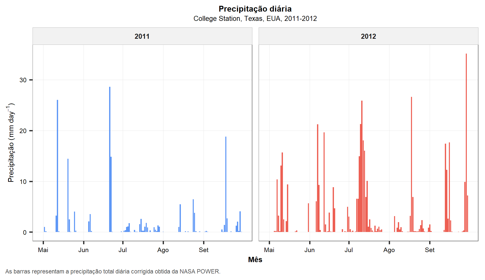
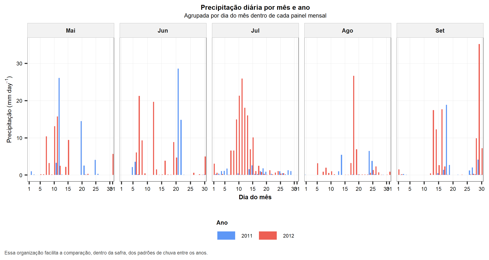
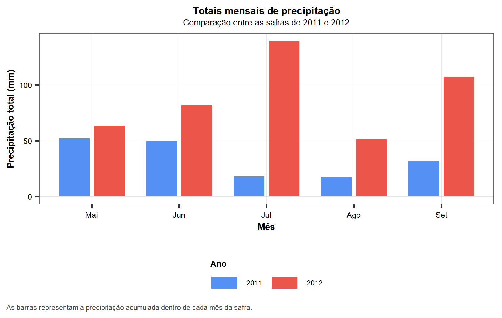
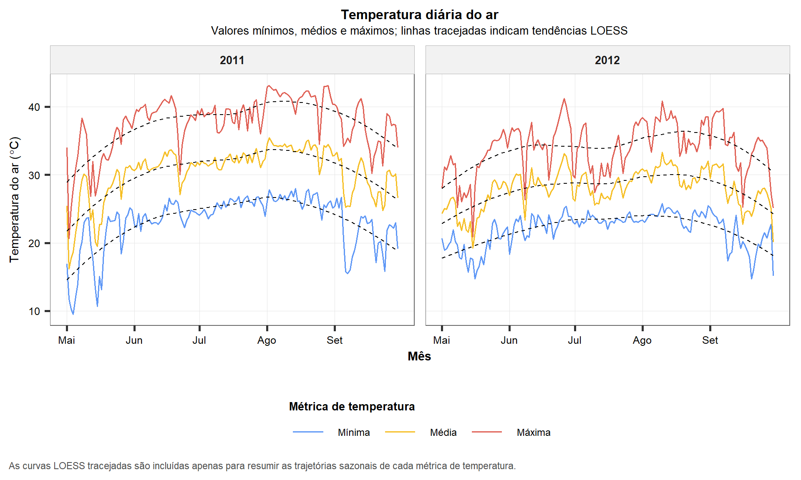
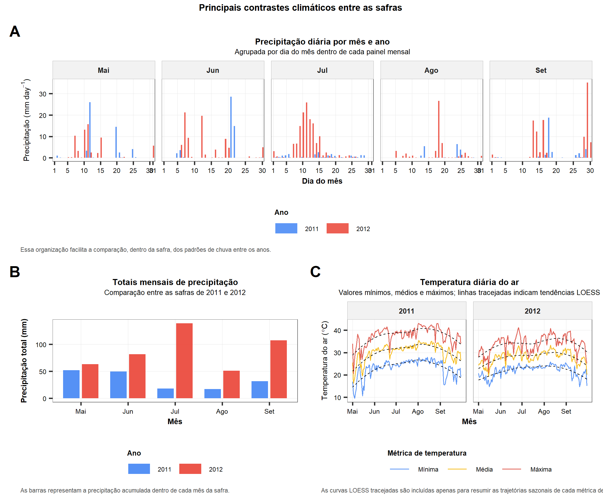
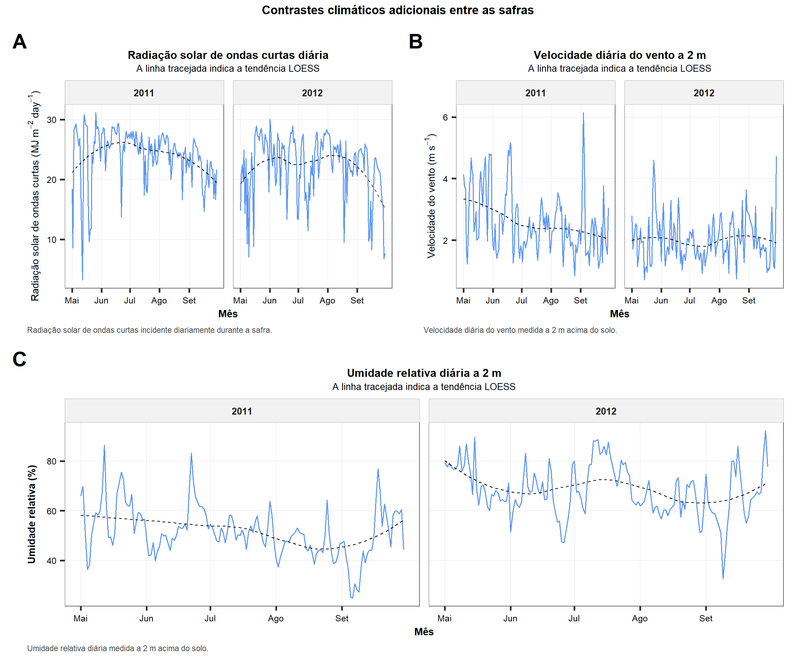

Last updated: 2026-05-05
Checks: 6 1
Knit directory:
Integrating-nir-genomic-kernel/
This reproducible R Markdown analysis was created with workflowr (version 1.7.2). The Checks tab describes the reproducibility checks that were applied when the results were created. The Past versions tab lists the development history.
The R Markdown file has unstaged changes. To know which version of
the R Markdown file created these results, you’ll want to first commit
it to the Git repo. If you’re still working on the analysis, you can
ignore this warning. When you’re finished, you can run
wflow_publish to commit the R Markdown file and build the
HTML.
Great job! The global environment was empty. Objects defined in the global environment can affect the analysis in your R Markdown file in unknown ways. For reproduciblity it’s best to always run the code in an empty environment.
The command set.seed(20250829) was run prior to running
the code in the R Markdown file. Setting a seed ensures that any results
that rely on randomness, e.g. subsampling or permutations, are
reproducible.
Great job! Recording the operating system, R version, and package versions is critical for reproducibility.
Nice! There were no cached chunks for this analysis, so you can be confident that you successfully produced the results during this run.
Great job! Using relative paths to the files within your workflowr project makes it easier to run your code on other machines.
Great! You are using Git for version control. Tracking code development and connecting the code version to the results is critical for reproducibility.
The results in this page were generated with repository version 885342c. See the Past versions tab to see a history of the changes made to the R Markdown and HTML files.
Note that you need to be careful to ensure that all relevant files for
the analysis have been committed to Git prior to generating the results
(you can use wflow_publish or
wflow_git_commit). workflowr only checks the R Markdown
file, but you know if there are other scripts or data files that it
depends on. Below is the status of the Git repository when the results
were generated:
Ignored files:
Ignored: .Rhistory
Ignored: .Rproj.user/
Ignored: analysis/analysis.Rmd
Ignored: analysis/run_cv0_cv00_only.R
Ignored: analysis/run_cv1_cv2_only.R
Ignored: analysis/script_tabelas_resultados_pipeline_v2.R
Ignored: data/Article_documents/
Ignored: data/Maize-NIRS-GBS-main/
Ignored: output/Matrizes/Geno.all.rds
Ignored: output/Matrizes/NIR.all.rds
Ignored: output/Matrizes/figures/
Ignored: output/adjust_models.rar
Ignored: output/climate_results/combined_additional_climate_plots.tiff
Ignored: output/climate_results/combined_climate_plot.tiff
Ignored: output/climate_results/daily_air_temperature.tiff
Ignored: output/climate_results/daily_precipitation_by_month.tiff
Ignored: output/climate_results/daily_precipitation_overview.tiff
Ignored: output/climate_results/daily_relative_humidity.tiff
Ignored: output/climate_results/daily_solar_radiation.tiff
Ignored: output/climate_results/daily_wind_speed.tiff
Ignored: output/climate_results/monthly_precipitation_totals.tiff
Ignored: output/cv-schemes.tiff
Ignored: output/figures/
Ignored: output/results/
Ignored: output/tables/pipeline_review/
Ignored: output/tables/prediction_cv0_cv00_raw.csv
Ignored: output/tables/prediction_cv1_cv2_by_rep_fold_env.csv
Ignored: output/tables/prediction_cv1_cv2_raw.csv
Ignored: output/variance_components/bglr_runs/GY/rep01/Eta1/VC_GY_Eta1_rep01_ETA_E_varB.dat
Ignored: output/variance_components/bglr_runs/GY/rep01/Eta1/VC_GY_Eta1_rep01_ETA_GE_varU.dat
Ignored: output/variance_components/bglr_runs/GY/rep01/Eta1/VC_GY_Eta1_rep01_ETA_G_varU.dat
Ignored: output/variance_components/bglr_runs/GY/rep01/Eta1/VC_GY_Eta1_rep01_mu.dat
Ignored: output/variance_components/bglr_runs/GY/rep01/Eta1/VC_GY_Eta1_rep01_varE.dat
Ignored: output/variance_components/bglr_runs/GY/rep01/Eta10/VC_GY_Eta10_rep01_ETA_E_varB.dat
Ignored: output/variance_components/bglr_runs/GY/rep01/Eta10/VC_GY_Eta10_rep01_ETA_GE_varU.dat
Ignored: output/variance_components/bglr_runs/GY/rep01/Eta10/VC_GY_Eta10_rep01_ETA_GW_varU.dat
Ignored: output/variance_components/bglr_runs/GY/rep01/Eta10/VC_GY_Eta10_rep01_ETA_G_varU.dat
Ignored: output/variance_components/bglr_runs/GY/rep01/Eta10/VC_GY_Eta10_rep01_ETA_W_varU.dat
Ignored: output/variance_components/bglr_runs/GY/rep01/Eta10/VC_GY_Eta10_rep01_mu.dat
Ignored: output/variance_components/bglr_runs/GY/rep01/Eta10/VC_GY_Eta10_rep01_varE.dat
Ignored: output/variance_components/bglr_runs/GY/rep01/Eta11/VC_GY_Eta11_rep01_ETA_E_varB.dat
Ignored: output/variance_components/bglr_runs/GY/rep01/Eta11/VC_GY_Eta11_rep01_ETA_PE_varU.dat
Ignored: output/variance_components/bglr_runs/GY/rep01/Eta11/VC_GY_Eta11_rep01_ETA_PW_varU.dat
Ignored: output/variance_components/bglr_runs/GY/rep01/Eta11/VC_GY_Eta11_rep01_ETA_P_varU.dat
Ignored: output/variance_components/bglr_runs/GY/rep01/Eta11/VC_GY_Eta11_rep01_ETA_W_varU.dat
Ignored: output/variance_components/bglr_runs/GY/rep01/Eta11/VC_GY_Eta11_rep01_mu.dat
Ignored: output/variance_components/bglr_runs/GY/rep01/Eta11/VC_GY_Eta11_rep01_varE.dat
Ignored: output/variance_components/bglr_runs/GY/rep01/Eta12/VC_GY_Eta12_rep01_ETA_E_varB.dat
Ignored: output/variance_components/bglr_runs/GY/rep01/Eta12/VC_GY_Eta12_rep01_ETA_GE_varU.dat
Ignored: output/variance_components/bglr_runs/GY/rep01/Eta12/VC_GY_Eta12_rep01_ETA_GW_varU.dat
Ignored: output/variance_components/bglr_runs/GY/rep01/Eta12/VC_GY_Eta12_rep01_ETA_G_varU.dat
Ignored: output/variance_components/bglr_runs/GY/rep01/Eta12/VC_GY_Eta12_rep01_ETA_PE_varU.dat
Ignored: output/variance_components/bglr_runs/GY/rep01/Eta12/VC_GY_Eta12_rep01_ETA_PW_varU.dat
Ignored: output/variance_components/bglr_runs/GY/rep01/Eta12/VC_GY_Eta12_rep01_ETA_P_varU.dat
Ignored: output/variance_components/bglr_runs/GY/rep01/Eta12/VC_GY_Eta12_rep01_ETA_W_varU.dat
Ignored: output/variance_components/bglr_runs/GY/rep01/Eta12/VC_GY_Eta12_rep01_mu.dat
Ignored: output/variance_components/bglr_runs/GY/rep01/Eta12/VC_GY_Eta12_rep01_varE.dat
Ignored: output/variance_components/bglr_runs/GY/rep01/Eta13/VC_GY_Eta13_rep01_ETA_E_varB.dat
Ignored: output/variance_components/bglr_runs/GY/rep01/Eta13/VC_GY_Eta13_rep01_ETA_GGKE_varU.dat
Ignored: output/variance_components/bglr_runs/GY/rep01/Eta13/VC_GY_Eta13_rep01_ETA_GGKW_varU.dat
Ignored: output/variance_components/bglr_runs/GY/rep01/Eta13/VC_GY_Eta13_rep01_ETA_GGK_varU.dat
Ignored: output/variance_components/bglr_runs/GY/rep01/Eta13/VC_GY_Eta13_rep01_ETA_W_varU.dat
Ignored: output/variance_components/bglr_runs/GY/rep01/Eta13/VC_GY_Eta13_rep01_mu.dat
Ignored: output/variance_components/bglr_runs/GY/rep01/Eta13/VC_GY_Eta13_rep01_varE.dat
Ignored: output/variance_components/bglr_runs/GY/rep01/Eta14/VC_GY_Eta14_rep01_ETA_E_varB.dat
Ignored: output/variance_components/bglr_runs/GY/rep01/Eta14/VC_GY_Eta14_rep01_ETA_PGKE_varU.dat
Ignored: output/variance_components/bglr_runs/GY/rep01/Eta14/VC_GY_Eta14_rep01_ETA_PGKW_varU.dat
Ignored: output/variance_components/bglr_runs/GY/rep01/Eta14/VC_GY_Eta14_rep01_ETA_PGK_varU.dat
Ignored: output/variance_components/bglr_runs/GY/rep01/Eta14/VC_GY_Eta14_rep01_ETA_W_varU.dat
Ignored: output/variance_components/bglr_runs/GY/rep01/Eta14/VC_GY_Eta14_rep01_mu.dat
Ignored: output/variance_components/bglr_runs/GY/rep01/Eta14/VC_GY_Eta14_rep01_varE.dat
Ignored: output/variance_components/bglr_runs/GY/rep01/Eta15/VC_GY_Eta15_rep01_ETA_E_varB.dat
Ignored: output/variance_components/bglr_runs/GY/rep01/Eta15/VC_GY_Eta15_rep01_ETA_GGKE_varU.dat
Ignored: output/variance_components/bglr_runs/GY/rep01/Eta15/VC_GY_Eta15_rep01_ETA_GGKW_varU.dat
Ignored: output/variance_components/bglr_runs/GY/rep01/Eta15/VC_GY_Eta15_rep01_ETA_GGK_varU.dat
Ignored: output/variance_components/bglr_runs/GY/rep01/Eta15/VC_GY_Eta15_rep01_ETA_PGKE_varU.dat
Ignored: output/variance_components/bglr_runs/GY/rep01/Eta15/VC_GY_Eta15_rep01_ETA_PGKW_varU.dat
Ignored: output/variance_components/bglr_runs/GY/rep01/Eta15/VC_GY_Eta15_rep01_ETA_PGK_varU.dat
Ignored: output/variance_components/bglr_runs/GY/rep01/Eta15/VC_GY_Eta15_rep01_ETA_W_varU.dat
Ignored: output/variance_components/bglr_runs/GY/rep01/Eta15/VC_GY_Eta15_rep01_mu.dat
Ignored: output/variance_components/bglr_runs/GY/rep01/Eta15/VC_GY_Eta15_rep01_varE.dat
Ignored: output/variance_components/bglr_runs/GY/rep01/Eta16/VC_GY_Eta16_rep01_ETA_E_varB.dat
Ignored: output/variance_components/bglr_runs/GY/rep01/Eta16/VC_GY_Eta16_rep01_ETA_GAKE_varU.dat
Ignored: output/variance_components/bglr_runs/GY/rep01/Eta16/VC_GY_Eta16_rep01_ETA_GAKW_varU.dat
Ignored: output/variance_components/bglr_runs/GY/rep01/Eta16/VC_GY_Eta16_rep01_ETA_GAK_varU.dat
Ignored: output/variance_components/bglr_runs/GY/rep01/Eta16/VC_GY_Eta16_rep01_ETA_W_varU.dat
Ignored: output/variance_components/bglr_runs/GY/rep01/Eta16/VC_GY_Eta16_rep01_mu.dat
Ignored: output/variance_components/bglr_runs/GY/rep01/Eta16/VC_GY_Eta16_rep01_varE.dat
Ignored: output/variance_components/bglr_runs/GY/rep01/Eta17/VC_GY_Eta17_rep01_ETA_E_varB.dat
Ignored: output/variance_components/bglr_runs/GY/rep01/Eta17/VC_GY_Eta17_rep01_ETA_PAKE_varU.dat
Ignored: output/variance_components/bglr_runs/GY/rep01/Eta17/VC_GY_Eta17_rep01_ETA_PAKW_varU.dat
Ignored: output/variance_components/bglr_runs/GY/rep01/Eta17/VC_GY_Eta17_rep01_ETA_PAK_varU.dat
Ignored: output/variance_components/bglr_runs/GY/rep01/Eta17/VC_GY_Eta17_rep01_ETA_W_varU.dat
Ignored: output/variance_components/bglr_runs/GY/rep01/Eta17/VC_GY_Eta17_rep01_mu.dat
Ignored: output/variance_components/bglr_runs/GY/rep01/Eta17/VC_GY_Eta17_rep01_varE.dat
Ignored: output/variance_components/bglr_runs/GY/rep01/Eta18/VC_GY_Eta18_rep01_ETA_E_varB.dat
Ignored: output/variance_components/bglr_runs/GY/rep01/Eta18/VC_GY_Eta18_rep01_ETA_GAKE_varU.dat
Ignored: output/variance_components/bglr_runs/GY/rep01/Eta18/VC_GY_Eta18_rep01_ETA_GAKW_varU.dat
Ignored: output/variance_components/bglr_runs/GY/rep01/Eta18/VC_GY_Eta18_rep01_ETA_GAK_varU.dat
Ignored: output/variance_components/bglr_runs/GY/rep01/Eta18/VC_GY_Eta18_rep01_ETA_PAKE_varU.dat
Ignored: output/variance_components/bglr_runs/GY/rep01/Eta18/VC_GY_Eta18_rep01_ETA_PAKW_varU.dat
Ignored: output/variance_components/bglr_runs/GY/rep01/Eta18/VC_GY_Eta18_rep01_ETA_PAK_varU.dat
Ignored: output/variance_components/bglr_runs/GY/rep01/Eta18/VC_GY_Eta18_rep01_ETA_W_varU.dat
Ignored: output/variance_components/bglr_runs/GY/rep01/Eta18/VC_GY_Eta18_rep01_mu.dat
Ignored: output/variance_components/bglr_runs/GY/rep01/Eta18/VC_GY_Eta18_rep01_varE.dat
Ignored: output/variance_components/bglr_runs/GY/rep01/Eta2/VC_GY_Eta2_rep01_ETA_E_varB.dat
Ignored: output/variance_components/bglr_runs/GY/rep01/Eta2/VC_GY_Eta2_rep01_ETA_PE_varU.dat
Ignored: output/variance_components/bglr_runs/GY/rep01/Eta2/VC_GY_Eta2_rep01_ETA_P_varU.dat
Ignored: output/variance_components/bglr_runs/GY/rep01/Eta2/VC_GY_Eta2_rep01_mu.dat
Ignored: output/variance_components/bglr_runs/GY/rep01/Eta2/VC_GY_Eta2_rep01_varE.dat
Ignored: output/variance_components/bglr_runs/GY/rep01/Eta3/VC_GY_Eta3_rep01_ETA_E_varB.dat
Ignored: output/variance_components/bglr_runs/GY/rep01/Eta3/VC_GY_Eta3_rep01_ETA_GGKE_varU.dat
Ignored: output/variance_components/bglr_runs/GY/rep01/Eta3/VC_GY_Eta3_rep01_ETA_GGK_varU.dat
Ignored: output/variance_components/bglr_runs/GY/rep01/Eta3/VC_GY_Eta3_rep01_mu.dat
Ignored: output/variance_components/bglr_runs/GY/rep01/Eta3/VC_GY_Eta3_rep01_varE.dat
Ignored: output/variance_components/bglr_runs/GY/rep01/Eta4/VC_GY_Eta4_rep01_ETA_E_varB.dat
Ignored: output/variance_components/bglr_runs/GY/rep01/Eta4/VC_GY_Eta4_rep01_ETA_PGKE_varU.dat
Ignored: output/variance_components/bglr_runs/GY/rep01/Eta4/VC_GY_Eta4_rep01_ETA_PGK_varU.dat
Ignored: output/variance_components/bglr_runs/GY/rep01/Eta4/VC_GY_Eta4_rep01_mu.dat
Ignored: output/variance_components/bglr_runs/GY/rep01/Eta4/VC_GY_Eta4_rep01_varE.dat
Ignored: output/variance_components/bglr_runs/GY/rep01/Eta5/VC_GY_Eta5_rep01_ETA_E_varB.dat
Ignored: output/variance_components/bglr_runs/GY/rep01/Eta5/VC_GY_Eta5_rep01_ETA_GAKE_varU.dat
Ignored: output/variance_components/bglr_runs/GY/rep01/Eta5/VC_GY_Eta5_rep01_ETA_GAK_varU.dat
Ignored: output/variance_components/bglr_runs/GY/rep01/Eta5/VC_GY_Eta5_rep01_mu.dat
Ignored: output/variance_components/bglr_runs/GY/rep01/Eta5/VC_GY_Eta5_rep01_varE.dat
Ignored: output/variance_components/bglr_runs/GY/rep01/Eta6/VC_GY_Eta6_rep01_ETA_E_varB.dat
Ignored: output/variance_components/bglr_runs/GY/rep01/Eta6/VC_GY_Eta6_rep01_ETA_PAKE_varU.dat
Ignored: output/variance_components/bglr_runs/GY/rep01/Eta6/VC_GY_Eta6_rep01_ETA_PAK_varU.dat
Ignored: output/variance_components/bglr_runs/GY/rep01/Eta6/VC_GY_Eta6_rep01_mu.dat
Ignored: output/variance_components/bglr_runs/GY/rep01/Eta6/VC_GY_Eta6_rep01_varE.dat
Ignored: output/variance_components/bglr_runs/GY/rep01/Eta7/VC_GY_Eta7_rep01_ETA_E_varB.dat
Ignored: output/variance_components/bglr_runs/GY/rep01/Eta7/VC_GY_Eta7_rep01_ETA_GE_varU.dat
Ignored: output/variance_components/bglr_runs/GY/rep01/Eta7/VC_GY_Eta7_rep01_ETA_G_varU.dat
Ignored: output/variance_components/bglr_runs/GY/rep01/Eta7/VC_GY_Eta7_rep01_ETA_PE_varU.dat
Ignored: output/variance_components/bglr_runs/GY/rep01/Eta7/VC_GY_Eta7_rep01_ETA_P_varU.dat
Ignored: output/variance_components/bglr_runs/GY/rep01/Eta7/VC_GY_Eta7_rep01_mu.dat
Ignored: output/variance_components/bglr_runs/GY/rep01/Eta7/VC_GY_Eta7_rep01_varE.dat
Ignored: output/variance_components/bglr_runs/GY/rep01/Eta8/VC_GY_Eta8_rep01_ETA_E_varB.dat
Ignored: output/variance_components/bglr_runs/GY/rep01/Eta8/VC_GY_Eta8_rep01_ETA_GGKE_varU.dat
Ignored: output/variance_components/bglr_runs/GY/rep01/Eta8/VC_GY_Eta8_rep01_ETA_GGK_varU.dat
Ignored: output/variance_components/bglr_runs/GY/rep01/Eta8/VC_GY_Eta8_rep01_ETA_PGKE_varU.dat
Ignored: output/variance_components/bglr_runs/GY/rep01/Eta8/VC_GY_Eta8_rep01_ETA_PGK_varU.dat
Ignored: output/variance_components/bglr_runs/GY/rep01/Eta8/VC_GY_Eta8_rep01_mu.dat
Ignored: output/variance_components/bglr_runs/GY/rep01/Eta8/VC_GY_Eta8_rep01_varE.dat
Ignored: output/variance_components/bglr_runs/GY/rep01/Eta9/VC_GY_Eta9_rep01_ETA_E_varB.dat
Ignored: output/variance_components/bglr_runs/GY/rep01/Eta9/VC_GY_Eta9_rep01_ETA_GAKE_varU.dat
Ignored: output/variance_components/bglr_runs/GY/rep01/Eta9/VC_GY_Eta9_rep01_ETA_GAK_varU.dat
Ignored: output/variance_components/bglr_runs/GY/rep01/Eta9/VC_GY_Eta9_rep01_ETA_PAKE_varU.dat
Ignored: output/variance_components/bglr_runs/GY/rep01/Eta9/VC_GY_Eta9_rep01_ETA_PAK_varU.dat
Ignored: output/variance_components/bglr_runs/GY/rep01/Eta9/VC_GY_Eta9_rep01_mu.dat
Ignored: output/variance_components/bglr_runs/GY/rep01/Eta9/VC_GY_Eta9_rep01_varE.dat
Ignored: output/variance_components/bglr_runs/GY/rep02/Eta1/VC_GY_Eta1_rep02_ETA_E_varB.dat
Ignored: output/variance_components/bglr_runs/GY/rep02/Eta1/VC_GY_Eta1_rep02_ETA_GE_varU.dat
Ignored: output/variance_components/bglr_runs/GY/rep02/Eta1/VC_GY_Eta1_rep02_ETA_G_varU.dat
Ignored: output/variance_components/bglr_runs/GY/rep02/Eta1/VC_GY_Eta1_rep02_mu.dat
Ignored: output/variance_components/bglr_runs/GY/rep02/Eta1/VC_GY_Eta1_rep02_varE.dat
Ignored: output/variance_components/bglr_runs/GY/rep02/Eta10/VC_GY_Eta10_rep02_ETA_E_varB.dat
Ignored: output/variance_components/bglr_runs/GY/rep02/Eta10/VC_GY_Eta10_rep02_ETA_GE_varU.dat
Ignored: output/variance_components/bglr_runs/GY/rep02/Eta10/VC_GY_Eta10_rep02_ETA_GW_varU.dat
Ignored: output/variance_components/bglr_runs/GY/rep02/Eta10/VC_GY_Eta10_rep02_ETA_G_varU.dat
Ignored: output/variance_components/bglr_runs/GY/rep02/Eta10/VC_GY_Eta10_rep02_ETA_W_varU.dat
Ignored: output/variance_components/bglr_runs/GY/rep02/Eta10/VC_GY_Eta10_rep02_mu.dat
Ignored: output/variance_components/bglr_runs/GY/rep02/Eta10/VC_GY_Eta10_rep02_varE.dat
Ignored: output/variance_components/bglr_runs/GY/rep02/Eta11/VC_GY_Eta11_rep02_ETA_E_varB.dat
Ignored: output/variance_components/bglr_runs/GY/rep02/Eta11/VC_GY_Eta11_rep02_ETA_PE_varU.dat
Ignored: output/variance_components/bglr_runs/GY/rep02/Eta11/VC_GY_Eta11_rep02_ETA_PW_varU.dat
Ignored: output/variance_components/bglr_runs/GY/rep02/Eta11/VC_GY_Eta11_rep02_ETA_P_varU.dat
Ignored: output/variance_components/bglr_runs/GY/rep02/Eta11/VC_GY_Eta11_rep02_ETA_W_varU.dat
Ignored: output/variance_components/bglr_runs/GY/rep02/Eta11/VC_GY_Eta11_rep02_mu.dat
Ignored: output/variance_components/bglr_runs/GY/rep02/Eta11/VC_GY_Eta11_rep02_varE.dat
Ignored: output/variance_components/bglr_runs/GY/rep02/Eta12/VC_GY_Eta12_rep02_ETA_E_varB.dat
Ignored: output/variance_components/bglr_runs/GY/rep02/Eta12/VC_GY_Eta12_rep02_ETA_GE_varU.dat
Ignored: output/variance_components/bglr_runs/GY/rep02/Eta12/VC_GY_Eta12_rep02_ETA_GW_varU.dat
Ignored: output/variance_components/bglr_runs/GY/rep02/Eta12/VC_GY_Eta12_rep02_ETA_G_varU.dat
Ignored: output/variance_components/bglr_runs/GY/rep02/Eta12/VC_GY_Eta12_rep02_ETA_PE_varU.dat
Ignored: output/variance_components/bglr_runs/GY/rep02/Eta12/VC_GY_Eta12_rep02_ETA_PW_varU.dat
Ignored: output/variance_components/bglr_runs/GY/rep02/Eta12/VC_GY_Eta12_rep02_ETA_P_varU.dat
Ignored: output/variance_components/bglr_runs/GY/rep02/Eta12/VC_GY_Eta12_rep02_ETA_W_varU.dat
Ignored: output/variance_components/bglr_runs/GY/rep02/Eta12/VC_GY_Eta12_rep02_mu.dat
Ignored: output/variance_components/bglr_runs/GY/rep02/Eta12/VC_GY_Eta12_rep02_varE.dat
Ignored: output/variance_components/bglr_runs/GY/rep02/Eta13/VC_GY_Eta13_rep02_ETA_E_varB.dat
Ignored: output/variance_components/bglr_runs/GY/rep02/Eta13/VC_GY_Eta13_rep02_ETA_GGKE_varU.dat
Ignored: output/variance_components/bglr_runs/GY/rep02/Eta13/VC_GY_Eta13_rep02_ETA_GGKW_varU.dat
Ignored: output/variance_components/bglr_runs/GY/rep02/Eta13/VC_GY_Eta13_rep02_ETA_GGK_varU.dat
Ignored: output/variance_components/bglr_runs/GY/rep02/Eta13/VC_GY_Eta13_rep02_ETA_W_varU.dat
Ignored: output/variance_components/bglr_runs/GY/rep02/Eta13/VC_GY_Eta13_rep02_mu.dat
Ignored: output/variance_components/bglr_runs/GY/rep02/Eta13/VC_GY_Eta13_rep02_varE.dat
Ignored: output/variance_components/bglr_runs/GY/rep02/Eta14/VC_GY_Eta14_rep02_ETA_E_varB.dat
Ignored: output/variance_components/bglr_runs/GY/rep02/Eta14/VC_GY_Eta14_rep02_ETA_PGKE_varU.dat
Ignored: output/variance_components/bglr_runs/GY/rep02/Eta14/VC_GY_Eta14_rep02_ETA_PGKW_varU.dat
Ignored: output/variance_components/bglr_runs/GY/rep02/Eta14/VC_GY_Eta14_rep02_ETA_PGK_varU.dat
Ignored: output/variance_components/bglr_runs/GY/rep02/Eta14/VC_GY_Eta14_rep02_ETA_W_varU.dat
Ignored: output/variance_components/bglr_runs/GY/rep02/Eta14/VC_GY_Eta14_rep02_mu.dat
Ignored: output/variance_components/bglr_runs/GY/rep02/Eta14/VC_GY_Eta14_rep02_varE.dat
Ignored: output/variance_components/bglr_runs/GY/rep02/Eta15/VC_GY_Eta15_rep02_ETA_E_varB.dat
Ignored: output/variance_components/bglr_runs/GY/rep02/Eta15/VC_GY_Eta15_rep02_ETA_GGKE_varU.dat
Ignored: output/variance_components/bglr_runs/GY/rep02/Eta15/VC_GY_Eta15_rep02_ETA_GGKW_varU.dat
Ignored: output/variance_components/bglr_runs/GY/rep02/Eta15/VC_GY_Eta15_rep02_ETA_GGK_varU.dat
Ignored: output/variance_components/bglr_runs/GY/rep02/Eta15/VC_GY_Eta15_rep02_ETA_PGKE_varU.dat
Ignored: output/variance_components/bglr_runs/GY/rep02/Eta15/VC_GY_Eta15_rep02_ETA_PGKW_varU.dat
Ignored: output/variance_components/bglr_runs/GY/rep02/Eta15/VC_GY_Eta15_rep02_ETA_PGK_varU.dat
Ignored: output/variance_components/bglr_runs/GY/rep02/Eta15/VC_GY_Eta15_rep02_ETA_W_varU.dat
Ignored: output/variance_components/bglr_runs/GY/rep02/Eta15/VC_GY_Eta15_rep02_mu.dat
Ignored: output/variance_components/bglr_runs/GY/rep02/Eta15/VC_GY_Eta15_rep02_varE.dat
Ignored: output/variance_components/bglr_runs/GY/rep02/Eta16/VC_GY_Eta16_rep02_ETA_E_varB.dat
Ignored: output/variance_components/bglr_runs/GY/rep02/Eta16/VC_GY_Eta16_rep02_ETA_GAKE_varU.dat
Ignored: output/variance_components/bglr_runs/GY/rep02/Eta16/VC_GY_Eta16_rep02_ETA_GAKW_varU.dat
Ignored: output/variance_components/bglr_runs/GY/rep02/Eta16/VC_GY_Eta16_rep02_ETA_GAK_varU.dat
Ignored: output/variance_components/bglr_runs/GY/rep02/Eta16/VC_GY_Eta16_rep02_ETA_W_varU.dat
Ignored: output/variance_components/bglr_runs/GY/rep02/Eta16/VC_GY_Eta16_rep02_mu.dat
Ignored: output/variance_components/bglr_runs/GY/rep02/Eta16/VC_GY_Eta16_rep02_varE.dat
Ignored: output/variance_components/bglr_runs/GY/rep02/Eta17/VC_GY_Eta17_rep02_ETA_E_varB.dat
Ignored: output/variance_components/bglr_runs/GY/rep02/Eta17/VC_GY_Eta17_rep02_ETA_PAKE_varU.dat
Ignored: output/variance_components/bglr_runs/GY/rep02/Eta17/VC_GY_Eta17_rep02_ETA_PAKW_varU.dat
Ignored: output/variance_components/bglr_runs/GY/rep02/Eta17/VC_GY_Eta17_rep02_ETA_PAK_varU.dat
Ignored: output/variance_components/bglr_runs/GY/rep02/Eta17/VC_GY_Eta17_rep02_ETA_W_varU.dat
Ignored: output/variance_components/bglr_runs/GY/rep02/Eta17/VC_GY_Eta17_rep02_mu.dat
Ignored: output/variance_components/bglr_runs/GY/rep02/Eta17/VC_GY_Eta17_rep02_varE.dat
Ignored: output/variance_components/bglr_runs/GY/rep02/Eta18/VC_GY_Eta18_rep02_ETA_E_varB.dat
Ignored: output/variance_components/bglr_runs/GY/rep02/Eta18/VC_GY_Eta18_rep02_ETA_GAKE_varU.dat
Ignored: output/variance_components/bglr_runs/GY/rep02/Eta18/VC_GY_Eta18_rep02_ETA_GAKW_varU.dat
Ignored: output/variance_components/bglr_runs/GY/rep02/Eta18/VC_GY_Eta18_rep02_ETA_GAK_varU.dat
Ignored: output/variance_components/bglr_runs/GY/rep02/Eta18/VC_GY_Eta18_rep02_ETA_PAKE_varU.dat
Ignored: output/variance_components/bglr_runs/GY/rep02/Eta18/VC_GY_Eta18_rep02_ETA_PAKW_varU.dat
Ignored: output/variance_components/bglr_runs/GY/rep02/Eta18/VC_GY_Eta18_rep02_ETA_PAK_varU.dat
Ignored: output/variance_components/bglr_runs/GY/rep02/Eta18/VC_GY_Eta18_rep02_ETA_W_varU.dat
Ignored: output/variance_components/bglr_runs/GY/rep02/Eta18/VC_GY_Eta18_rep02_mu.dat
Ignored: output/variance_components/bglr_runs/GY/rep02/Eta18/VC_GY_Eta18_rep02_varE.dat
Ignored: output/variance_components/bglr_runs/GY/rep02/Eta2/VC_GY_Eta2_rep02_ETA_E_varB.dat
Ignored: output/variance_components/bglr_runs/GY/rep02/Eta2/VC_GY_Eta2_rep02_ETA_PE_varU.dat
Ignored: output/variance_components/bglr_runs/GY/rep02/Eta2/VC_GY_Eta2_rep02_ETA_P_varU.dat
Ignored: output/variance_components/bglr_runs/GY/rep02/Eta2/VC_GY_Eta2_rep02_mu.dat
Ignored: output/variance_components/bglr_runs/GY/rep02/Eta2/VC_GY_Eta2_rep02_varE.dat
Ignored: output/variance_components/bglr_runs/GY/rep02/Eta3/VC_GY_Eta3_rep02_ETA_E_varB.dat
Ignored: output/variance_components/bglr_runs/GY/rep02/Eta3/VC_GY_Eta3_rep02_ETA_GGKE_varU.dat
Ignored: output/variance_components/bglr_runs/GY/rep02/Eta3/VC_GY_Eta3_rep02_ETA_GGK_varU.dat
Ignored: output/variance_components/bglr_runs/GY/rep02/Eta3/VC_GY_Eta3_rep02_mu.dat
Ignored: output/variance_components/bglr_runs/GY/rep02/Eta3/VC_GY_Eta3_rep02_varE.dat
Ignored: output/variance_components/bglr_runs/GY/rep02/Eta4/VC_GY_Eta4_rep02_ETA_E_varB.dat
Ignored: output/variance_components/bglr_runs/GY/rep02/Eta4/VC_GY_Eta4_rep02_ETA_PGKE_varU.dat
Ignored: output/variance_components/bglr_runs/GY/rep02/Eta4/VC_GY_Eta4_rep02_ETA_PGK_varU.dat
Ignored: output/variance_components/bglr_runs/GY/rep02/Eta4/VC_GY_Eta4_rep02_mu.dat
Ignored: output/variance_components/bglr_runs/GY/rep02/Eta4/VC_GY_Eta4_rep02_varE.dat
Ignored: output/variance_components/bglr_runs/GY/rep02/Eta5/VC_GY_Eta5_rep02_ETA_E_varB.dat
Ignored: output/variance_components/bglr_runs/GY/rep02/Eta5/VC_GY_Eta5_rep02_ETA_GAKE_varU.dat
Ignored: output/variance_components/bglr_runs/GY/rep02/Eta5/VC_GY_Eta5_rep02_ETA_GAK_varU.dat
Ignored: output/variance_components/bglr_runs/GY/rep02/Eta5/VC_GY_Eta5_rep02_mu.dat
Ignored: output/variance_components/bglr_runs/GY/rep02/Eta5/VC_GY_Eta5_rep02_varE.dat
Ignored: output/variance_components/bglr_runs/GY/rep02/Eta6/VC_GY_Eta6_rep02_ETA_E_varB.dat
Ignored: output/variance_components/bglr_runs/GY/rep02/Eta6/VC_GY_Eta6_rep02_ETA_PAKE_varU.dat
Ignored: output/variance_components/bglr_runs/GY/rep02/Eta6/VC_GY_Eta6_rep02_ETA_PAK_varU.dat
Ignored: output/variance_components/bglr_runs/GY/rep02/Eta6/VC_GY_Eta6_rep02_mu.dat
Ignored: output/variance_components/bglr_runs/GY/rep02/Eta6/VC_GY_Eta6_rep02_varE.dat
Ignored: output/variance_components/bglr_runs/GY/rep02/Eta7/VC_GY_Eta7_rep02_ETA_E_varB.dat
Ignored: output/variance_components/bglr_runs/GY/rep02/Eta7/VC_GY_Eta7_rep02_ETA_GE_varU.dat
Ignored: output/variance_components/bglr_runs/GY/rep02/Eta7/VC_GY_Eta7_rep02_ETA_G_varU.dat
Ignored: output/variance_components/bglr_runs/GY/rep02/Eta7/VC_GY_Eta7_rep02_ETA_PE_varU.dat
Ignored: output/variance_components/bglr_runs/GY/rep02/Eta7/VC_GY_Eta7_rep02_ETA_P_varU.dat
Ignored: output/variance_components/bglr_runs/GY/rep02/Eta7/VC_GY_Eta7_rep02_mu.dat
Ignored: output/variance_components/bglr_runs/GY/rep02/Eta7/VC_GY_Eta7_rep02_varE.dat
Ignored: output/variance_components/bglr_runs/GY/rep02/Eta8/VC_GY_Eta8_rep02_ETA_E_varB.dat
Ignored: output/variance_components/bglr_runs/GY/rep02/Eta8/VC_GY_Eta8_rep02_ETA_GGKE_varU.dat
Ignored: output/variance_components/bglr_runs/GY/rep02/Eta8/VC_GY_Eta8_rep02_ETA_GGK_varU.dat
Ignored: output/variance_components/bglr_runs/GY/rep02/Eta8/VC_GY_Eta8_rep02_ETA_PGKE_varU.dat
Ignored: output/variance_components/bglr_runs/GY/rep02/Eta8/VC_GY_Eta8_rep02_ETA_PGK_varU.dat
Ignored: output/variance_components/bglr_runs/GY/rep02/Eta8/VC_GY_Eta8_rep02_mu.dat
Ignored: output/variance_components/bglr_runs/GY/rep02/Eta8/VC_GY_Eta8_rep02_varE.dat
Ignored: output/variance_components/bglr_runs/GY/rep02/Eta9/VC_GY_Eta9_rep02_ETA_E_varB.dat
Ignored: output/variance_components/bglr_runs/GY/rep02/Eta9/VC_GY_Eta9_rep02_ETA_GAKE_varU.dat
Ignored: output/variance_components/bglr_runs/GY/rep02/Eta9/VC_GY_Eta9_rep02_ETA_GAK_varU.dat
Ignored: output/variance_components/bglr_runs/GY/rep02/Eta9/VC_GY_Eta9_rep02_ETA_PAKE_varU.dat
Ignored: output/variance_components/bglr_runs/GY/rep02/Eta9/VC_GY_Eta9_rep02_ETA_PAK_varU.dat
Ignored: output/variance_components/bglr_runs/GY/rep02/Eta9/VC_GY_Eta9_rep02_mu.dat
Ignored: output/variance_components/bglr_runs/GY/rep02/Eta9/VC_GY_Eta9_rep02_varE.dat
Ignored: output/variance_components/bglr_runs/GY/rep03/Eta1/VC_GY_Eta1_rep03_ETA_E_varB.dat
Ignored: output/variance_components/bglr_runs/GY/rep03/Eta1/VC_GY_Eta1_rep03_ETA_GE_varU.dat
Ignored: output/variance_components/bglr_runs/GY/rep03/Eta1/VC_GY_Eta1_rep03_ETA_G_varU.dat
Ignored: output/variance_components/bglr_runs/GY/rep03/Eta1/VC_GY_Eta1_rep03_mu.dat
Ignored: output/variance_components/bglr_runs/GY/rep03/Eta1/VC_GY_Eta1_rep03_varE.dat
Ignored: output/variance_components/bglr_runs/GY/rep03/Eta10/VC_GY_Eta10_rep03_ETA_E_varB.dat
Ignored: output/variance_components/bglr_runs/GY/rep03/Eta10/VC_GY_Eta10_rep03_ETA_GE_varU.dat
Ignored: output/variance_components/bglr_runs/GY/rep03/Eta10/VC_GY_Eta10_rep03_ETA_GW_varU.dat
Ignored: output/variance_components/bglr_runs/GY/rep03/Eta10/VC_GY_Eta10_rep03_ETA_G_varU.dat
Ignored: output/variance_components/bglr_runs/GY/rep03/Eta10/VC_GY_Eta10_rep03_ETA_W_varU.dat
Ignored: output/variance_components/bglr_runs/GY/rep03/Eta10/VC_GY_Eta10_rep03_mu.dat
Ignored: output/variance_components/bglr_runs/GY/rep03/Eta10/VC_GY_Eta10_rep03_varE.dat
Ignored: output/variance_components/bglr_runs/GY/rep03/Eta11/VC_GY_Eta11_rep03_ETA_E_varB.dat
Ignored: output/variance_components/bglr_runs/GY/rep03/Eta11/VC_GY_Eta11_rep03_ETA_PE_varU.dat
Ignored: output/variance_components/bglr_runs/GY/rep03/Eta11/VC_GY_Eta11_rep03_ETA_PW_varU.dat
Ignored: output/variance_components/bglr_runs/GY/rep03/Eta11/VC_GY_Eta11_rep03_ETA_P_varU.dat
Ignored: output/variance_components/bglr_runs/GY/rep03/Eta11/VC_GY_Eta11_rep03_ETA_W_varU.dat
Ignored: output/variance_components/bglr_runs/GY/rep03/Eta11/VC_GY_Eta11_rep03_mu.dat
Ignored: output/variance_components/bglr_runs/GY/rep03/Eta11/VC_GY_Eta11_rep03_varE.dat
Ignored: output/variance_components/bglr_runs/GY/rep03/Eta12/VC_GY_Eta12_rep03_ETA_E_varB.dat
Ignored: output/variance_components/bglr_runs/GY/rep03/Eta12/VC_GY_Eta12_rep03_ETA_GE_varU.dat
Ignored: output/variance_components/bglr_runs/GY/rep03/Eta12/VC_GY_Eta12_rep03_ETA_GW_varU.dat
Ignored: output/variance_components/bglr_runs/GY/rep03/Eta12/VC_GY_Eta12_rep03_ETA_G_varU.dat
Ignored: output/variance_components/bglr_runs/GY/rep03/Eta12/VC_GY_Eta12_rep03_ETA_PE_varU.dat
Ignored: output/variance_components/bglr_runs/GY/rep03/Eta12/VC_GY_Eta12_rep03_ETA_PW_varU.dat
Ignored: output/variance_components/bglr_runs/GY/rep03/Eta12/VC_GY_Eta12_rep03_ETA_P_varU.dat
Ignored: output/variance_components/bglr_runs/GY/rep03/Eta12/VC_GY_Eta12_rep03_ETA_W_varU.dat
Ignored: output/variance_components/bglr_runs/GY/rep03/Eta12/VC_GY_Eta12_rep03_mu.dat
Ignored: output/variance_components/bglr_runs/GY/rep03/Eta12/VC_GY_Eta12_rep03_varE.dat
Ignored: output/variance_components/bglr_runs/GY/rep03/Eta13/VC_GY_Eta13_rep03_ETA_E_varB.dat
Ignored: output/variance_components/bglr_runs/GY/rep03/Eta13/VC_GY_Eta13_rep03_ETA_GGKE_varU.dat
Ignored: output/variance_components/bglr_runs/GY/rep03/Eta13/VC_GY_Eta13_rep03_ETA_GGKW_varU.dat
Ignored: output/variance_components/bglr_runs/GY/rep03/Eta13/VC_GY_Eta13_rep03_ETA_GGK_varU.dat
Ignored: output/variance_components/bglr_runs/GY/rep03/Eta13/VC_GY_Eta13_rep03_ETA_W_varU.dat
Ignored: output/variance_components/bglr_runs/GY/rep03/Eta13/VC_GY_Eta13_rep03_mu.dat
Ignored: output/variance_components/bglr_runs/GY/rep03/Eta13/VC_GY_Eta13_rep03_varE.dat
Ignored: output/variance_components/bglr_runs/GY/rep03/Eta14/VC_GY_Eta14_rep03_ETA_E_varB.dat
Ignored: output/variance_components/bglr_runs/GY/rep03/Eta14/VC_GY_Eta14_rep03_ETA_PGKE_varU.dat
Ignored: output/variance_components/bglr_runs/GY/rep03/Eta14/VC_GY_Eta14_rep03_ETA_PGKW_varU.dat
Ignored: output/variance_components/bglr_runs/GY/rep03/Eta14/VC_GY_Eta14_rep03_ETA_PGK_varU.dat
Ignored: output/variance_components/bglr_runs/GY/rep03/Eta14/VC_GY_Eta14_rep03_ETA_W_varU.dat
Ignored: output/variance_components/bglr_runs/GY/rep03/Eta14/VC_GY_Eta14_rep03_mu.dat
Ignored: output/variance_components/bglr_runs/GY/rep03/Eta14/VC_GY_Eta14_rep03_varE.dat
Ignored: output/variance_components/bglr_runs/GY/rep03/Eta15/VC_GY_Eta15_rep03_ETA_E_varB.dat
Ignored: output/variance_components/bglr_runs/GY/rep03/Eta15/VC_GY_Eta15_rep03_ETA_GGKE_varU.dat
Ignored: output/variance_components/bglr_runs/GY/rep03/Eta15/VC_GY_Eta15_rep03_ETA_GGKW_varU.dat
Ignored: output/variance_components/bglr_runs/GY/rep03/Eta15/VC_GY_Eta15_rep03_ETA_GGK_varU.dat
Ignored: output/variance_components/bglr_runs/GY/rep03/Eta15/VC_GY_Eta15_rep03_ETA_PGKE_varU.dat
Ignored: output/variance_components/bglr_runs/GY/rep03/Eta15/VC_GY_Eta15_rep03_ETA_PGKW_varU.dat
Ignored: output/variance_components/bglr_runs/GY/rep03/Eta15/VC_GY_Eta15_rep03_ETA_PGK_varU.dat
Ignored: output/variance_components/bglr_runs/GY/rep03/Eta15/VC_GY_Eta15_rep03_ETA_W_varU.dat
Ignored: output/variance_components/bglr_runs/GY/rep03/Eta15/VC_GY_Eta15_rep03_mu.dat
Ignored: output/variance_components/bglr_runs/GY/rep03/Eta15/VC_GY_Eta15_rep03_varE.dat
Ignored: output/variance_components/bglr_runs/GY/rep03/Eta16/VC_GY_Eta16_rep03_ETA_E_varB.dat
Ignored: output/variance_components/bglr_runs/GY/rep03/Eta16/VC_GY_Eta16_rep03_ETA_GAKE_varU.dat
Ignored: output/variance_components/bglr_runs/GY/rep03/Eta16/VC_GY_Eta16_rep03_ETA_GAKW_varU.dat
Ignored: output/variance_components/bglr_runs/GY/rep03/Eta16/VC_GY_Eta16_rep03_ETA_GAK_varU.dat
Ignored: output/variance_components/bglr_runs/GY/rep03/Eta16/VC_GY_Eta16_rep03_ETA_W_varU.dat
Ignored: output/variance_components/bglr_runs/GY/rep03/Eta16/VC_GY_Eta16_rep03_mu.dat
Ignored: output/variance_components/bglr_runs/GY/rep03/Eta16/VC_GY_Eta16_rep03_varE.dat
Ignored: output/variance_components/bglr_runs/GY/rep03/Eta17/VC_GY_Eta17_rep03_ETA_E_varB.dat
Ignored: output/variance_components/bglr_runs/GY/rep03/Eta17/VC_GY_Eta17_rep03_ETA_PAKE_varU.dat
Ignored: output/variance_components/bglr_runs/GY/rep03/Eta17/VC_GY_Eta17_rep03_ETA_PAKW_varU.dat
Ignored: output/variance_components/bglr_runs/GY/rep03/Eta17/VC_GY_Eta17_rep03_ETA_PAK_varU.dat
Ignored: output/variance_components/bglr_runs/GY/rep03/Eta17/VC_GY_Eta17_rep03_ETA_W_varU.dat
Ignored: output/variance_components/bglr_runs/GY/rep03/Eta17/VC_GY_Eta17_rep03_mu.dat
Ignored: output/variance_components/bglr_runs/GY/rep03/Eta17/VC_GY_Eta17_rep03_varE.dat
Ignored: output/variance_components/bglr_runs/GY/rep03/Eta18/VC_GY_Eta18_rep03_ETA_E_varB.dat
Ignored: output/variance_components/bglr_runs/GY/rep03/Eta18/VC_GY_Eta18_rep03_ETA_GAKE_varU.dat
Ignored: output/variance_components/bglr_runs/GY/rep03/Eta18/VC_GY_Eta18_rep03_ETA_GAKW_varU.dat
Ignored: output/variance_components/bglr_runs/GY/rep03/Eta18/VC_GY_Eta18_rep03_ETA_GAK_varU.dat
Ignored: output/variance_components/bglr_runs/GY/rep03/Eta18/VC_GY_Eta18_rep03_ETA_PAKE_varU.dat
Ignored: output/variance_components/bglr_runs/GY/rep03/Eta18/VC_GY_Eta18_rep03_ETA_PAKW_varU.dat
Ignored: output/variance_components/bglr_runs/GY/rep03/Eta18/VC_GY_Eta18_rep03_ETA_PAK_varU.dat
Ignored: output/variance_components/bglr_runs/GY/rep03/Eta18/VC_GY_Eta18_rep03_ETA_W_varU.dat
Ignored: output/variance_components/bglr_runs/GY/rep03/Eta18/VC_GY_Eta18_rep03_mu.dat
Ignored: output/variance_components/bglr_runs/GY/rep03/Eta18/VC_GY_Eta18_rep03_varE.dat
Ignored: output/variance_components/bglr_runs/GY/rep03/Eta2/VC_GY_Eta2_rep03_ETA_E_varB.dat
Ignored: output/variance_components/bglr_runs/GY/rep03/Eta2/VC_GY_Eta2_rep03_ETA_PE_varU.dat
Ignored: output/variance_components/bglr_runs/GY/rep03/Eta2/VC_GY_Eta2_rep03_ETA_P_varU.dat
Ignored: output/variance_components/bglr_runs/GY/rep03/Eta2/VC_GY_Eta2_rep03_mu.dat
Ignored: output/variance_components/bglr_runs/GY/rep03/Eta2/VC_GY_Eta2_rep03_varE.dat
Ignored: output/variance_components/bglr_runs/GY/rep03/Eta3/VC_GY_Eta3_rep03_ETA_E_varB.dat
Ignored: output/variance_components/bglr_runs/GY/rep03/Eta3/VC_GY_Eta3_rep03_ETA_GGKE_varU.dat
Ignored: output/variance_components/bglr_runs/GY/rep03/Eta3/VC_GY_Eta3_rep03_ETA_GGK_varU.dat
Ignored: output/variance_components/bglr_runs/GY/rep03/Eta3/VC_GY_Eta3_rep03_mu.dat
Ignored: output/variance_components/bglr_runs/GY/rep03/Eta3/VC_GY_Eta3_rep03_varE.dat
Ignored: output/variance_components/bglr_runs/GY/rep03/Eta4/VC_GY_Eta4_rep03_ETA_E_varB.dat
Ignored: output/variance_components/bglr_runs/GY/rep03/Eta4/VC_GY_Eta4_rep03_ETA_PGKE_varU.dat
Ignored: output/variance_components/bglr_runs/GY/rep03/Eta4/VC_GY_Eta4_rep03_ETA_PGK_varU.dat
Ignored: output/variance_components/bglr_runs/GY/rep03/Eta4/VC_GY_Eta4_rep03_mu.dat
Ignored: output/variance_components/bglr_runs/GY/rep03/Eta4/VC_GY_Eta4_rep03_varE.dat
Ignored: output/variance_components/bglr_runs/GY/rep03/Eta5/VC_GY_Eta5_rep03_ETA_E_varB.dat
Ignored: output/variance_components/bglr_runs/GY/rep03/Eta5/VC_GY_Eta5_rep03_ETA_GAKE_varU.dat
Ignored: output/variance_components/bglr_runs/GY/rep03/Eta5/VC_GY_Eta5_rep03_ETA_GAK_varU.dat
Ignored: output/variance_components/bglr_runs/GY/rep03/Eta5/VC_GY_Eta5_rep03_mu.dat
Ignored: output/variance_components/bglr_runs/GY/rep03/Eta5/VC_GY_Eta5_rep03_varE.dat
Ignored: output/variance_components/bglr_runs/GY/rep03/Eta6/VC_GY_Eta6_rep03_ETA_E_varB.dat
Ignored: output/variance_components/bglr_runs/GY/rep03/Eta6/VC_GY_Eta6_rep03_ETA_PAKE_varU.dat
Ignored: output/variance_components/bglr_runs/GY/rep03/Eta6/VC_GY_Eta6_rep03_ETA_PAK_varU.dat
Ignored: output/variance_components/bglr_runs/GY/rep03/Eta6/VC_GY_Eta6_rep03_mu.dat
Ignored: output/variance_components/bglr_runs/GY/rep03/Eta6/VC_GY_Eta6_rep03_varE.dat
Ignored: output/variance_components/bglr_runs/GY/rep03/Eta7/VC_GY_Eta7_rep03_ETA_E_varB.dat
Ignored: output/variance_components/bglr_runs/GY/rep03/Eta7/VC_GY_Eta7_rep03_ETA_GE_varU.dat
Ignored: output/variance_components/bglr_runs/GY/rep03/Eta7/VC_GY_Eta7_rep03_ETA_G_varU.dat
Ignored: output/variance_components/bglr_runs/GY/rep03/Eta7/VC_GY_Eta7_rep03_ETA_PE_varU.dat
Ignored: output/variance_components/bglr_runs/GY/rep03/Eta7/VC_GY_Eta7_rep03_ETA_P_varU.dat
Ignored: output/variance_components/bglr_runs/GY/rep03/Eta7/VC_GY_Eta7_rep03_mu.dat
Ignored: output/variance_components/bglr_runs/GY/rep03/Eta7/VC_GY_Eta7_rep03_varE.dat
Ignored: output/variance_components/bglr_runs/GY/rep03/Eta8/VC_GY_Eta8_rep03_ETA_E_varB.dat
Ignored: output/variance_components/bglr_runs/GY/rep03/Eta8/VC_GY_Eta8_rep03_ETA_GGKE_varU.dat
Ignored: output/variance_components/bglr_runs/GY/rep03/Eta8/VC_GY_Eta8_rep03_ETA_GGK_varU.dat
Ignored: output/variance_components/bglr_runs/GY/rep03/Eta8/VC_GY_Eta8_rep03_ETA_PGKE_varU.dat
Ignored: output/variance_components/bglr_runs/GY/rep03/Eta8/VC_GY_Eta8_rep03_ETA_PGK_varU.dat
Ignored: output/variance_components/bglr_runs/GY/rep03/Eta8/VC_GY_Eta8_rep03_mu.dat
Ignored: output/variance_components/bglr_runs/GY/rep03/Eta8/VC_GY_Eta8_rep03_varE.dat
Ignored: output/variance_components/bglr_runs/GY/rep03/Eta9/VC_GY_Eta9_rep03_ETA_E_varB.dat
Ignored: output/variance_components/bglr_runs/GY/rep03/Eta9/VC_GY_Eta9_rep03_ETA_GAKE_varU.dat
Ignored: output/variance_components/bglr_runs/GY/rep03/Eta9/VC_GY_Eta9_rep03_ETA_GAK_varU.dat
Ignored: output/variance_components/bglr_runs/GY/rep03/Eta9/VC_GY_Eta9_rep03_ETA_PAKE_varU.dat
Ignored: output/variance_components/bglr_runs/GY/rep03/Eta9/VC_GY_Eta9_rep03_ETA_PAK_varU.dat
Ignored: output/variance_components/bglr_runs/GY/rep03/Eta9/VC_GY_Eta9_rep03_mu.dat
Ignored: output/variance_components/bglr_runs/GY/rep03/Eta9/VC_GY_Eta9_rep03_varE.dat
Ignored: output/variance_components/bglr_runs/GY/rep04/Eta1/VC_GY_Eta1_rep04_ETA_E_varB.dat
Ignored: output/variance_components/bglr_runs/GY/rep04/Eta1/VC_GY_Eta1_rep04_ETA_GE_varU.dat
Ignored: output/variance_components/bglr_runs/GY/rep04/Eta1/VC_GY_Eta1_rep04_ETA_G_varU.dat
Ignored: output/variance_components/bglr_runs/GY/rep04/Eta1/VC_GY_Eta1_rep04_mu.dat
Ignored: output/variance_components/bglr_runs/GY/rep04/Eta1/VC_GY_Eta1_rep04_varE.dat
Ignored: output/variance_components/bglr_runs/GY/rep04/Eta10/VC_GY_Eta10_rep04_ETA_E_varB.dat
Ignored: output/variance_components/bglr_runs/GY/rep04/Eta10/VC_GY_Eta10_rep04_ETA_GE_varU.dat
Ignored: output/variance_components/bglr_runs/GY/rep04/Eta10/VC_GY_Eta10_rep04_ETA_GW_varU.dat
Ignored: output/variance_components/bglr_runs/GY/rep04/Eta10/VC_GY_Eta10_rep04_ETA_G_varU.dat
Ignored: output/variance_components/bglr_runs/GY/rep04/Eta10/VC_GY_Eta10_rep04_ETA_W_varU.dat
Ignored: output/variance_components/bglr_runs/GY/rep04/Eta10/VC_GY_Eta10_rep04_mu.dat
Ignored: output/variance_components/bglr_runs/GY/rep04/Eta10/VC_GY_Eta10_rep04_varE.dat
Ignored: output/variance_components/bglr_runs/GY/rep04/Eta11/VC_GY_Eta11_rep04_ETA_E_varB.dat
Ignored: output/variance_components/bglr_runs/GY/rep04/Eta11/VC_GY_Eta11_rep04_ETA_PE_varU.dat
Ignored: output/variance_components/bglr_runs/GY/rep04/Eta11/VC_GY_Eta11_rep04_ETA_PW_varU.dat
Ignored: output/variance_components/bglr_runs/GY/rep04/Eta11/VC_GY_Eta11_rep04_ETA_P_varU.dat
Ignored: output/variance_components/bglr_runs/GY/rep04/Eta11/VC_GY_Eta11_rep04_ETA_W_varU.dat
Ignored: output/variance_components/bglr_runs/GY/rep04/Eta11/VC_GY_Eta11_rep04_mu.dat
Ignored: output/variance_components/bglr_runs/GY/rep04/Eta11/VC_GY_Eta11_rep04_varE.dat
Ignored: output/variance_components/bglr_runs/GY/rep04/Eta12/VC_GY_Eta12_rep04_ETA_E_varB.dat
Ignored: output/variance_components/bglr_runs/GY/rep04/Eta12/VC_GY_Eta12_rep04_ETA_GE_varU.dat
Ignored: output/variance_components/bglr_runs/GY/rep04/Eta12/VC_GY_Eta12_rep04_ETA_GW_varU.dat
Ignored: output/variance_components/bglr_runs/GY/rep04/Eta12/VC_GY_Eta12_rep04_ETA_G_varU.dat
Ignored: output/variance_components/bglr_runs/GY/rep04/Eta12/VC_GY_Eta12_rep04_ETA_PE_varU.dat
Ignored: output/variance_components/bglr_runs/GY/rep04/Eta12/VC_GY_Eta12_rep04_ETA_PW_varU.dat
Ignored: output/variance_components/bglr_runs/GY/rep04/Eta12/VC_GY_Eta12_rep04_ETA_P_varU.dat
Ignored: output/variance_components/bglr_runs/GY/rep04/Eta12/VC_GY_Eta12_rep04_ETA_W_varU.dat
Ignored: output/variance_components/bglr_runs/GY/rep04/Eta12/VC_GY_Eta12_rep04_mu.dat
Ignored: output/variance_components/bglr_runs/GY/rep04/Eta12/VC_GY_Eta12_rep04_varE.dat
Ignored: output/variance_components/bglr_runs/GY/rep04/Eta13/VC_GY_Eta13_rep04_ETA_E_varB.dat
Ignored: output/variance_components/bglr_runs/GY/rep04/Eta13/VC_GY_Eta13_rep04_ETA_GGKE_varU.dat
Ignored: output/variance_components/bglr_runs/GY/rep04/Eta13/VC_GY_Eta13_rep04_ETA_GGKW_varU.dat
Ignored: output/variance_components/bglr_runs/GY/rep04/Eta13/VC_GY_Eta13_rep04_ETA_GGK_varU.dat
Ignored: output/variance_components/bglr_runs/GY/rep04/Eta13/VC_GY_Eta13_rep04_ETA_W_varU.dat
Ignored: output/variance_components/bglr_runs/GY/rep04/Eta13/VC_GY_Eta13_rep04_mu.dat
Ignored: output/variance_components/bglr_runs/GY/rep04/Eta13/VC_GY_Eta13_rep04_varE.dat
Ignored: output/variance_components/bglr_runs/GY/rep04/Eta14/VC_GY_Eta14_rep04_ETA_E_varB.dat
Ignored: output/variance_components/bglr_runs/GY/rep04/Eta14/VC_GY_Eta14_rep04_ETA_PGKE_varU.dat
Ignored: output/variance_components/bglr_runs/GY/rep04/Eta14/VC_GY_Eta14_rep04_ETA_PGKW_varU.dat
Ignored: output/variance_components/bglr_runs/GY/rep04/Eta14/VC_GY_Eta14_rep04_ETA_PGK_varU.dat
Ignored: output/variance_components/bglr_runs/GY/rep04/Eta14/VC_GY_Eta14_rep04_ETA_W_varU.dat
Ignored: output/variance_components/bglr_runs/GY/rep04/Eta14/VC_GY_Eta14_rep04_mu.dat
Ignored: output/variance_components/bglr_runs/GY/rep04/Eta14/VC_GY_Eta14_rep04_varE.dat
Ignored: output/variance_components/bglr_runs/GY/rep04/Eta15/VC_GY_Eta15_rep04_ETA_E_varB.dat
Ignored: output/variance_components/bglr_runs/GY/rep04/Eta15/VC_GY_Eta15_rep04_ETA_GGKE_varU.dat
Ignored: output/variance_components/bglr_runs/GY/rep04/Eta15/VC_GY_Eta15_rep04_ETA_GGKW_varU.dat
Ignored: output/variance_components/bglr_runs/GY/rep04/Eta15/VC_GY_Eta15_rep04_ETA_GGK_varU.dat
Ignored: output/variance_components/bglr_runs/GY/rep04/Eta15/VC_GY_Eta15_rep04_ETA_PGKE_varU.dat
Ignored: output/variance_components/bglr_runs/GY/rep04/Eta15/VC_GY_Eta15_rep04_ETA_PGKW_varU.dat
Ignored: output/variance_components/bglr_runs/GY/rep04/Eta15/VC_GY_Eta15_rep04_ETA_PGK_varU.dat
Ignored: output/variance_components/bglr_runs/GY/rep04/Eta15/VC_GY_Eta15_rep04_ETA_W_varU.dat
Ignored: output/variance_components/bglr_runs/GY/rep04/Eta15/VC_GY_Eta15_rep04_mu.dat
Ignored: output/variance_components/bglr_runs/GY/rep04/Eta15/VC_GY_Eta15_rep04_varE.dat
Ignored: output/variance_components/bglr_runs/GY/rep04/Eta16/VC_GY_Eta16_rep04_ETA_E_varB.dat
Ignored: output/variance_components/bglr_runs/GY/rep04/Eta16/VC_GY_Eta16_rep04_ETA_GAKE_varU.dat
Ignored: output/variance_components/bglr_runs/GY/rep04/Eta16/VC_GY_Eta16_rep04_ETA_GAKW_varU.dat
Ignored: output/variance_components/bglr_runs/GY/rep04/Eta16/VC_GY_Eta16_rep04_ETA_GAK_varU.dat
Ignored: output/variance_components/bglr_runs/GY/rep04/Eta16/VC_GY_Eta16_rep04_ETA_W_varU.dat
Ignored: output/variance_components/bglr_runs/GY/rep04/Eta16/VC_GY_Eta16_rep04_mu.dat
Ignored: output/variance_components/bglr_runs/GY/rep04/Eta16/VC_GY_Eta16_rep04_varE.dat
Ignored: output/variance_components/bglr_runs/GY/rep04/Eta17/VC_GY_Eta17_rep04_ETA_E_varB.dat
Ignored: output/variance_components/bglr_runs/GY/rep04/Eta17/VC_GY_Eta17_rep04_ETA_PAKE_varU.dat
Ignored: output/variance_components/bglr_runs/GY/rep04/Eta17/VC_GY_Eta17_rep04_ETA_PAKW_varU.dat
Ignored: output/variance_components/bglr_runs/GY/rep04/Eta17/VC_GY_Eta17_rep04_ETA_PAK_varU.dat
Ignored: output/variance_components/bglr_runs/GY/rep04/Eta17/VC_GY_Eta17_rep04_ETA_W_varU.dat
Ignored: output/variance_components/bglr_runs/GY/rep04/Eta17/VC_GY_Eta17_rep04_mu.dat
Ignored: output/variance_components/bglr_runs/GY/rep04/Eta17/VC_GY_Eta17_rep04_varE.dat
Ignored: output/variance_components/bglr_runs/GY/rep04/Eta18/VC_GY_Eta18_rep04_ETA_E_varB.dat
Ignored: output/variance_components/bglr_runs/GY/rep04/Eta18/VC_GY_Eta18_rep04_ETA_GAKE_varU.dat
Ignored: output/variance_components/bglr_runs/GY/rep04/Eta18/VC_GY_Eta18_rep04_ETA_GAKW_varU.dat
Ignored: output/variance_components/bglr_runs/GY/rep04/Eta18/VC_GY_Eta18_rep04_ETA_GAK_varU.dat
Ignored: output/variance_components/bglr_runs/GY/rep04/Eta18/VC_GY_Eta18_rep04_ETA_PAKE_varU.dat
Ignored: output/variance_components/bglr_runs/GY/rep04/Eta18/VC_GY_Eta18_rep04_ETA_PAKW_varU.dat
Ignored: output/variance_components/bglr_runs/GY/rep04/Eta18/VC_GY_Eta18_rep04_ETA_PAK_varU.dat
Ignored: output/variance_components/bglr_runs/GY/rep04/Eta18/VC_GY_Eta18_rep04_ETA_W_varU.dat
Ignored: output/variance_components/bglr_runs/GY/rep04/Eta18/VC_GY_Eta18_rep04_mu.dat
Ignored: output/variance_components/bglr_runs/GY/rep04/Eta18/VC_GY_Eta18_rep04_varE.dat
Ignored: output/variance_components/bglr_runs/GY/rep04/Eta2/VC_GY_Eta2_rep04_ETA_E_varB.dat
Ignored: output/variance_components/bglr_runs/GY/rep04/Eta2/VC_GY_Eta2_rep04_ETA_PE_varU.dat
Ignored: output/variance_components/bglr_runs/GY/rep04/Eta2/VC_GY_Eta2_rep04_ETA_P_varU.dat
Ignored: output/variance_components/bglr_runs/GY/rep04/Eta2/VC_GY_Eta2_rep04_mu.dat
Ignored: output/variance_components/bglr_runs/GY/rep04/Eta2/VC_GY_Eta2_rep04_varE.dat
Ignored: output/variance_components/bglr_runs/GY/rep04/Eta3/VC_GY_Eta3_rep04_ETA_E_varB.dat
Ignored: output/variance_components/bglr_runs/GY/rep04/Eta3/VC_GY_Eta3_rep04_ETA_GGKE_varU.dat
Ignored: output/variance_components/bglr_runs/GY/rep04/Eta3/VC_GY_Eta3_rep04_ETA_GGK_varU.dat
Ignored: output/variance_components/bglr_runs/GY/rep04/Eta3/VC_GY_Eta3_rep04_mu.dat
Ignored: output/variance_components/bglr_runs/GY/rep04/Eta3/VC_GY_Eta3_rep04_varE.dat
Ignored: output/variance_components/bglr_runs/GY/rep04/Eta4/VC_GY_Eta4_rep04_ETA_E_varB.dat
Ignored: output/variance_components/bglr_runs/GY/rep04/Eta4/VC_GY_Eta4_rep04_ETA_PGKE_varU.dat
Ignored: output/variance_components/bglr_runs/GY/rep04/Eta4/VC_GY_Eta4_rep04_ETA_PGK_varU.dat
Ignored: output/variance_components/bglr_runs/GY/rep04/Eta4/VC_GY_Eta4_rep04_mu.dat
Ignored: output/variance_components/bglr_runs/GY/rep04/Eta4/VC_GY_Eta4_rep04_varE.dat
Ignored: output/variance_components/bglr_runs/GY/rep04/Eta5/VC_GY_Eta5_rep04_ETA_E_varB.dat
Ignored: output/variance_components/bglr_runs/GY/rep04/Eta5/VC_GY_Eta5_rep04_ETA_GAKE_varU.dat
Ignored: output/variance_components/bglr_runs/GY/rep04/Eta5/VC_GY_Eta5_rep04_ETA_GAK_varU.dat
Ignored: output/variance_components/bglr_runs/GY/rep04/Eta5/VC_GY_Eta5_rep04_mu.dat
Ignored: output/variance_components/bglr_runs/GY/rep04/Eta5/VC_GY_Eta5_rep04_varE.dat
Ignored: output/variance_components/bglr_runs/GY/rep04/Eta6/VC_GY_Eta6_rep04_ETA_E_varB.dat
Ignored: output/variance_components/bglr_runs/GY/rep04/Eta6/VC_GY_Eta6_rep04_ETA_PAKE_varU.dat
Ignored: output/variance_components/bglr_runs/GY/rep04/Eta6/VC_GY_Eta6_rep04_ETA_PAK_varU.dat
Ignored: output/variance_components/bglr_runs/GY/rep04/Eta6/VC_GY_Eta6_rep04_mu.dat
Ignored: output/variance_components/bglr_runs/GY/rep04/Eta6/VC_GY_Eta6_rep04_varE.dat
Ignored: output/variance_components/bglr_runs/GY/rep04/Eta7/VC_GY_Eta7_rep04_ETA_E_varB.dat
Ignored: output/variance_components/bglr_runs/GY/rep04/Eta7/VC_GY_Eta7_rep04_ETA_GE_varU.dat
Ignored: output/variance_components/bglr_runs/GY/rep04/Eta7/VC_GY_Eta7_rep04_ETA_G_varU.dat
Ignored: output/variance_components/bglr_runs/GY/rep04/Eta7/VC_GY_Eta7_rep04_ETA_PE_varU.dat
Ignored: output/variance_components/bglr_runs/GY/rep04/Eta7/VC_GY_Eta7_rep04_ETA_P_varU.dat
Ignored: output/variance_components/bglr_runs/GY/rep04/Eta7/VC_GY_Eta7_rep04_mu.dat
Ignored: output/variance_components/bglr_runs/GY/rep04/Eta7/VC_GY_Eta7_rep04_varE.dat
Ignored: output/variance_components/bglr_runs/GY/rep04/Eta8/VC_GY_Eta8_rep04_ETA_E_varB.dat
Ignored: output/variance_components/bglr_runs/GY/rep04/Eta8/VC_GY_Eta8_rep04_ETA_GGKE_varU.dat
Ignored: output/variance_components/bglr_runs/GY/rep04/Eta8/VC_GY_Eta8_rep04_ETA_GGK_varU.dat
Ignored: output/variance_components/bglr_runs/GY/rep04/Eta8/VC_GY_Eta8_rep04_ETA_PGKE_varU.dat
Ignored: output/variance_components/bglr_runs/GY/rep04/Eta8/VC_GY_Eta8_rep04_ETA_PGK_varU.dat
Ignored: output/variance_components/bglr_runs/GY/rep04/Eta8/VC_GY_Eta8_rep04_mu.dat
Ignored: output/variance_components/bglr_runs/GY/rep04/Eta8/VC_GY_Eta8_rep04_varE.dat
Ignored: output/variance_components/bglr_runs/GY/rep04/Eta9/VC_GY_Eta9_rep04_ETA_E_varB.dat
Ignored: output/variance_components/bglr_runs/GY/rep04/Eta9/VC_GY_Eta9_rep04_ETA_GAKE_varU.dat
Ignored: output/variance_components/bglr_runs/GY/rep04/Eta9/VC_GY_Eta9_rep04_ETA_GAK_varU.dat
Ignored: output/variance_components/bglr_runs/GY/rep04/Eta9/VC_GY_Eta9_rep04_ETA_PAKE_varU.dat
Ignored: output/variance_components/bglr_runs/GY/rep04/Eta9/VC_GY_Eta9_rep04_ETA_PAK_varU.dat
Ignored: output/variance_components/bglr_runs/GY/rep04/Eta9/VC_GY_Eta9_rep04_mu.dat
Ignored: output/variance_components/bglr_runs/GY/rep04/Eta9/VC_GY_Eta9_rep04_varE.dat
Ignored: output/variance_components/bglr_runs/GY/rep05/Eta1/VC_GY_Eta1_rep05_ETA_E_varB.dat
Ignored: output/variance_components/bglr_runs/GY/rep05/Eta1/VC_GY_Eta1_rep05_ETA_GE_varU.dat
Ignored: output/variance_components/bglr_runs/GY/rep05/Eta1/VC_GY_Eta1_rep05_ETA_G_varU.dat
Ignored: output/variance_components/bglr_runs/GY/rep05/Eta1/VC_GY_Eta1_rep05_mu.dat
Ignored: output/variance_components/bglr_runs/GY/rep05/Eta1/VC_GY_Eta1_rep05_varE.dat
Ignored: output/variance_components/bglr_runs/GY/rep05/Eta10/VC_GY_Eta10_rep05_ETA_E_varB.dat
Ignored: output/variance_components/bglr_runs/GY/rep05/Eta10/VC_GY_Eta10_rep05_ETA_GE_varU.dat
Ignored: output/variance_components/bglr_runs/GY/rep05/Eta10/VC_GY_Eta10_rep05_ETA_GW_varU.dat
Ignored: output/variance_components/bglr_runs/GY/rep05/Eta10/VC_GY_Eta10_rep05_ETA_G_varU.dat
Ignored: output/variance_components/bglr_runs/GY/rep05/Eta10/VC_GY_Eta10_rep05_ETA_W_varU.dat
Ignored: output/variance_components/bglr_runs/GY/rep05/Eta10/VC_GY_Eta10_rep05_mu.dat
Ignored: output/variance_components/bglr_runs/GY/rep05/Eta10/VC_GY_Eta10_rep05_varE.dat
Ignored: output/variance_components/bglr_runs/GY/rep05/Eta11/VC_GY_Eta11_rep05_ETA_E_varB.dat
Ignored: output/variance_components/bglr_runs/GY/rep05/Eta11/VC_GY_Eta11_rep05_ETA_PE_varU.dat
Ignored: output/variance_components/bglr_runs/GY/rep05/Eta11/VC_GY_Eta11_rep05_ETA_PW_varU.dat
Ignored: output/variance_components/bglr_runs/GY/rep05/Eta11/VC_GY_Eta11_rep05_ETA_P_varU.dat
Ignored: output/variance_components/bglr_runs/GY/rep05/Eta11/VC_GY_Eta11_rep05_ETA_W_varU.dat
Ignored: output/variance_components/bglr_runs/GY/rep05/Eta11/VC_GY_Eta11_rep05_mu.dat
Ignored: output/variance_components/bglr_runs/GY/rep05/Eta11/VC_GY_Eta11_rep05_varE.dat
Ignored: output/variance_components/bglr_runs/GY/rep05/Eta12/VC_GY_Eta12_rep05_ETA_E_varB.dat
Ignored: output/variance_components/bglr_runs/GY/rep05/Eta12/VC_GY_Eta12_rep05_ETA_GE_varU.dat
Ignored: output/variance_components/bglr_runs/GY/rep05/Eta12/VC_GY_Eta12_rep05_ETA_GW_varU.dat
Ignored: output/variance_components/bglr_runs/GY/rep05/Eta12/VC_GY_Eta12_rep05_ETA_G_varU.dat
Ignored: output/variance_components/bglr_runs/GY/rep05/Eta12/VC_GY_Eta12_rep05_ETA_PE_varU.dat
Ignored: output/variance_components/bglr_runs/GY/rep05/Eta12/VC_GY_Eta12_rep05_ETA_PW_varU.dat
Ignored: output/variance_components/bglr_runs/GY/rep05/Eta12/VC_GY_Eta12_rep05_ETA_P_varU.dat
Ignored: output/variance_components/bglr_runs/GY/rep05/Eta12/VC_GY_Eta12_rep05_ETA_W_varU.dat
Ignored: output/variance_components/bglr_runs/GY/rep05/Eta12/VC_GY_Eta12_rep05_mu.dat
Ignored: output/variance_components/bglr_runs/GY/rep05/Eta12/VC_GY_Eta12_rep05_varE.dat
Ignored: output/variance_components/bglr_runs/GY/rep05/Eta13/VC_GY_Eta13_rep05_ETA_E_varB.dat
Ignored: output/variance_components/bglr_runs/GY/rep05/Eta13/VC_GY_Eta13_rep05_ETA_GGKE_varU.dat
Ignored: output/variance_components/bglr_runs/GY/rep05/Eta13/VC_GY_Eta13_rep05_ETA_GGKW_varU.dat
Ignored: output/variance_components/bglr_runs/GY/rep05/Eta13/VC_GY_Eta13_rep05_ETA_GGK_varU.dat
Ignored: output/variance_components/bglr_runs/GY/rep05/Eta13/VC_GY_Eta13_rep05_ETA_W_varU.dat
Ignored: output/variance_components/bglr_runs/GY/rep05/Eta13/VC_GY_Eta13_rep05_mu.dat
Ignored: output/variance_components/bglr_runs/GY/rep05/Eta13/VC_GY_Eta13_rep05_varE.dat
Ignored: output/variance_components/bglr_runs/GY/rep05/Eta14/VC_GY_Eta14_rep05_ETA_E_varB.dat
Ignored: output/variance_components/bglr_runs/GY/rep05/Eta14/VC_GY_Eta14_rep05_ETA_PGKE_varU.dat
Ignored: output/variance_components/bglr_runs/GY/rep05/Eta14/VC_GY_Eta14_rep05_ETA_PGKW_varU.dat
Ignored: output/variance_components/bglr_runs/GY/rep05/Eta14/VC_GY_Eta14_rep05_ETA_PGK_varU.dat
Ignored: output/variance_components/bglr_runs/GY/rep05/Eta14/VC_GY_Eta14_rep05_ETA_W_varU.dat
Ignored: output/variance_components/bglr_runs/GY/rep05/Eta14/VC_GY_Eta14_rep05_mu.dat
Ignored: output/variance_components/bglr_runs/GY/rep05/Eta14/VC_GY_Eta14_rep05_varE.dat
Ignored: output/variance_components/bglr_runs/GY/rep05/Eta15/VC_GY_Eta15_rep05_ETA_E_varB.dat
Ignored: output/variance_components/bglr_runs/GY/rep05/Eta15/VC_GY_Eta15_rep05_ETA_GGKE_varU.dat
Ignored: output/variance_components/bglr_runs/GY/rep05/Eta15/VC_GY_Eta15_rep05_ETA_GGKW_varU.dat
Ignored: output/variance_components/bglr_runs/GY/rep05/Eta15/VC_GY_Eta15_rep05_ETA_GGK_varU.dat
Ignored: output/variance_components/bglr_runs/GY/rep05/Eta15/VC_GY_Eta15_rep05_ETA_PGKE_varU.dat
Ignored: output/variance_components/bglr_runs/GY/rep05/Eta15/VC_GY_Eta15_rep05_ETA_PGKW_varU.dat
Ignored: output/variance_components/bglr_runs/GY/rep05/Eta15/VC_GY_Eta15_rep05_ETA_PGK_varU.dat
Ignored: output/variance_components/bglr_runs/GY/rep05/Eta15/VC_GY_Eta15_rep05_ETA_W_varU.dat
Ignored: output/variance_components/bglr_runs/GY/rep05/Eta15/VC_GY_Eta15_rep05_mu.dat
Ignored: output/variance_components/bglr_runs/GY/rep05/Eta15/VC_GY_Eta15_rep05_varE.dat
Ignored: output/variance_components/bglr_runs/GY/rep05/Eta16/VC_GY_Eta16_rep05_ETA_E_varB.dat
Ignored: output/variance_components/bglr_runs/GY/rep05/Eta16/VC_GY_Eta16_rep05_ETA_GAKE_varU.dat
Ignored: output/variance_components/bglr_runs/GY/rep05/Eta16/VC_GY_Eta16_rep05_ETA_GAKW_varU.dat
Ignored: output/variance_components/bglr_runs/GY/rep05/Eta16/VC_GY_Eta16_rep05_ETA_GAK_varU.dat
Ignored: output/variance_components/bglr_runs/GY/rep05/Eta16/VC_GY_Eta16_rep05_ETA_W_varU.dat
Ignored: output/variance_components/bglr_runs/GY/rep05/Eta16/VC_GY_Eta16_rep05_mu.dat
Ignored: output/variance_components/bglr_runs/GY/rep05/Eta16/VC_GY_Eta16_rep05_varE.dat
Ignored: output/variance_components/bglr_runs/GY/rep05/Eta17/VC_GY_Eta17_rep05_ETA_E_varB.dat
Ignored: output/variance_components/bglr_runs/GY/rep05/Eta17/VC_GY_Eta17_rep05_ETA_PAKE_varU.dat
Ignored: output/variance_components/bglr_runs/GY/rep05/Eta17/VC_GY_Eta17_rep05_ETA_PAKW_varU.dat
Ignored: output/variance_components/bglr_runs/GY/rep05/Eta17/VC_GY_Eta17_rep05_ETA_PAK_varU.dat
Ignored: output/variance_components/bglr_runs/GY/rep05/Eta17/VC_GY_Eta17_rep05_ETA_W_varU.dat
Ignored: output/variance_components/bglr_runs/GY/rep05/Eta17/VC_GY_Eta17_rep05_mu.dat
Ignored: output/variance_components/bglr_runs/GY/rep05/Eta17/VC_GY_Eta17_rep05_varE.dat
Ignored: output/variance_components/bglr_runs/GY/rep05/Eta18/VC_GY_Eta18_rep05_ETA_E_varB.dat
Ignored: output/variance_components/bglr_runs/GY/rep05/Eta18/VC_GY_Eta18_rep05_ETA_GAKE_varU.dat
Ignored: output/variance_components/bglr_runs/GY/rep05/Eta18/VC_GY_Eta18_rep05_ETA_GAKW_varU.dat
Ignored: output/variance_components/bglr_runs/GY/rep05/Eta18/VC_GY_Eta18_rep05_ETA_GAK_varU.dat
Ignored: output/variance_components/bglr_runs/GY/rep05/Eta18/VC_GY_Eta18_rep05_ETA_PAKE_varU.dat
Ignored: output/variance_components/bglr_runs/GY/rep05/Eta18/VC_GY_Eta18_rep05_ETA_PAKW_varU.dat
Ignored: output/variance_components/bglr_runs/GY/rep05/Eta18/VC_GY_Eta18_rep05_ETA_PAK_varU.dat
Ignored: output/variance_components/bglr_runs/GY/rep05/Eta18/VC_GY_Eta18_rep05_ETA_W_varU.dat
Ignored: output/variance_components/bglr_runs/GY/rep05/Eta18/VC_GY_Eta18_rep05_mu.dat
Ignored: output/variance_components/bglr_runs/GY/rep05/Eta18/VC_GY_Eta18_rep05_varE.dat
Ignored: output/variance_components/bglr_runs/GY/rep05/Eta2/VC_GY_Eta2_rep05_ETA_E_varB.dat
Ignored: output/variance_components/bglr_runs/GY/rep05/Eta2/VC_GY_Eta2_rep05_ETA_PE_varU.dat
Ignored: output/variance_components/bglr_runs/GY/rep05/Eta2/VC_GY_Eta2_rep05_ETA_P_varU.dat
Ignored: output/variance_components/bglr_runs/GY/rep05/Eta2/VC_GY_Eta2_rep05_mu.dat
Ignored: output/variance_components/bglr_runs/GY/rep05/Eta2/VC_GY_Eta2_rep05_varE.dat
Ignored: output/variance_components/bglr_runs/GY/rep05/Eta3/VC_GY_Eta3_rep05_ETA_E_varB.dat
Ignored: output/variance_components/bglr_runs/GY/rep05/Eta3/VC_GY_Eta3_rep05_ETA_GGKE_varU.dat
Ignored: output/variance_components/bglr_runs/GY/rep05/Eta3/VC_GY_Eta3_rep05_ETA_GGK_varU.dat
Ignored: output/variance_components/bglr_runs/GY/rep05/Eta3/VC_GY_Eta3_rep05_mu.dat
Ignored: output/variance_components/bglr_runs/GY/rep05/Eta3/VC_GY_Eta3_rep05_varE.dat
Ignored: output/variance_components/bglr_runs/GY/rep05/Eta4/VC_GY_Eta4_rep05_ETA_E_varB.dat
Ignored: output/variance_components/bglr_runs/GY/rep05/Eta4/VC_GY_Eta4_rep05_ETA_PGKE_varU.dat
Ignored: output/variance_components/bglr_runs/GY/rep05/Eta4/VC_GY_Eta4_rep05_ETA_PGK_varU.dat
Ignored: output/variance_components/bglr_runs/GY/rep05/Eta4/VC_GY_Eta4_rep05_mu.dat
Ignored: output/variance_components/bglr_runs/GY/rep05/Eta4/VC_GY_Eta4_rep05_varE.dat
Ignored: output/variance_components/bglr_runs/GY/rep05/Eta5/VC_GY_Eta5_rep05_ETA_E_varB.dat
Ignored: output/variance_components/bglr_runs/GY/rep05/Eta5/VC_GY_Eta5_rep05_ETA_GAKE_varU.dat
Ignored: output/variance_components/bglr_runs/GY/rep05/Eta5/VC_GY_Eta5_rep05_ETA_GAK_varU.dat
Ignored: output/variance_components/bglr_runs/GY/rep05/Eta5/VC_GY_Eta5_rep05_mu.dat
Ignored: output/variance_components/bglr_runs/GY/rep05/Eta5/VC_GY_Eta5_rep05_varE.dat
Ignored: output/variance_components/bglr_runs/GY/rep05/Eta6/VC_GY_Eta6_rep05_ETA_E_varB.dat
Ignored: output/variance_components/bglr_runs/GY/rep05/Eta6/VC_GY_Eta6_rep05_ETA_PAKE_varU.dat
Ignored: output/variance_components/bglr_runs/GY/rep05/Eta6/VC_GY_Eta6_rep05_ETA_PAK_varU.dat
Ignored: output/variance_components/bglr_runs/GY/rep05/Eta6/VC_GY_Eta6_rep05_mu.dat
Ignored: output/variance_components/bglr_runs/GY/rep05/Eta6/VC_GY_Eta6_rep05_varE.dat
Ignored: output/variance_components/bglr_runs/GY/rep05/Eta7/VC_GY_Eta7_rep05_ETA_E_varB.dat
Ignored: output/variance_components/bglr_runs/GY/rep05/Eta7/VC_GY_Eta7_rep05_ETA_GE_varU.dat
Ignored: output/variance_components/bglr_runs/GY/rep05/Eta7/VC_GY_Eta7_rep05_ETA_G_varU.dat
Ignored: output/variance_components/bglr_runs/GY/rep05/Eta7/VC_GY_Eta7_rep05_ETA_PE_varU.dat
Ignored: output/variance_components/bglr_runs/GY/rep05/Eta7/VC_GY_Eta7_rep05_ETA_P_varU.dat
Ignored: output/variance_components/bglr_runs/GY/rep05/Eta7/VC_GY_Eta7_rep05_mu.dat
Ignored: output/variance_components/bglr_runs/GY/rep05/Eta7/VC_GY_Eta7_rep05_varE.dat
Ignored: output/variance_components/bglr_runs/GY/rep05/Eta8/VC_GY_Eta8_rep05_ETA_E_varB.dat
Ignored: output/variance_components/bglr_runs/GY/rep05/Eta8/VC_GY_Eta8_rep05_ETA_GGKE_varU.dat
Ignored: output/variance_components/bglr_runs/GY/rep05/Eta8/VC_GY_Eta8_rep05_ETA_GGK_varU.dat
Ignored: output/variance_components/bglr_runs/GY/rep05/Eta8/VC_GY_Eta8_rep05_ETA_PGKE_varU.dat
Ignored: output/variance_components/bglr_runs/GY/rep05/Eta8/VC_GY_Eta8_rep05_ETA_PGK_varU.dat
Ignored: output/variance_components/bglr_runs/GY/rep05/Eta8/VC_GY_Eta8_rep05_mu.dat
Ignored: output/variance_components/bglr_runs/GY/rep05/Eta8/VC_GY_Eta8_rep05_varE.dat
Ignored: output/variance_components/bglr_runs/GY/rep05/Eta9/VC_GY_Eta9_rep05_ETA_E_varB.dat
Ignored: output/variance_components/bglr_runs/GY/rep05/Eta9/VC_GY_Eta9_rep05_ETA_GAKE_varU.dat
Ignored: output/variance_components/bglr_runs/GY/rep05/Eta9/VC_GY_Eta9_rep05_ETA_GAK_varU.dat
Ignored: output/variance_components/bglr_runs/GY/rep05/Eta9/VC_GY_Eta9_rep05_ETA_PAKE_varU.dat
Ignored: output/variance_components/bglr_runs/GY/rep05/Eta9/VC_GY_Eta9_rep05_ETA_PAK_varU.dat
Ignored: output/variance_components/bglr_runs/GY/rep05/Eta9/VC_GY_Eta9_rep05_mu.dat
Ignored: output/variance_components/bglr_runs/GY/rep05/Eta9/VC_GY_Eta9_rep05_varE.dat
Ignored: output/variance_components/bglr_runs/GY/rep06/Eta1/VC_GY_Eta1_rep06_ETA_E_varB.dat
Ignored: output/variance_components/bglr_runs/GY/rep06/Eta1/VC_GY_Eta1_rep06_ETA_GE_varU.dat
Ignored: output/variance_components/bglr_runs/GY/rep06/Eta1/VC_GY_Eta1_rep06_ETA_G_varU.dat
Ignored: output/variance_components/bglr_runs/GY/rep06/Eta1/VC_GY_Eta1_rep06_mu.dat
Ignored: output/variance_components/bglr_runs/GY/rep06/Eta1/VC_GY_Eta1_rep06_varE.dat
Ignored: output/variance_components/bglr_runs/GY/rep06/Eta10/VC_GY_Eta10_rep06_ETA_E_varB.dat
Ignored: output/variance_components/bglr_runs/GY/rep06/Eta10/VC_GY_Eta10_rep06_ETA_GE_varU.dat
Ignored: output/variance_components/bglr_runs/GY/rep06/Eta10/VC_GY_Eta10_rep06_ETA_GW_varU.dat
Ignored: output/variance_components/bglr_runs/GY/rep06/Eta10/VC_GY_Eta10_rep06_ETA_G_varU.dat
Ignored: output/variance_components/bglr_runs/GY/rep06/Eta10/VC_GY_Eta10_rep06_ETA_W_varU.dat
Ignored: output/variance_components/bglr_runs/GY/rep06/Eta10/VC_GY_Eta10_rep06_mu.dat
Ignored: output/variance_components/bglr_runs/GY/rep06/Eta10/VC_GY_Eta10_rep06_varE.dat
Ignored: output/variance_components/bglr_runs/GY/rep06/Eta11/VC_GY_Eta11_rep06_ETA_E_varB.dat
Ignored: output/variance_components/bglr_runs/GY/rep06/Eta11/VC_GY_Eta11_rep06_ETA_PE_varU.dat
Ignored: output/variance_components/bglr_runs/GY/rep06/Eta11/VC_GY_Eta11_rep06_ETA_PW_varU.dat
Ignored: output/variance_components/bglr_runs/GY/rep06/Eta11/VC_GY_Eta11_rep06_ETA_P_varU.dat
Ignored: output/variance_components/bglr_runs/GY/rep06/Eta11/VC_GY_Eta11_rep06_ETA_W_varU.dat
Ignored: output/variance_components/bglr_runs/GY/rep06/Eta11/VC_GY_Eta11_rep06_mu.dat
Ignored: output/variance_components/bglr_runs/GY/rep06/Eta11/VC_GY_Eta11_rep06_varE.dat
Ignored: output/variance_components/bglr_runs/GY/rep06/Eta12/VC_GY_Eta12_rep06_ETA_E_varB.dat
Ignored: output/variance_components/bglr_runs/GY/rep06/Eta12/VC_GY_Eta12_rep06_ETA_GE_varU.dat
Ignored: output/variance_components/bglr_runs/GY/rep06/Eta12/VC_GY_Eta12_rep06_ETA_GW_varU.dat
Ignored: output/variance_components/bglr_runs/GY/rep06/Eta12/VC_GY_Eta12_rep06_ETA_G_varU.dat
Ignored: output/variance_components/bglr_runs/GY/rep06/Eta12/VC_GY_Eta12_rep06_ETA_PE_varU.dat
Ignored: output/variance_components/bglr_runs/GY/rep06/Eta12/VC_GY_Eta12_rep06_ETA_PW_varU.dat
Ignored: output/variance_components/bglr_runs/GY/rep06/Eta12/VC_GY_Eta12_rep06_ETA_P_varU.dat
Ignored: output/variance_components/bglr_runs/GY/rep06/Eta12/VC_GY_Eta12_rep06_ETA_W_varU.dat
Ignored: output/variance_components/bglr_runs/GY/rep06/Eta12/VC_GY_Eta12_rep06_mu.dat
Ignored: output/variance_components/bglr_runs/GY/rep06/Eta12/VC_GY_Eta12_rep06_varE.dat
Ignored: output/variance_components/bglr_runs/GY/rep06/Eta13/VC_GY_Eta13_rep06_ETA_E_varB.dat
Ignored: output/variance_components/bglr_runs/GY/rep06/Eta13/VC_GY_Eta13_rep06_ETA_GGKE_varU.dat
Ignored: output/variance_components/bglr_runs/GY/rep06/Eta13/VC_GY_Eta13_rep06_ETA_GGKW_varU.dat
Ignored: output/variance_components/bglr_runs/GY/rep06/Eta13/VC_GY_Eta13_rep06_ETA_GGK_varU.dat
Ignored: output/variance_components/bglr_runs/GY/rep06/Eta13/VC_GY_Eta13_rep06_ETA_W_varU.dat
Ignored: output/variance_components/bglr_runs/GY/rep06/Eta13/VC_GY_Eta13_rep06_mu.dat
Ignored: output/variance_components/bglr_runs/GY/rep06/Eta13/VC_GY_Eta13_rep06_varE.dat
Ignored: output/variance_components/bglr_runs/GY/rep06/Eta14/VC_GY_Eta14_rep06_ETA_E_varB.dat
Ignored: output/variance_components/bglr_runs/GY/rep06/Eta14/VC_GY_Eta14_rep06_ETA_PGKE_varU.dat
Ignored: output/variance_components/bglr_runs/GY/rep06/Eta14/VC_GY_Eta14_rep06_ETA_PGKW_varU.dat
Ignored: output/variance_components/bglr_runs/GY/rep06/Eta14/VC_GY_Eta14_rep06_ETA_PGK_varU.dat
Ignored: output/variance_components/bglr_runs/GY/rep06/Eta14/VC_GY_Eta14_rep06_ETA_W_varU.dat
Ignored: output/variance_components/bglr_runs/GY/rep06/Eta14/VC_GY_Eta14_rep06_mu.dat
Ignored: output/variance_components/bglr_runs/GY/rep06/Eta14/VC_GY_Eta14_rep06_varE.dat
Ignored: output/variance_components/bglr_runs/GY/rep06/Eta15/VC_GY_Eta15_rep06_ETA_E_varB.dat
Ignored: output/variance_components/bglr_runs/GY/rep06/Eta15/VC_GY_Eta15_rep06_ETA_GGKE_varU.dat
Ignored: output/variance_components/bglr_runs/GY/rep06/Eta15/VC_GY_Eta15_rep06_ETA_GGKW_varU.dat
Ignored: output/variance_components/bglr_runs/GY/rep06/Eta15/VC_GY_Eta15_rep06_ETA_GGK_varU.dat
Ignored: output/variance_components/bglr_runs/GY/rep06/Eta15/VC_GY_Eta15_rep06_ETA_PGKE_varU.dat
Ignored: output/variance_components/bglr_runs/GY/rep06/Eta15/VC_GY_Eta15_rep06_ETA_PGKW_varU.dat
Ignored: output/variance_components/bglr_runs/GY/rep06/Eta15/VC_GY_Eta15_rep06_ETA_PGK_varU.dat
Ignored: output/variance_components/bglr_runs/GY/rep06/Eta15/VC_GY_Eta15_rep06_ETA_W_varU.dat
Ignored: output/variance_components/bglr_runs/GY/rep06/Eta15/VC_GY_Eta15_rep06_mu.dat
Ignored: output/variance_components/bglr_runs/GY/rep06/Eta15/VC_GY_Eta15_rep06_varE.dat
Ignored: output/variance_components/bglr_runs/GY/rep06/Eta16/VC_GY_Eta16_rep06_ETA_E_varB.dat
Ignored: output/variance_components/bglr_runs/GY/rep06/Eta16/VC_GY_Eta16_rep06_ETA_GAKE_varU.dat
Ignored: output/variance_components/bglr_runs/GY/rep06/Eta16/VC_GY_Eta16_rep06_ETA_GAKW_varU.dat
Ignored: output/variance_components/bglr_runs/GY/rep06/Eta16/VC_GY_Eta16_rep06_ETA_GAK_varU.dat
Ignored: output/variance_components/bglr_runs/GY/rep06/Eta16/VC_GY_Eta16_rep06_ETA_W_varU.dat
Ignored: output/variance_components/bglr_runs/GY/rep06/Eta16/VC_GY_Eta16_rep06_mu.dat
Ignored: output/variance_components/bglr_runs/GY/rep06/Eta16/VC_GY_Eta16_rep06_varE.dat
Ignored: output/variance_components/bglr_runs/GY/rep06/Eta17/VC_GY_Eta17_rep06_ETA_E_varB.dat
Ignored: output/variance_components/bglr_runs/GY/rep06/Eta17/VC_GY_Eta17_rep06_ETA_PAKE_varU.dat
Ignored: output/variance_components/bglr_runs/GY/rep06/Eta17/VC_GY_Eta17_rep06_ETA_PAKW_varU.dat
Ignored: output/variance_components/bglr_runs/GY/rep06/Eta17/VC_GY_Eta17_rep06_ETA_PAK_varU.dat
Ignored: output/variance_components/bglr_runs/GY/rep06/Eta17/VC_GY_Eta17_rep06_ETA_W_varU.dat
Ignored: output/variance_components/bglr_runs/GY/rep06/Eta17/VC_GY_Eta17_rep06_mu.dat
Ignored: output/variance_components/bglr_runs/GY/rep06/Eta17/VC_GY_Eta17_rep06_varE.dat
Ignored: output/variance_components/bglr_runs/GY/rep06/Eta18/VC_GY_Eta18_rep06_ETA_E_varB.dat
Ignored: output/variance_components/bglr_runs/GY/rep06/Eta18/VC_GY_Eta18_rep06_ETA_GAKE_varU.dat
Ignored: output/variance_components/bglr_runs/GY/rep06/Eta18/VC_GY_Eta18_rep06_ETA_GAKW_varU.dat
Ignored: output/variance_components/bglr_runs/GY/rep06/Eta18/VC_GY_Eta18_rep06_ETA_GAK_varU.dat
Ignored: output/variance_components/bglr_runs/GY/rep06/Eta18/VC_GY_Eta18_rep06_ETA_PAKE_varU.dat
Ignored: output/variance_components/bglr_runs/GY/rep06/Eta18/VC_GY_Eta18_rep06_ETA_PAKW_varU.dat
Ignored: output/variance_components/bglr_runs/GY/rep06/Eta18/VC_GY_Eta18_rep06_ETA_PAK_varU.dat
Ignored: output/variance_components/bglr_runs/GY/rep06/Eta18/VC_GY_Eta18_rep06_ETA_W_varU.dat
Ignored: output/variance_components/bglr_runs/GY/rep06/Eta18/VC_GY_Eta18_rep06_mu.dat
Ignored: output/variance_components/bglr_runs/GY/rep06/Eta18/VC_GY_Eta18_rep06_varE.dat
Ignored: output/variance_components/bglr_runs/GY/rep06/Eta2/VC_GY_Eta2_rep06_ETA_E_varB.dat
Ignored: output/variance_components/bglr_runs/GY/rep06/Eta2/VC_GY_Eta2_rep06_ETA_PE_varU.dat
Ignored: output/variance_components/bglr_runs/GY/rep06/Eta2/VC_GY_Eta2_rep06_ETA_P_varU.dat
Ignored: output/variance_components/bglr_runs/GY/rep06/Eta2/VC_GY_Eta2_rep06_mu.dat
Ignored: output/variance_components/bglr_runs/GY/rep06/Eta2/VC_GY_Eta2_rep06_varE.dat
Ignored: output/variance_components/bglr_runs/GY/rep06/Eta3/VC_GY_Eta3_rep06_ETA_E_varB.dat
Ignored: output/variance_components/bglr_runs/GY/rep06/Eta3/VC_GY_Eta3_rep06_ETA_GGKE_varU.dat
Ignored: output/variance_components/bglr_runs/GY/rep06/Eta3/VC_GY_Eta3_rep06_ETA_GGK_varU.dat
Ignored: output/variance_components/bglr_runs/GY/rep06/Eta3/VC_GY_Eta3_rep06_mu.dat
Ignored: output/variance_components/bglr_runs/GY/rep06/Eta3/VC_GY_Eta3_rep06_varE.dat
Ignored: output/variance_components/bglr_runs/GY/rep06/Eta4/VC_GY_Eta4_rep06_ETA_E_varB.dat
Ignored: output/variance_components/bglr_runs/GY/rep06/Eta4/VC_GY_Eta4_rep06_ETA_PGKE_varU.dat
Ignored: output/variance_components/bglr_runs/GY/rep06/Eta4/VC_GY_Eta4_rep06_ETA_PGK_varU.dat
Ignored: output/variance_components/bglr_runs/GY/rep06/Eta4/VC_GY_Eta4_rep06_mu.dat
Ignored: output/variance_components/bglr_runs/GY/rep06/Eta4/VC_GY_Eta4_rep06_varE.dat
Ignored: output/variance_components/bglr_runs/GY/rep06/Eta5/VC_GY_Eta5_rep06_ETA_E_varB.dat
Ignored: output/variance_components/bglr_runs/GY/rep06/Eta5/VC_GY_Eta5_rep06_ETA_GAKE_varU.dat
Ignored: output/variance_components/bglr_runs/GY/rep06/Eta5/VC_GY_Eta5_rep06_ETA_GAK_varU.dat
Ignored: output/variance_components/bglr_runs/GY/rep06/Eta5/VC_GY_Eta5_rep06_mu.dat
Ignored: output/variance_components/bglr_runs/GY/rep06/Eta5/VC_GY_Eta5_rep06_varE.dat
Ignored: output/variance_components/bglr_runs/GY/rep06/Eta6/VC_GY_Eta6_rep06_ETA_E_varB.dat
Ignored: output/variance_components/bglr_runs/GY/rep06/Eta6/VC_GY_Eta6_rep06_ETA_PAKE_varU.dat
Ignored: output/variance_components/bglr_runs/GY/rep06/Eta6/VC_GY_Eta6_rep06_ETA_PAK_varU.dat
Ignored: output/variance_components/bglr_runs/GY/rep06/Eta6/VC_GY_Eta6_rep06_mu.dat
Ignored: output/variance_components/bglr_runs/GY/rep06/Eta6/VC_GY_Eta6_rep06_varE.dat
Ignored: output/variance_components/bglr_runs/GY/rep06/Eta7/VC_GY_Eta7_rep06_ETA_E_varB.dat
Ignored: output/variance_components/bglr_runs/GY/rep06/Eta7/VC_GY_Eta7_rep06_ETA_GE_varU.dat
Ignored: output/variance_components/bglr_runs/GY/rep06/Eta7/VC_GY_Eta7_rep06_ETA_G_varU.dat
Ignored: output/variance_components/bglr_runs/GY/rep06/Eta7/VC_GY_Eta7_rep06_ETA_PE_varU.dat
Ignored: output/variance_components/bglr_runs/GY/rep06/Eta7/VC_GY_Eta7_rep06_ETA_P_varU.dat
Ignored: output/variance_components/bglr_runs/GY/rep06/Eta7/VC_GY_Eta7_rep06_mu.dat
Ignored: output/variance_components/bglr_runs/GY/rep06/Eta7/VC_GY_Eta7_rep06_varE.dat
Ignored: output/variance_components/bglr_runs/GY/rep06/Eta8/VC_GY_Eta8_rep06_ETA_E_varB.dat
Ignored: output/variance_components/bglr_runs/GY/rep06/Eta8/VC_GY_Eta8_rep06_ETA_GGKE_varU.dat
Ignored: output/variance_components/bglr_runs/GY/rep06/Eta8/VC_GY_Eta8_rep06_ETA_GGK_varU.dat
Ignored: output/variance_components/bglr_runs/GY/rep06/Eta8/VC_GY_Eta8_rep06_ETA_PGKE_varU.dat
Ignored: output/variance_components/bglr_runs/GY/rep06/Eta8/VC_GY_Eta8_rep06_ETA_PGK_varU.dat
Ignored: output/variance_components/bglr_runs/GY/rep06/Eta8/VC_GY_Eta8_rep06_mu.dat
Ignored: output/variance_components/bglr_runs/GY/rep06/Eta8/VC_GY_Eta8_rep06_varE.dat
Ignored: output/variance_components/bglr_runs/GY/rep06/Eta9/VC_GY_Eta9_rep06_ETA_E_varB.dat
Ignored: output/variance_components/bglr_runs/GY/rep06/Eta9/VC_GY_Eta9_rep06_ETA_GAKE_varU.dat
Ignored: output/variance_components/bglr_runs/GY/rep06/Eta9/VC_GY_Eta9_rep06_ETA_GAK_varU.dat
Ignored: output/variance_components/bglr_runs/GY/rep06/Eta9/VC_GY_Eta9_rep06_ETA_PAKE_varU.dat
Ignored: output/variance_components/bglr_runs/GY/rep06/Eta9/VC_GY_Eta9_rep06_ETA_PAK_varU.dat
Ignored: output/variance_components/bglr_runs/GY/rep06/Eta9/VC_GY_Eta9_rep06_mu.dat
Ignored: output/variance_components/bglr_runs/GY/rep06/Eta9/VC_GY_Eta9_rep06_varE.dat
Ignored: output/variance_components/bglr_runs/GY/rep07/Eta1/VC_GY_Eta1_rep07_ETA_E_varB.dat
Ignored: output/variance_components/bglr_runs/GY/rep07/Eta1/VC_GY_Eta1_rep07_ETA_GE_varU.dat
Ignored: output/variance_components/bglr_runs/GY/rep07/Eta1/VC_GY_Eta1_rep07_ETA_G_varU.dat
Ignored: output/variance_components/bglr_runs/GY/rep07/Eta1/VC_GY_Eta1_rep07_mu.dat
Ignored: output/variance_components/bglr_runs/GY/rep07/Eta1/VC_GY_Eta1_rep07_varE.dat
Ignored: output/variance_components/bglr_runs/GY/rep07/Eta10/VC_GY_Eta10_rep07_ETA_E_varB.dat
Ignored: output/variance_components/bglr_runs/GY/rep07/Eta10/VC_GY_Eta10_rep07_ETA_GE_varU.dat
Ignored: output/variance_components/bglr_runs/GY/rep07/Eta10/VC_GY_Eta10_rep07_ETA_GW_varU.dat
Ignored: output/variance_components/bglr_runs/GY/rep07/Eta10/VC_GY_Eta10_rep07_ETA_G_varU.dat
Ignored: output/variance_components/bglr_runs/GY/rep07/Eta10/VC_GY_Eta10_rep07_ETA_W_varU.dat
Ignored: output/variance_components/bglr_runs/GY/rep07/Eta10/VC_GY_Eta10_rep07_mu.dat
Ignored: output/variance_components/bglr_runs/GY/rep07/Eta10/VC_GY_Eta10_rep07_varE.dat
Ignored: output/variance_components/bglr_runs/GY/rep07/Eta11/VC_GY_Eta11_rep07_ETA_E_varB.dat
Ignored: output/variance_components/bglr_runs/GY/rep07/Eta11/VC_GY_Eta11_rep07_ETA_PE_varU.dat
Ignored: output/variance_components/bglr_runs/GY/rep07/Eta11/VC_GY_Eta11_rep07_ETA_PW_varU.dat
Ignored: output/variance_components/bglr_runs/GY/rep07/Eta11/VC_GY_Eta11_rep07_ETA_P_varU.dat
Ignored: output/variance_components/bglr_runs/GY/rep07/Eta11/VC_GY_Eta11_rep07_ETA_W_varU.dat
Ignored: output/variance_components/bglr_runs/GY/rep07/Eta11/VC_GY_Eta11_rep07_mu.dat
Ignored: output/variance_components/bglr_runs/GY/rep07/Eta11/VC_GY_Eta11_rep07_varE.dat
Ignored: output/variance_components/bglr_runs/GY/rep07/Eta12/VC_GY_Eta12_rep07_ETA_E_varB.dat
Ignored: output/variance_components/bglr_runs/GY/rep07/Eta12/VC_GY_Eta12_rep07_ETA_GE_varU.dat
Ignored: output/variance_components/bglr_runs/GY/rep07/Eta12/VC_GY_Eta12_rep07_ETA_GW_varU.dat
Ignored: output/variance_components/bglr_runs/GY/rep07/Eta12/VC_GY_Eta12_rep07_ETA_G_varU.dat
Ignored: output/variance_components/bglr_runs/GY/rep07/Eta12/VC_GY_Eta12_rep07_ETA_PE_varU.dat
Ignored: output/variance_components/bglr_runs/GY/rep07/Eta12/VC_GY_Eta12_rep07_ETA_PW_varU.dat
Ignored: output/variance_components/bglr_runs/GY/rep07/Eta12/VC_GY_Eta12_rep07_ETA_P_varU.dat
Ignored: output/variance_components/bglr_runs/GY/rep07/Eta12/VC_GY_Eta12_rep07_ETA_W_varU.dat
Ignored: output/variance_components/bglr_runs/GY/rep07/Eta12/VC_GY_Eta12_rep07_mu.dat
Ignored: output/variance_components/bglr_runs/GY/rep07/Eta12/VC_GY_Eta12_rep07_varE.dat
Ignored: output/variance_components/bglr_runs/GY/rep07/Eta13/VC_GY_Eta13_rep07_ETA_E_varB.dat
Ignored: output/variance_components/bglr_runs/GY/rep07/Eta13/VC_GY_Eta13_rep07_ETA_GGKE_varU.dat
Ignored: output/variance_components/bglr_runs/GY/rep07/Eta13/VC_GY_Eta13_rep07_ETA_GGKW_varU.dat
Ignored: output/variance_components/bglr_runs/GY/rep07/Eta13/VC_GY_Eta13_rep07_ETA_GGK_varU.dat
Ignored: output/variance_components/bglr_runs/GY/rep07/Eta13/VC_GY_Eta13_rep07_ETA_W_varU.dat
Ignored: output/variance_components/bglr_runs/GY/rep07/Eta13/VC_GY_Eta13_rep07_mu.dat
Ignored: output/variance_components/bglr_runs/GY/rep07/Eta13/VC_GY_Eta13_rep07_varE.dat
Ignored: output/variance_components/bglr_runs/GY/rep07/Eta14/VC_GY_Eta14_rep07_ETA_E_varB.dat
Ignored: output/variance_components/bglr_runs/GY/rep07/Eta14/VC_GY_Eta14_rep07_ETA_PGKE_varU.dat
Ignored: output/variance_components/bglr_runs/GY/rep07/Eta14/VC_GY_Eta14_rep07_ETA_PGKW_varU.dat
Ignored: output/variance_components/bglr_runs/GY/rep07/Eta14/VC_GY_Eta14_rep07_ETA_PGK_varU.dat
Ignored: output/variance_components/bglr_runs/GY/rep07/Eta14/VC_GY_Eta14_rep07_ETA_W_varU.dat
Ignored: output/variance_components/bglr_runs/GY/rep07/Eta14/VC_GY_Eta14_rep07_mu.dat
Ignored: output/variance_components/bglr_runs/GY/rep07/Eta14/VC_GY_Eta14_rep07_varE.dat
Ignored: output/variance_components/bglr_runs/GY/rep07/Eta15/VC_GY_Eta15_rep07_ETA_E_varB.dat
Ignored: output/variance_components/bglr_runs/GY/rep07/Eta15/VC_GY_Eta15_rep07_ETA_GGKE_varU.dat
Ignored: output/variance_components/bglr_runs/GY/rep07/Eta15/VC_GY_Eta15_rep07_ETA_GGKW_varU.dat
Ignored: output/variance_components/bglr_runs/GY/rep07/Eta15/VC_GY_Eta15_rep07_ETA_GGK_varU.dat
Ignored: output/variance_components/bglr_runs/GY/rep07/Eta15/VC_GY_Eta15_rep07_ETA_PGKE_varU.dat
Ignored: output/variance_components/bglr_runs/GY/rep07/Eta15/VC_GY_Eta15_rep07_ETA_PGKW_varU.dat
Ignored: output/variance_components/bglr_runs/GY/rep07/Eta15/VC_GY_Eta15_rep07_ETA_PGK_varU.dat
Ignored: output/variance_components/bglr_runs/GY/rep07/Eta15/VC_GY_Eta15_rep07_ETA_W_varU.dat
Ignored: output/variance_components/bglr_runs/GY/rep07/Eta15/VC_GY_Eta15_rep07_mu.dat
Ignored: output/variance_components/bglr_runs/GY/rep07/Eta15/VC_GY_Eta15_rep07_varE.dat
Ignored: output/variance_components/bglr_runs/GY/rep07/Eta16/VC_GY_Eta16_rep07_ETA_E_varB.dat
Ignored: output/variance_components/bglr_runs/GY/rep07/Eta16/VC_GY_Eta16_rep07_ETA_GAKE_varU.dat
Ignored: output/variance_components/bglr_runs/GY/rep07/Eta16/VC_GY_Eta16_rep07_ETA_GAKW_varU.dat
Ignored: output/variance_components/bglr_runs/GY/rep07/Eta16/VC_GY_Eta16_rep07_ETA_GAK_varU.dat
Ignored: output/variance_components/bglr_runs/GY/rep07/Eta16/VC_GY_Eta16_rep07_ETA_W_varU.dat
Ignored: output/variance_components/bglr_runs/GY/rep07/Eta16/VC_GY_Eta16_rep07_mu.dat
Ignored: output/variance_components/bglr_runs/GY/rep07/Eta16/VC_GY_Eta16_rep07_varE.dat
Ignored: output/variance_components/bglr_runs/GY/rep07/Eta17/VC_GY_Eta17_rep07_ETA_E_varB.dat
Ignored: output/variance_components/bglr_runs/GY/rep07/Eta17/VC_GY_Eta17_rep07_ETA_PAKE_varU.dat
Ignored: output/variance_components/bglr_runs/GY/rep07/Eta17/VC_GY_Eta17_rep07_ETA_PAKW_varU.dat
Ignored: output/variance_components/bglr_runs/GY/rep07/Eta17/VC_GY_Eta17_rep07_ETA_PAK_varU.dat
Ignored: output/variance_components/bglr_runs/GY/rep07/Eta17/VC_GY_Eta17_rep07_ETA_W_varU.dat
Ignored: output/variance_components/bglr_runs/GY/rep07/Eta17/VC_GY_Eta17_rep07_mu.dat
Ignored: output/variance_components/bglr_runs/GY/rep07/Eta17/VC_GY_Eta17_rep07_varE.dat
Ignored: output/variance_components/bglr_runs/GY/rep07/Eta18/VC_GY_Eta18_rep07_ETA_E_varB.dat
Ignored: output/variance_components/bglr_runs/GY/rep07/Eta18/VC_GY_Eta18_rep07_ETA_GAKE_varU.dat
Ignored: output/variance_components/bglr_runs/GY/rep07/Eta18/VC_GY_Eta18_rep07_ETA_GAKW_varU.dat
Ignored: output/variance_components/bglr_runs/GY/rep07/Eta18/VC_GY_Eta18_rep07_ETA_GAK_varU.dat
Ignored: output/variance_components/bglr_runs/GY/rep07/Eta18/VC_GY_Eta18_rep07_ETA_PAKE_varU.dat
Ignored: output/variance_components/bglr_runs/GY/rep07/Eta18/VC_GY_Eta18_rep07_ETA_PAKW_varU.dat
Ignored: output/variance_components/bglr_runs/GY/rep07/Eta18/VC_GY_Eta18_rep07_ETA_PAK_varU.dat
Ignored: output/variance_components/bglr_runs/GY/rep07/Eta18/VC_GY_Eta18_rep07_ETA_W_varU.dat
Ignored: output/variance_components/bglr_runs/GY/rep07/Eta18/VC_GY_Eta18_rep07_mu.dat
Ignored: output/variance_components/bglr_runs/GY/rep07/Eta18/VC_GY_Eta18_rep07_varE.dat
Ignored: output/variance_components/bglr_runs/GY/rep07/Eta2/VC_GY_Eta2_rep07_ETA_E_varB.dat
Ignored: output/variance_components/bglr_runs/GY/rep07/Eta2/VC_GY_Eta2_rep07_ETA_PE_varU.dat
Ignored: output/variance_components/bglr_runs/GY/rep07/Eta2/VC_GY_Eta2_rep07_ETA_P_varU.dat
Ignored: output/variance_components/bglr_runs/GY/rep07/Eta2/VC_GY_Eta2_rep07_mu.dat
Ignored: output/variance_components/bglr_runs/GY/rep07/Eta2/VC_GY_Eta2_rep07_varE.dat
Ignored: output/variance_components/bglr_runs/GY/rep07/Eta3/VC_GY_Eta3_rep07_ETA_E_varB.dat
Ignored: output/variance_components/bglr_runs/GY/rep07/Eta3/VC_GY_Eta3_rep07_ETA_GGKE_varU.dat
Ignored: output/variance_components/bglr_runs/GY/rep07/Eta3/VC_GY_Eta3_rep07_ETA_GGK_varU.dat
Ignored: output/variance_components/bglr_runs/GY/rep07/Eta3/VC_GY_Eta3_rep07_mu.dat
Ignored: output/variance_components/bglr_runs/GY/rep07/Eta3/VC_GY_Eta3_rep07_varE.dat
Ignored: output/variance_components/bglr_runs/GY/rep07/Eta4/VC_GY_Eta4_rep07_ETA_E_varB.dat
Ignored: output/variance_components/bglr_runs/GY/rep07/Eta4/VC_GY_Eta4_rep07_ETA_PGKE_varU.dat
Ignored: output/variance_components/bglr_runs/GY/rep07/Eta4/VC_GY_Eta4_rep07_ETA_PGK_varU.dat
Ignored: output/variance_components/bglr_runs/GY/rep07/Eta4/VC_GY_Eta4_rep07_mu.dat
Ignored: output/variance_components/bglr_runs/GY/rep07/Eta4/VC_GY_Eta4_rep07_varE.dat
Ignored: output/variance_components/bglr_runs/GY/rep07/Eta5/VC_GY_Eta5_rep07_ETA_E_varB.dat
Ignored: output/variance_components/bglr_runs/GY/rep07/Eta5/VC_GY_Eta5_rep07_ETA_GAKE_varU.dat
Ignored: output/variance_components/bglr_runs/GY/rep07/Eta5/VC_GY_Eta5_rep07_ETA_GAK_varU.dat
Ignored: output/variance_components/bglr_runs/GY/rep07/Eta5/VC_GY_Eta5_rep07_mu.dat
Ignored: output/variance_components/bglr_runs/GY/rep07/Eta5/VC_GY_Eta5_rep07_varE.dat
Ignored: output/variance_components/bglr_runs/GY/rep07/Eta6/VC_GY_Eta6_rep07_ETA_E_varB.dat
Ignored: output/variance_components/bglr_runs/GY/rep07/Eta6/VC_GY_Eta6_rep07_ETA_PAKE_varU.dat
Ignored: output/variance_components/bglr_runs/GY/rep07/Eta6/VC_GY_Eta6_rep07_ETA_PAK_varU.dat
Ignored: output/variance_components/bglr_runs/GY/rep07/Eta6/VC_GY_Eta6_rep07_mu.dat
Ignored: output/variance_components/bglr_runs/GY/rep07/Eta6/VC_GY_Eta6_rep07_varE.dat
Ignored: output/variance_components/bglr_runs/GY/rep07/Eta7/VC_GY_Eta7_rep07_ETA_E_varB.dat
Ignored: output/variance_components/bglr_runs/GY/rep07/Eta7/VC_GY_Eta7_rep07_ETA_GE_varU.dat
Ignored: output/variance_components/bglr_runs/GY/rep07/Eta7/VC_GY_Eta7_rep07_ETA_G_varU.dat
Ignored: output/variance_components/bglr_runs/GY/rep07/Eta7/VC_GY_Eta7_rep07_ETA_PE_varU.dat
Ignored: output/variance_components/bglr_runs/GY/rep07/Eta7/VC_GY_Eta7_rep07_ETA_P_varU.dat
Ignored: output/variance_components/bglr_runs/GY/rep07/Eta7/VC_GY_Eta7_rep07_mu.dat
Ignored: output/variance_components/bglr_runs/GY/rep07/Eta7/VC_GY_Eta7_rep07_varE.dat
Ignored: output/variance_components/bglr_runs/GY/rep07/Eta8/VC_GY_Eta8_rep07_ETA_E_varB.dat
Ignored: output/variance_components/bglr_runs/GY/rep07/Eta8/VC_GY_Eta8_rep07_ETA_GGKE_varU.dat
Ignored: output/variance_components/bglr_runs/GY/rep07/Eta8/VC_GY_Eta8_rep07_ETA_GGK_varU.dat
Ignored: output/variance_components/bglr_runs/GY/rep07/Eta8/VC_GY_Eta8_rep07_ETA_PGKE_varU.dat
Ignored: output/variance_components/bglr_runs/GY/rep07/Eta8/VC_GY_Eta8_rep07_ETA_PGK_varU.dat
Ignored: output/variance_components/bglr_runs/GY/rep07/Eta8/VC_GY_Eta8_rep07_mu.dat
Ignored: output/variance_components/bglr_runs/GY/rep07/Eta8/VC_GY_Eta8_rep07_varE.dat
Ignored: output/variance_components/bglr_runs/GY/rep07/Eta9/VC_GY_Eta9_rep07_ETA_E_varB.dat
Ignored: output/variance_components/bglr_runs/GY/rep07/Eta9/VC_GY_Eta9_rep07_ETA_GAKE_varU.dat
Ignored: output/variance_components/bglr_runs/GY/rep07/Eta9/VC_GY_Eta9_rep07_ETA_GAK_varU.dat
Ignored: output/variance_components/bglr_runs/GY/rep07/Eta9/VC_GY_Eta9_rep07_ETA_PAKE_varU.dat
Ignored: output/variance_components/bglr_runs/GY/rep07/Eta9/VC_GY_Eta9_rep07_ETA_PAK_varU.dat
Ignored: output/variance_components/bglr_runs/GY/rep07/Eta9/VC_GY_Eta9_rep07_mu.dat
Ignored: output/variance_components/bglr_runs/GY/rep07/Eta9/VC_GY_Eta9_rep07_varE.dat
Ignored: output/variance_components/bglr_runs/GY/rep08/Eta1/VC_GY_Eta1_rep08_ETA_E_varB.dat
Ignored: output/variance_components/bglr_runs/GY/rep08/Eta1/VC_GY_Eta1_rep08_ETA_GE_varU.dat
Ignored: output/variance_components/bglr_runs/GY/rep08/Eta1/VC_GY_Eta1_rep08_ETA_G_varU.dat
Ignored: output/variance_components/bglr_runs/GY/rep08/Eta1/VC_GY_Eta1_rep08_mu.dat
Ignored: output/variance_components/bglr_runs/GY/rep08/Eta1/VC_GY_Eta1_rep08_varE.dat
Ignored: output/variance_components/bglr_runs/GY/rep08/Eta10/VC_GY_Eta10_rep08_ETA_E_varB.dat
Ignored: output/variance_components/bglr_runs/GY/rep08/Eta10/VC_GY_Eta10_rep08_ETA_GE_varU.dat
Ignored: output/variance_components/bglr_runs/GY/rep08/Eta10/VC_GY_Eta10_rep08_ETA_GW_varU.dat
Ignored: output/variance_components/bglr_runs/GY/rep08/Eta10/VC_GY_Eta10_rep08_ETA_G_varU.dat
Ignored: output/variance_components/bglr_runs/GY/rep08/Eta10/VC_GY_Eta10_rep08_ETA_W_varU.dat
Ignored: output/variance_components/bglr_runs/GY/rep08/Eta10/VC_GY_Eta10_rep08_mu.dat
Ignored: output/variance_components/bglr_runs/GY/rep08/Eta10/VC_GY_Eta10_rep08_varE.dat
Ignored: output/variance_components/bglr_runs/GY/rep08/Eta11/VC_GY_Eta11_rep08_ETA_E_varB.dat
Ignored: output/variance_components/bglr_runs/GY/rep08/Eta11/VC_GY_Eta11_rep08_ETA_PE_varU.dat
Ignored: output/variance_components/bglr_runs/GY/rep08/Eta11/VC_GY_Eta11_rep08_ETA_PW_varU.dat
Ignored: output/variance_components/bglr_runs/GY/rep08/Eta11/VC_GY_Eta11_rep08_ETA_P_varU.dat
Ignored: output/variance_components/bglr_runs/GY/rep08/Eta11/VC_GY_Eta11_rep08_ETA_W_varU.dat
Ignored: output/variance_components/bglr_runs/GY/rep08/Eta11/VC_GY_Eta11_rep08_mu.dat
Ignored: output/variance_components/bglr_runs/GY/rep08/Eta11/VC_GY_Eta11_rep08_varE.dat
Ignored: output/variance_components/bglr_runs/GY/rep08/Eta12/VC_GY_Eta12_rep08_ETA_E_varB.dat
Ignored: output/variance_components/bglr_runs/GY/rep08/Eta12/VC_GY_Eta12_rep08_ETA_GE_varU.dat
Ignored: output/variance_components/bglr_runs/GY/rep08/Eta12/VC_GY_Eta12_rep08_ETA_GW_varU.dat
Ignored: output/variance_components/bglr_runs/GY/rep08/Eta12/VC_GY_Eta12_rep08_ETA_G_varU.dat
Ignored: output/variance_components/bglr_runs/GY/rep08/Eta12/VC_GY_Eta12_rep08_ETA_PE_varU.dat
Ignored: output/variance_components/bglr_runs/GY/rep08/Eta12/VC_GY_Eta12_rep08_ETA_PW_varU.dat
Ignored: output/variance_components/bglr_runs/GY/rep08/Eta12/VC_GY_Eta12_rep08_ETA_P_varU.dat
Ignored: output/variance_components/bglr_runs/GY/rep08/Eta12/VC_GY_Eta12_rep08_ETA_W_varU.dat
Ignored: output/variance_components/bglr_runs/GY/rep08/Eta12/VC_GY_Eta12_rep08_mu.dat
Ignored: output/variance_components/bglr_runs/GY/rep08/Eta12/VC_GY_Eta12_rep08_varE.dat
Ignored: output/variance_components/bglr_runs/GY/rep08/Eta13/VC_GY_Eta13_rep08_ETA_E_varB.dat
Ignored: output/variance_components/bglr_runs/GY/rep08/Eta13/VC_GY_Eta13_rep08_ETA_GGKE_varU.dat
Ignored: output/variance_components/bglr_runs/GY/rep08/Eta13/VC_GY_Eta13_rep08_ETA_GGKW_varU.dat
Ignored: output/variance_components/bglr_runs/GY/rep08/Eta13/VC_GY_Eta13_rep08_ETA_GGK_varU.dat
Ignored: output/variance_components/bglr_runs/GY/rep08/Eta13/VC_GY_Eta13_rep08_ETA_W_varU.dat
Ignored: output/variance_components/bglr_runs/GY/rep08/Eta13/VC_GY_Eta13_rep08_mu.dat
Ignored: output/variance_components/bglr_runs/GY/rep08/Eta13/VC_GY_Eta13_rep08_varE.dat
Ignored: output/variance_components/bglr_runs/GY/rep08/Eta14/VC_GY_Eta14_rep08_ETA_E_varB.dat
Ignored: output/variance_components/bglr_runs/GY/rep08/Eta14/VC_GY_Eta14_rep08_ETA_PGKE_varU.dat
Ignored: output/variance_components/bglr_runs/GY/rep08/Eta14/VC_GY_Eta14_rep08_ETA_PGKW_varU.dat
Ignored: output/variance_components/bglr_runs/GY/rep08/Eta14/VC_GY_Eta14_rep08_ETA_PGK_varU.dat
Ignored: output/variance_components/bglr_runs/GY/rep08/Eta14/VC_GY_Eta14_rep08_ETA_W_varU.dat
Ignored: output/variance_components/bglr_runs/GY/rep08/Eta14/VC_GY_Eta14_rep08_mu.dat
Ignored: output/variance_components/bglr_runs/GY/rep08/Eta14/VC_GY_Eta14_rep08_varE.dat
Ignored: output/variance_components/bglr_runs/GY/rep08/Eta15/VC_GY_Eta15_rep08_ETA_E_varB.dat
Ignored: output/variance_components/bglr_runs/GY/rep08/Eta15/VC_GY_Eta15_rep08_ETA_GGKE_varU.dat
Ignored: output/variance_components/bglr_runs/GY/rep08/Eta15/VC_GY_Eta15_rep08_ETA_GGKW_varU.dat
Ignored: output/variance_components/bglr_runs/GY/rep08/Eta15/VC_GY_Eta15_rep08_ETA_GGK_varU.dat
Ignored: output/variance_components/bglr_runs/GY/rep08/Eta15/VC_GY_Eta15_rep08_ETA_PGKE_varU.dat
Ignored: output/variance_components/bglr_runs/GY/rep08/Eta15/VC_GY_Eta15_rep08_ETA_PGKW_varU.dat
Ignored: output/variance_components/bglr_runs/GY/rep08/Eta15/VC_GY_Eta15_rep08_ETA_PGK_varU.dat
Ignored: output/variance_components/bglr_runs/GY/rep08/Eta15/VC_GY_Eta15_rep08_ETA_W_varU.dat
Ignored: output/variance_components/bglr_runs/GY/rep08/Eta15/VC_GY_Eta15_rep08_mu.dat
Ignored: output/variance_components/bglr_runs/GY/rep08/Eta15/VC_GY_Eta15_rep08_varE.dat
Ignored: output/variance_components/bglr_runs/GY/rep08/Eta16/VC_GY_Eta16_rep08_ETA_E_varB.dat
Ignored: output/variance_components/bglr_runs/GY/rep08/Eta16/VC_GY_Eta16_rep08_ETA_GAKE_varU.dat
Ignored: output/variance_components/bglr_runs/GY/rep08/Eta16/VC_GY_Eta16_rep08_ETA_GAKW_varU.dat
Ignored: output/variance_components/bglr_runs/GY/rep08/Eta16/VC_GY_Eta16_rep08_ETA_GAK_varU.dat
Ignored: output/variance_components/bglr_runs/GY/rep08/Eta16/VC_GY_Eta16_rep08_ETA_W_varU.dat
Ignored: output/variance_components/bglr_runs/GY/rep08/Eta16/VC_GY_Eta16_rep08_mu.dat
Ignored: output/variance_components/bglr_runs/GY/rep08/Eta16/VC_GY_Eta16_rep08_varE.dat
Ignored: output/variance_components/bglr_runs/GY/rep08/Eta17/VC_GY_Eta17_rep08_ETA_E_varB.dat
Ignored: output/variance_components/bglr_runs/GY/rep08/Eta17/VC_GY_Eta17_rep08_ETA_PAKE_varU.dat
Ignored: output/variance_components/bglr_runs/GY/rep08/Eta17/VC_GY_Eta17_rep08_ETA_PAKW_varU.dat
Ignored: output/variance_components/bglr_runs/GY/rep08/Eta17/VC_GY_Eta17_rep08_ETA_PAK_varU.dat
Ignored: output/variance_components/bglr_runs/GY/rep08/Eta17/VC_GY_Eta17_rep08_ETA_W_varU.dat
Ignored: output/variance_components/bglr_runs/GY/rep08/Eta17/VC_GY_Eta17_rep08_mu.dat
Ignored: output/variance_components/bglr_runs/GY/rep08/Eta17/VC_GY_Eta17_rep08_varE.dat
Ignored: output/variance_components/bglr_runs/GY/rep08/Eta18/VC_GY_Eta18_rep08_ETA_E_varB.dat
Ignored: output/variance_components/bglr_runs/GY/rep08/Eta18/VC_GY_Eta18_rep08_ETA_GAKE_varU.dat
Ignored: output/variance_components/bglr_runs/GY/rep08/Eta18/VC_GY_Eta18_rep08_ETA_GAKW_varU.dat
Ignored: output/variance_components/bglr_runs/GY/rep08/Eta18/VC_GY_Eta18_rep08_ETA_GAK_varU.dat
Ignored: output/variance_components/bglr_runs/GY/rep08/Eta18/VC_GY_Eta18_rep08_ETA_PAKE_varU.dat
Ignored: output/variance_components/bglr_runs/GY/rep08/Eta18/VC_GY_Eta18_rep08_ETA_PAKW_varU.dat
Ignored: output/variance_components/bglr_runs/GY/rep08/Eta18/VC_GY_Eta18_rep08_ETA_PAK_varU.dat
Ignored: output/variance_components/bglr_runs/GY/rep08/Eta18/VC_GY_Eta18_rep08_ETA_W_varU.dat
Ignored: output/variance_components/bglr_runs/GY/rep08/Eta18/VC_GY_Eta18_rep08_mu.dat
Ignored: output/variance_components/bglr_runs/GY/rep08/Eta18/VC_GY_Eta18_rep08_varE.dat
Ignored: output/variance_components/bglr_runs/GY/rep08/Eta2/VC_GY_Eta2_rep08_ETA_E_varB.dat
Ignored: output/variance_components/bglr_runs/GY/rep08/Eta2/VC_GY_Eta2_rep08_ETA_PE_varU.dat
Ignored: output/variance_components/bglr_runs/GY/rep08/Eta2/VC_GY_Eta2_rep08_ETA_P_varU.dat
Ignored: output/variance_components/bglr_runs/GY/rep08/Eta2/VC_GY_Eta2_rep08_mu.dat
Ignored: output/variance_components/bglr_runs/GY/rep08/Eta2/VC_GY_Eta2_rep08_varE.dat
Ignored: output/variance_components/bglr_runs/GY/rep08/Eta3/VC_GY_Eta3_rep08_ETA_E_varB.dat
Ignored: output/variance_components/bglr_runs/GY/rep08/Eta3/VC_GY_Eta3_rep08_ETA_GGKE_varU.dat
Ignored: output/variance_components/bglr_runs/GY/rep08/Eta3/VC_GY_Eta3_rep08_ETA_GGK_varU.dat
Ignored: output/variance_components/bglr_runs/GY/rep08/Eta3/VC_GY_Eta3_rep08_mu.dat
Ignored: output/variance_components/bglr_runs/GY/rep08/Eta3/VC_GY_Eta3_rep08_varE.dat
Ignored: output/variance_components/bglr_runs/GY/rep08/Eta4/VC_GY_Eta4_rep08_ETA_E_varB.dat
Ignored: output/variance_components/bglr_runs/GY/rep08/Eta4/VC_GY_Eta4_rep08_ETA_PGKE_varU.dat
Ignored: output/variance_components/bglr_runs/GY/rep08/Eta4/VC_GY_Eta4_rep08_ETA_PGK_varU.dat
Ignored: output/variance_components/bglr_runs/GY/rep08/Eta4/VC_GY_Eta4_rep08_mu.dat
Ignored: output/variance_components/bglr_runs/GY/rep08/Eta4/VC_GY_Eta4_rep08_varE.dat
Ignored: output/variance_components/bglr_runs/GY/rep08/Eta5/VC_GY_Eta5_rep08_ETA_E_varB.dat
Ignored: output/variance_components/bglr_runs/GY/rep08/Eta5/VC_GY_Eta5_rep08_ETA_GAKE_varU.dat
Ignored: output/variance_components/bglr_runs/GY/rep08/Eta5/VC_GY_Eta5_rep08_ETA_GAK_varU.dat
Ignored: output/variance_components/bglr_runs/GY/rep08/Eta5/VC_GY_Eta5_rep08_mu.dat
Ignored: output/variance_components/bglr_runs/GY/rep08/Eta5/VC_GY_Eta5_rep08_varE.dat
Ignored: output/variance_components/bglr_runs/GY/rep08/Eta6/VC_GY_Eta6_rep08_ETA_E_varB.dat
Ignored: output/variance_components/bglr_runs/GY/rep08/Eta6/VC_GY_Eta6_rep08_ETA_PAKE_varU.dat
Ignored: output/variance_components/bglr_runs/GY/rep08/Eta6/VC_GY_Eta6_rep08_ETA_PAK_varU.dat
Ignored: output/variance_components/bglr_runs/GY/rep08/Eta6/VC_GY_Eta6_rep08_mu.dat
Ignored: output/variance_components/bglr_runs/GY/rep08/Eta6/VC_GY_Eta6_rep08_varE.dat
Ignored: output/variance_components/bglr_runs/GY/rep08/Eta7/VC_GY_Eta7_rep08_ETA_E_varB.dat
Ignored: output/variance_components/bglr_runs/GY/rep08/Eta7/VC_GY_Eta7_rep08_ETA_GE_varU.dat
Ignored: output/variance_components/bglr_runs/GY/rep08/Eta7/VC_GY_Eta7_rep08_ETA_G_varU.dat
Ignored: output/variance_components/bglr_runs/GY/rep08/Eta7/VC_GY_Eta7_rep08_ETA_PE_varU.dat
Ignored: output/variance_components/bglr_runs/GY/rep08/Eta7/VC_GY_Eta7_rep08_ETA_P_varU.dat
Ignored: output/variance_components/bglr_runs/GY/rep08/Eta7/VC_GY_Eta7_rep08_mu.dat
Ignored: output/variance_components/bglr_runs/GY/rep08/Eta7/VC_GY_Eta7_rep08_varE.dat
Ignored: output/variance_components/bglr_runs/GY/rep08/Eta8/VC_GY_Eta8_rep08_ETA_E_varB.dat
Ignored: output/variance_components/bglr_runs/GY/rep08/Eta8/VC_GY_Eta8_rep08_ETA_GGKE_varU.dat
Ignored: output/variance_components/bglr_runs/GY/rep08/Eta8/VC_GY_Eta8_rep08_ETA_GGK_varU.dat
Ignored: output/variance_components/bglr_runs/GY/rep08/Eta8/VC_GY_Eta8_rep08_ETA_PGKE_varU.dat
Ignored: output/variance_components/bglr_runs/GY/rep08/Eta8/VC_GY_Eta8_rep08_ETA_PGK_varU.dat
Ignored: output/variance_components/bglr_runs/GY/rep08/Eta8/VC_GY_Eta8_rep08_mu.dat
Ignored: output/variance_components/bglr_runs/GY/rep08/Eta8/VC_GY_Eta8_rep08_varE.dat
Ignored: output/variance_components/bglr_runs/GY/rep08/Eta9/VC_GY_Eta9_rep08_ETA_E_varB.dat
Ignored: output/variance_components/bglr_runs/GY/rep08/Eta9/VC_GY_Eta9_rep08_ETA_GAKE_varU.dat
Ignored: output/variance_components/bglr_runs/GY/rep08/Eta9/VC_GY_Eta9_rep08_ETA_GAK_varU.dat
Ignored: output/variance_components/bglr_runs/GY/rep08/Eta9/VC_GY_Eta9_rep08_ETA_PAKE_varU.dat
Ignored: output/variance_components/bglr_runs/GY/rep08/Eta9/VC_GY_Eta9_rep08_ETA_PAK_varU.dat
Ignored: output/variance_components/bglr_runs/GY/rep08/Eta9/VC_GY_Eta9_rep08_mu.dat
Ignored: output/variance_components/bglr_runs/GY/rep08/Eta9/VC_GY_Eta9_rep08_varE.dat
Ignored: output/variance_components/bglr_runs/GY/rep09/Eta1/VC_GY_Eta1_rep09_ETA_E_varB.dat
Ignored: output/variance_components/bglr_runs/GY/rep09/Eta1/VC_GY_Eta1_rep09_ETA_GE_varU.dat
Ignored: output/variance_components/bglr_runs/GY/rep09/Eta1/VC_GY_Eta1_rep09_ETA_G_varU.dat
Ignored: output/variance_components/bglr_runs/GY/rep09/Eta1/VC_GY_Eta1_rep09_mu.dat
Ignored: output/variance_components/bglr_runs/GY/rep09/Eta1/VC_GY_Eta1_rep09_varE.dat
Ignored: output/variance_components/bglr_runs/GY/rep09/Eta10/VC_GY_Eta10_rep09_ETA_E_varB.dat
Ignored: output/variance_components/bglr_runs/GY/rep09/Eta10/VC_GY_Eta10_rep09_ETA_GE_varU.dat
Ignored: output/variance_components/bglr_runs/GY/rep09/Eta10/VC_GY_Eta10_rep09_ETA_GW_varU.dat
Ignored: output/variance_components/bglr_runs/GY/rep09/Eta10/VC_GY_Eta10_rep09_ETA_G_varU.dat
Ignored: output/variance_components/bglr_runs/GY/rep09/Eta10/VC_GY_Eta10_rep09_ETA_W_varU.dat
Ignored: output/variance_components/bglr_runs/GY/rep09/Eta10/VC_GY_Eta10_rep09_mu.dat
Ignored: output/variance_components/bglr_runs/GY/rep09/Eta10/VC_GY_Eta10_rep09_varE.dat
Ignored: output/variance_components/bglr_runs/GY/rep09/Eta11/VC_GY_Eta11_rep09_ETA_E_varB.dat
Ignored: output/variance_components/bglr_runs/GY/rep09/Eta11/VC_GY_Eta11_rep09_ETA_PE_varU.dat
Ignored: output/variance_components/bglr_runs/GY/rep09/Eta11/VC_GY_Eta11_rep09_ETA_PW_varU.dat
Ignored: output/variance_components/bglr_runs/GY/rep09/Eta11/VC_GY_Eta11_rep09_ETA_P_varU.dat
Ignored: output/variance_components/bglr_runs/GY/rep09/Eta11/VC_GY_Eta11_rep09_ETA_W_varU.dat
Ignored: output/variance_components/bglr_runs/GY/rep09/Eta11/VC_GY_Eta11_rep09_mu.dat
Ignored: output/variance_components/bglr_runs/GY/rep09/Eta11/VC_GY_Eta11_rep09_varE.dat
Ignored: output/variance_components/bglr_runs/GY/rep09/Eta12/VC_GY_Eta12_rep09_ETA_E_varB.dat
Ignored: output/variance_components/bglr_runs/GY/rep09/Eta12/VC_GY_Eta12_rep09_ETA_GE_varU.dat
Ignored: output/variance_components/bglr_runs/GY/rep09/Eta12/VC_GY_Eta12_rep09_ETA_GW_varU.dat
Ignored: output/variance_components/bglr_runs/GY/rep09/Eta12/VC_GY_Eta12_rep09_ETA_G_varU.dat
Ignored: output/variance_components/bglr_runs/GY/rep09/Eta12/VC_GY_Eta12_rep09_ETA_PE_varU.dat
Ignored: output/variance_components/bglr_runs/GY/rep09/Eta12/VC_GY_Eta12_rep09_ETA_PW_varU.dat
Ignored: output/variance_components/bglr_runs/GY/rep09/Eta12/VC_GY_Eta12_rep09_ETA_P_varU.dat
Ignored: output/variance_components/bglr_runs/GY/rep09/Eta12/VC_GY_Eta12_rep09_ETA_W_varU.dat
Ignored: output/variance_components/bglr_runs/GY/rep09/Eta12/VC_GY_Eta12_rep09_mu.dat
Ignored: output/variance_components/bglr_runs/GY/rep09/Eta12/VC_GY_Eta12_rep09_varE.dat
Ignored: output/variance_components/bglr_runs/GY/rep09/Eta13/VC_GY_Eta13_rep09_ETA_E_varB.dat
Ignored: output/variance_components/bglr_runs/GY/rep09/Eta13/VC_GY_Eta13_rep09_ETA_GGKE_varU.dat
Ignored: output/variance_components/bglr_runs/GY/rep09/Eta13/VC_GY_Eta13_rep09_ETA_GGKW_varU.dat
Ignored: output/variance_components/bglr_runs/GY/rep09/Eta13/VC_GY_Eta13_rep09_ETA_GGK_varU.dat
Ignored: output/variance_components/bglr_runs/GY/rep09/Eta13/VC_GY_Eta13_rep09_ETA_W_varU.dat
Ignored: output/variance_components/bglr_runs/GY/rep09/Eta13/VC_GY_Eta13_rep09_mu.dat
Ignored: output/variance_components/bglr_runs/GY/rep09/Eta13/VC_GY_Eta13_rep09_varE.dat
Ignored: output/variance_components/bglr_runs/GY/rep09/Eta14/VC_GY_Eta14_rep09_ETA_E_varB.dat
Ignored: output/variance_components/bglr_runs/GY/rep09/Eta14/VC_GY_Eta14_rep09_ETA_PGKE_varU.dat
Ignored: output/variance_components/bglr_runs/GY/rep09/Eta14/VC_GY_Eta14_rep09_ETA_PGKW_varU.dat
Ignored: output/variance_components/bglr_runs/GY/rep09/Eta14/VC_GY_Eta14_rep09_ETA_PGK_varU.dat
Ignored: output/variance_components/bglr_runs/GY/rep09/Eta14/VC_GY_Eta14_rep09_ETA_W_varU.dat
Ignored: output/variance_components/bglr_runs/GY/rep09/Eta14/VC_GY_Eta14_rep09_mu.dat
Ignored: output/variance_components/bglr_runs/GY/rep09/Eta14/VC_GY_Eta14_rep09_varE.dat
Ignored: output/variance_components/bglr_runs/GY/rep09/Eta15/VC_GY_Eta15_rep09_ETA_E_varB.dat
Ignored: output/variance_components/bglr_runs/GY/rep09/Eta15/VC_GY_Eta15_rep09_ETA_GGKE_varU.dat
Ignored: output/variance_components/bglr_runs/GY/rep09/Eta15/VC_GY_Eta15_rep09_ETA_GGKW_varU.dat
Ignored: output/variance_components/bglr_runs/GY/rep09/Eta15/VC_GY_Eta15_rep09_ETA_GGK_varU.dat
Ignored: output/variance_components/bglr_runs/GY/rep09/Eta15/VC_GY_Eta15_rep09_ETA_PGKE_varU.dat
Ignored: output/variance_components/bglr_runs/GY/rep09/Eta15/VC_GY_Eta15_rep09_ETA_PGKW_varU.dat
Ignored: output/variance_components/bglr_runs/GY/rep09/Eta15/VC_GY_Eta15_rep09_ETA_PGK_varU.dat
Ignored: output/variance_components/bglr_runs/GY/rep09/Eta15/VC_GY_Eta15_rep09_ETA_W_varU.dat
Ignored: output/variance_components/bglr_runs/GY/rep09/Eta15/VC_GY_Eta15_rep09_mu.dat
Ignored: output/variance_components/bglr_runs/GY/rep09/Eta15/VC_GY_Eta15_rep09_varE.dat
Ignored: output/variance_components/bglr_runs/GY/rep09/Eta16/VC_GY_Eta16_rep09_ETA_E_varB.dat
Ignored: output/variance_components/bglr_runs/GY/rep09/Eta16/VC_GY_Eta16_rep09_ETA_GAKE_varU.dat
Ignored: output/variance_components/bglr_runs/GY/rep09/Eta16/VC_GY_Eta16_rep09_ETA_GAKW_varU.dat
Ignored: output/variance_components/bglr_runs/GY/rep09/Eta16/VC_GY_Eta16_rep09_ETA_GAK_varU.dat
Ignored: output/variance_components/bglr_runs/GY/rep09/Eta16/VC_GY_Eta16_rep09_ETA_W_varU.dat
Ignored: output/variance_components/bglr_runs/GY/rep09/Eta16/VC_GY_Eta16_rep09_mu.dat
Ignored: output/variance_components/bglr_runs/GY/rep09/Eta16/VC_GY_Eta16_rep09_varE.dat
Ignored: output/variance_components/bglr_runs/GY/rep09/Eta17/VC_GY_Eta17_rep09_ETA_E_varB.dat
Ignored: output/variance_components/bglr_runs/GY/rep09/Eta17/VC_GY_Eta17_rep09_ETA_PAKE_varU.dat
Ignored: output/variance_components/bglr_runs/GY/rep09/Eta17/VC_GY_Eta17_rep09_ETA_PAKW_varU.dat
Ignored: output/variance_components/bglr_runs/GY/rep09/Eta17/VC_GY_Eta17_rep09_ETA_PAK_varU.dat
Ignored: output/variance_components/bglr_runs/GY/rep09/Eta17/VC_GY_Eta17_rep09_ETA_W_varU.dat
Ignored: output/variance_components/bglr_runs/GY/rep09/Eta17/VC_GY_Eta17_rep09_mu.dat
Ignored: output/variance_components/bglr_runs/GY/rep09/Eta17/VC_GY_Eta17_rep09_varE.dat
Ignored: output/variance_components/bglr_runs/GY/rep09/Eta18/VC_GY_Eta18_rep09_ETA_E_varB.dat
Ignored: output/variance_components/bglr_runs/GY/rep09/Eta18/VC_GY_Eta18_rep09_ETA_GAKE_varU.dat
Ignored: output/variance_components/bglr_runs/GY/rep09/Eta18/VC_GY_Eta18_rep09_ETA_GAKW_varU.dat
Ignored: output/variance_components/bglr_runs/GY/rep09/Eta18/VC_GY_Eta18_rep09_ETA_GAK_varU.dat
Ignored: output/variance_components/bglr_runs/GY/rep09/Eta18/VC_GY_Eta18_rep09_ETA_PAKE_varU.dat
Ignored: output/variance_components/bglr_runs/GY/rep09/Eta18/VC_GY_Eta18_rep09_ETA_PAKW_varU.dat
Ignored: output/variance_components/bglr_runs/GY/rep09/Eta18/VC_GY_Eta18_rep09_ETA_PAK_varU.dat
Ignored: output/variance_components/bglr_runs/GY/rep09/Eta18/VC_GY_Eta18_rep09_ETA_W_varU.dat
Ignored: output/variance_components/bglr_runs/GY/rep09/Eta18/VC_GY_Eta18_rep09_mu.dat
Ignored: output/variance_components/bglr_runs/GY/rep09/Eta18/VC_GY_Eta18_rep09_varE.dat
Ignored: output/variance_components/bglr_runs/GY/rep09/Eta2/VC_GY_Eta2_rep09_ETA_E_varB.dat
Ignored: output/variance_components/bglr_runs/GY/rep09/Eta2/VC_GY_Eta2_rep09_ETA_PE_varU.dat
Ignored: output/variance_components/bglr_runs/GY/rep09/Eta2/VC_GY_Eta2_rep09_ETA_P_varU.dat
Ignored: output/variance_components/bglr_runs/GY/rep09/Eta2/VC_GY_Eta2_rep09_mu.dat
Ignored: output/variance_components/bglr_runs/GY/rep09/Eta2/VC_GY_Eta2_rep09_varE.dat
Ignored: output/variance_components/bglr_runs/GY/rep09/Eta3/VC_GY_Eta3_rep09_ETA_E_varB.dat
Ignored: output/variance_components/bglr_runs/GY/rep09/Eta3/VC_GY_Eta3_rep09_ETA_GGKE_varU.dat
Ignored: output/variance_components/bglr_runs/GY/rep09/Eta3/VC_GY_Eta3_rep09_ETA_GGK_varU.dat
Ignored: output/variance_components/bglr_runs/GY/rep09/Eta3/VC_GY_Eta3_rep09_mu.dat
Ignored: output/variance_components/bglr_runs/GY/rep09/Eta3/VC_GY_Eta3_rep09_varE.dat
Ignored: output/variance_components/bglr_runs/GY/rep09/Eta4/VC_GY_Eta4_rep09_ETA_E_varB.dat
Ignored: output/variance_components/bglr_runs/GY/rep09/Eta4/VC_GY_Eta4_rep09_ETA_PGKE_varU.dat
Ignored: output/variance_components/bglr_runs/GY/rep09/Eta4/VC_GY_Eta4_rep09_ETA_PGK_varU.dat
Ignored: output/variance_components/bglr_runs/GY/rep09/Eta4/VC_GY_Eta4_rep09_mu.dat
Ignored: output/variance_components/bglr_runs/GY/rep09/Eta4/VC_GY_Eta4_rep09_varE.dat
Ignored: output/variance_components/bglr_runs/GY/rep09/Eta5/VC_GY_Eta5_rep09_ETA_E_varB.dat
Ignored: output/variance_components/bglr_runs/GY/rep09/Eta5/VC_GY_Eta5_rep09_ETA_GAKE_varU.dat
Ignored: output/variance_components/bglr_runs/GY/rep09/Eta5/VC_GY_Eta5_rep09_ETA_GAK_varU.dat
Ignored: output/variance_components/bglr_runs/GY/rep09/Eta5/VC_GY_Eta5_rep09_mu.dat
Ignored: output/variance_components/bglr_runs/GY/rep09/Eta5/VC_GY_Eta5_rep09_varE.dat
Ignored: output/variance_components/bglr_runs/GY/rep09/Eta6/VC_GY_Eta6_rep09_ETA_E_varB.dat
Ignored: output/variance_components/bglr_runs/GY/rep09/Eta6/VC_GY_Eta6_rep09_ETA_PAKE_varU.dat
Ignored: output/variance_components/bglr_runs/GY/rep09/Eta6/VC_GY_Eta6_rep09_ETA_PAK_varU.dat
Ignored: output/variance_components/bglr_runs/GY/rep09/Eta6/VC_GY_Eta6_rep09_mu.dat
Ignored: output/variance_components/bglr_runs/GY/rep09/Eta6/VC_GY_Eta6_rep09_varE.dat
Ignored: output/variance_components/bglr_runs/GY/rep09/Eta7/VC_GY_Eta7_rep09_ETA_E_varB.dat
Ignored: output/variance_components/bglr_runs/GY/rep09/Eta7/VC_GY_Eta7_rep09_ETA_GE_varU.dat
Ignored: output/variance_components/bglr_runs/GY/rep09/Eta7/VC_GY_Eta7_rep09_ETA_G_varU.dat
Ignored: output/variance_components/bglr_runs/GY/rep09/Eta7/VC_GY_Eta7_rep09_ETA_PE_varU.dat
Ignored: output/variance_components/bglr_runs/GY/rep09/Eta7/VC_GY_Eta7_rep09_ETA_P_varU.dat
Ignored: output/variance_components/bglr_runs/GY/rep09/Eta7/VC_GY_Eta7_rep09_mu.dat
Ignored: output/variance_components/bglr_runs/GY/rep09/Eta7/VC_GY_Eta7_rep09_varE.dat
Ignored: output/variance_components/bglr_runs/GY/rep09/Eta8/VC_GY_Eta8_rep09_ETA_E_varB.dat
Ignored: output/variance_components/bglr_runs/GY/rep09/Eta8/VC_GY_Eta8_rep09_ETA_GGKE_varU.dat
Ignored: output/variance_components/bglr_runs/GY/rep09/Eta8/VC_GY_Eta8_rep09_ETA_GGK_varU.dat
Ignored: output/variance_components/bglr_runs/GY/rep09/Eta8/VC_GY_Eta8_rep09_ETA_PGKE_varU.dat
Ignored: output/variance_components/bglr_runs/GY/rep09/Eta8/VC_GY_Eta8_rep09_ETA_PGK_varU.dat
Ignored: output/variance_components/bglr_runs/GY/rep09/Eta8/VC_GY_Eta8_rep09_mu.dat
Ignored: output/variance_components/bglr_runs/GY/rep09/Eta8/VC_GY_Eta8_rep09_varE.dat
Ignored: output/variance_components/bglr_runs/GY/rep09/Eta9/VC_GY_Eta9_rep09_ETA_E_varB.dat
Ignored: output/variance_components/bglr_runs/GY/rep09/Eta9/VC_GY_Eta9_rep09_ETA_GAKE_varU.dat
Ignored: output/variance_components/bglr_runs/GY/rep09/Eta9/VC_GY_Eta9_rep09_ETA_GAK_varU.dat
Ignored: output/variance_components/bglr_runs/GY/rep09/Eta9/VC_GY_Eta9_rep09_ETA_PAKE_varU.dat
Ignored: output/variance_components/bglr_runs/GY/rep09/Eta9/VC_GY_Eta9_rep09_ETA_PAK_varU.dat
Ignored: output/variance_components/bglr_runs/GY/rep09/Eta9/VC_GY_Eta9_rep09_mu.dat
Ignored: output/variance_components/bglr_runs/GY/rep09/Eta9/VC_GY_Eta9_rep09_varE.dat
Ignored: output/variance_components/bglr_runs/GY/rep10/Eta1/VC_GY_Eta1_rep10_ETA_E_varB.dat
Ignored: output/variance_components/bglr_runs/GY/rep10/Eta1/VC_GY_Eta1_rep10_ETA_GE_varU.dat
Ignored: output/variance_components/bglr_runs/GY/rep10/Eta1/VC_GY_Eta1_rep10_ETA_G_varU.dat
Ignored: output/variance_components/bglr_runs/GY/rep10/Eta1/VC_GY_Eta1_rep10_mu.dat
Ignored: output/variance_components/bglr_runs/GY/rep10/Eta1/VC_GY_Eta1_rep10_varE.dat
Ignored: output/variance_components/bglr_runs/GY/rep10/Eta10/VC_GY_Eta10_rep10_ETA_E_varB.dat
Ignored: output/variance_components/bglr_runs/GY/rep10/Eta10/VC_GY_Eta10_rep10_ETA_GE_varU.dat
Ignored: output/variance_components/bglr_runs/GY/rep10/Eta10/VC_GY_Eta10_rep10_ETA_GW_varU.dat
Ignored: output/variance_components/bglr_runs/GY/rep10/Eta10/VC_GY_Eta10_rep10_ETA_G_varU.dat
Ignored: output/variance_components/bglr_runs/GY/rep10/Eta10/VC_GY_Eta10_rep10_ETA_W_varU.dat
Ignored: output/variance_components/bglr_runs/GY/rep10/Eta10/VC_GY_Eta10_rep10_mu.dat
Ignored: output/variance_components/bglr_runs/GY/rep10/Eta10/VC_GY_Eta10_rep10_varE.dat
Ignored: output/variance_components/bglr_runs/GY/rep10/Eta11/VC_GY_Eta11_rep10_ETA_E_varB.dat
Ignored: output/variance_components/bglr_runs/GY/rep10/Eta11/VC_GY_Eta11_rep10_ETA_PE_varU.dat
Ignored: output/variance_components/bglr_runs/GY/rep10/Eta11/VC_GY_Eta11_rep10_ETA_PW_varU.dat
Ignored: output/variance_components/bglr_runs/GY/rep10/Eta11/VC_GY_Eta11_rep10_ETA_P_varU.dat
Ignored: output/variance_components/bglr_runs/GY/rep10/Eta11/VC_GY_Eta11_rep10_ETA_W_varU.dat
Ignored: output/variance_components/bglr_runs/GY/rep10/Eta11/VC_GY_Eta11_rep10_mu.dat
Ignored: output/variance_components/bglr_runs/GY/rep10/Eta11/VC_GY_Eta11_rep10_varE.dat
Ignored: output/variance_components/bglr_runs/GY/rep10/Eta12/VC_GY_Eta12_rep10_ETA_E_varB.dat
Ignored: output/variance_components/bglr_runs/GY/rep10/Eta12/VC_GY_Eta12_rep10_ETA_GE_varU.dat
Ignored: output/variance_components/bglr_runs/GY/rep10/Eta12/VC_GY_Eta12_rep10_ETA_GW_varU.dat
Ignored: output/variance_components/bglr_runs/GY/rep10/Eta12/VC_GY_Eta12_rep10_ETA_G_varU.dat
Ignored: output/variance_components/bglr_runs/GY/rep10/Eta12/VC_GY_Eta12_rep10_ETA_PE_varU.dat
Ignored: output/variance_components/bglr_runs/GY/rep10/Eta12/VC_GY_Eta12_rep10_ETA_PW_varU.dat
Ignored: output/variance_components/bglr_runs/GY/rep10/Eta12/VC_GY_Eta12_rep10_ETA_P_varU.dat
Ignored: output/variance_components/bglr_runs/GY/rep10/Eta12/VC_GY_Eta12_rep10_ETA_W_varU.dat
Ignored: output/variance_components/bglr_runs/GY/rep10/Eta12/VC_GY_Eta12_rep10_mu.dat
Ignored: output/variance_components/bglr_runs/GY/rep10/Eta12/VC_GY_Eta12_rep10_varE.dat
Ignored: output/variance_components/bglr_runs/GY/rep10/Eta13/VC_GY_Eta13_rep10_ETA_E_varB.dat
Ignored: output/variance_components/bglr_runs/GY/rep10/Eta13/VC_GY_Eta13_rep10_ETA_GGKE_varU.dat
Ignored: output/variance_components/bglr_runs/GY/rep10/Eta13/VC_GY_Eta13_rep10_ETA_GGKW_varU.dat
Ignored: output/variance_components/bglr_runs/GY/rep10/Eta13/VC_GY_Eta13_rep10_ETA_GGK_varU.dat
Ignored: output/variance_components/bglr_runs/GY/rep10/Eta13/VC_GY_Eta13_rep10_ETA_W_varU.dat
Ignored: output/variance_components/bglr_runs/GY/rep10/Eta13/VC_GY_Eta13_rep10_mu.dat
Ignored: output/variance_components/bglr_runs/GY/rep10/Eta13/VC_GY_Eta13_rep10_varE.dat
Ignored: output/variance_components/bglr_runs/GY/rep10/Eta14/VC_GY_Eta14_rep10_ETA_E_varB.dat
Ignored: output/variance_components/bglr_runs/GY/rep10/Eta14/VC_GY_Eta14_rep10_ETA_PGKE_varU.dat
Ignored: output/variance_components/bglr_runs/GY/rep10/Eta14/VC_GY_Eta14_rep10_ETA_PGKW_varU.dat
Ignored: output/variance_components/bglr_runs/GY/rep10/Eta14/VC_GY_Eta14_rep10_ETA_PGK_varU.dat
Ignored: output/variance_components/bglr_runs/GY/rep10/Eta14/VC_GY_Eta14_rep10_ETA_W_varU.dat
Ignored: output/variance_components/bglr_runs/GY/rep10/Eta14/VC_GY_Eta14_rep10_mu.dat
Ignored: output/variance_components/bglr_runs/GY/rep10/Eta14/VC_GY_Eta14_rep10_varE.dat
Ignored: output/variance_components/bglr_runs/GY/rep10/Eta15/VC_GY_Eta15_rep10_ETA_E_varB.dat
Ignored: output/variance_components/bglr_runs/GY/rep10/Eta15/VC_GY_Eta15_rep10_ETA_GGKE_varU.dat
Ignored: output/variance_components/bglr_runs/GY/rep10/Eta15/VC_GY_Eta15_rep10_ETA_GGKW_varU.dat
Ignored: output/variance_components/bglr_runs/GY/rep10/Eta15/VC_GY_Eta15_rep10_ETA_GGK_varU.dat
Ignored: output/variance_components/bglr_runs/GY/rep10/Eta15/VC_GY_Eta15_rep10_ETA_PGKE_varU.dat
Ignored: output/variance_components/bglr_runs/GY/rep10/Eta15/VC_GY_Eta15_rep10_ETA_PGKW_varU.dat
Ignored: output/variance_components/bglr_runs/GY/rep10/Eta15/VC_GY_Eta15_rep10_ETA_PGK_varU.dat
Ignored: output/variance_components/bglr_runs/GY/rep10/Eta15/VC_GY_Eta15_rep10_ETA_W_varU.dat
Ignored: output/variance_components/bglr_runs/GY/rep10/Eta15/VC_GY_Eta15_rep10_mu.dat
Ignored: output/variance_components/bglr_runs/GY/rep10/Eta15/VC_GY_Eta15_rep10_varE.dat
Ignored: output/variance_components/bglr_runs/GY/rep10/Eta16/VC_GY_Eta16_rep10_ETA_E_varB.dat
Ignored: output/variance_components/bglr_runs/GY/rep10/Eta16/VC_GY_Eta16_rep10_ETA_GAKE_varU.dat
Ignored: output/variance_components/bglr_runs/GY/rep10/Eta16/VC_GY_Eta16_rep10_ETA_GAKW_varU.dat
Ignored: output/variance_components/bglr_runs/GY/rep10/Eta16/VC_GY_Eta16_rep10_ETA_GAK_varU.dat
Ignored: output/variance_components/bglr_runs/GY/rep10/Eta16/VC_GY_Eta16_rep10_ETA_W_varU.dat
Ignored: output/variance_components/bglr_runs/GY/rep10/Eta16/VC_GY_Eta16_rep10_mu.dat
Ignored: output/variance_components/bglr_runs/GY/rep10/Eta16/VC_GY_Eta16_rep10_varE.dat
Ignored: output/variance_components/bglr_runs/GY/rep10/Eta17/VC_GY_Eta17_rep10_ETA_E_varB.dat
Ignored: output/variance_components/bglr_runs/GY/rep10/Eta17/VC_GY_Eta17_rep10_ETA_PAKE_varU.dat
Ignored: output/variance_components/bglr_runs/GY/rep10/Eta17/VC_GY_Eta17_rep10_ETA_PAKW_varU.dat
Ignored: output/variance_components/bglr_runs/GY/rep10/Eta17/VC_GY_Eta17_rep10_ETA_PAK_varU.dat
Ignored: output/variance_components/bglr_runs/GY/rep10/Eta17/VC_GY_Eta17_rep10_ETA_W_varU.dat
Ignored: output/variance_components/bglr_runs/GY/rep10/Eta17/VC_GY_Eta17_rep10_mu.dat
Ignored: output/variance_components/bglr_runs/GY/rep10/Eta17/VC_GY_Eta17_rep10_varE.dat
Ignored: output/variance_components/bglr_runs/GY/rep10/Eta18/VC_GY_Eta18_rep10_ETA_E_varB.dat
Ignored: output/variance_components/bglr_runs/GY/rep10/Eta18/VC_GY_Eta18_rep10_ETA_GAKE_varU.dat
Ignored: output/variance_components/bglr_runs/GY/rep10/Eta18/VC_GY_Eta18_rep10_ETA_GAKW_varU.dat
Ignored: output/variance_components/bglr_runs/GY/rep10/Eta18/VC_GY_Eta18_rep10_ETA_GAK_varU.dat
Ignored: output/variance_components/bglr_runs/GY/rep10/Eta18/VC_GY_Eta18_rep10_ETA_PAKE_varU.dat
Ignored: output/variance_components/bglr_runs/GY/rep10/Eta18/VC_GY_Eta18_rep10_ETA_PAKW_varU.dat
Ignored: output/variance_components/bglr_runs/GY/rep10/Eta18/VC_GY_Eta18_rep10_ETA_PAK_varU.dat
Ignored: output/variance_components/bglr_runs/GY/rep10/Eta18/VC_GY_Eta18_rep10_ETA_W_varU.dat
Ignored: output/variance_components/bglr_runs/GY/rep10/Eta18/VC_GY_Eta18_rep10_mu.dat
Ignored: output/variance_components/bglr_runs/GY/rep10/Eta18/VC_GY_Eta18_rep10_varE.dat
Ignored: output/variance_components/bglr_runs/GY/rep10/Eta2/VC_GY_Eta2_rep10_ETA_E_varB.dat
Ignored: output/variance_components/bglr_runs/GY/rep10/Eta2/VC_GY_Eta2_rep10_ETA_PE_varU.dat
Ignored: output/variance_components/bglr_runs/GY/rep10/Eta2/VC_GY_Eta2_rep10_ETA_P_varU.dat
Ignored: output/variance_components/bglr_runs/GY/rep10/Eta2/VC_GY_Eta2_rep10_mu.dat
Ignored: output/variance_components/bglr_runs/GY/rep10/Eta2/VC_GY_Eta2_rep10_varE.dat
Ignored: output/variance_components/bglr_runs/GY/rep10/Eta3/VC_GY_Eta3_rep10_ETA_E_varB.dat
Ignored: output/variance_components/bglr_runs/GY/rep10/Eta3/VC_GY_Eta3_rep10_ETA_GGKE_varU.dat
Ignored: output/variance_components/bglr_runs/GY/rep10/Eta3/VC_GY_Eta3_rep10_ETA_GGK_varU.dat
Ignored: output/variance_components/bglr_runs/GY/rep10/Eta3/VC_GY_Eta3_rep10_mu.dat
Ignored: output/variance_components/bglr_runs/GY/rep10/Eta3/VC_GY_Eta3_rep10_varE.dat
Ignored: output/variance_components/bglr_runs/GY/rep10/Eta4/VC_GY_Eta4_rep10_ETA_E_varB.dat
Ignored: output/variance_components/bglr_runs/GY/rep10/Eta4/VC_GY_Eta4_rep10_ETA_PGKE_varU.dat
Ignored: output/variance_components/bglr_runs/GY/rep10/Eta4/VC_GY_Eta4_rep10_ETA_PGK_varU.dat
Ignored: output/variance_components/bglr_runs/GY/rep10/Eta4/VC_GY_Eta4_rep10_mu.dat
Ignored: output/variance_components/bglr_runs/GY/rep10/Eta4/VC_GY_Eta4_rep10_varE.dat
Ignored: output/variance_components/bglr_runs/GY/rep10/Eta5/VC_GY_Eta5_rep10_ETA_E_varB.dat
Ignored: output/variance_components/bglr_runs/GY/rep10/Eta5/VC_GY_Eta5_rep10_ETA_GAKE_varU.dat
Ignored: output/variance_components/bglr_runs/GY/rep10/Eta5/VC_GY_Eta5_rep10_ETA_GAK_varU.dat
Ignored: output/variance_components/bglr_runs/GY/rep10/Eta5/VC_GY_Eta5_rep10_mu.dat
Ignored: output/variance_components/bglr_runs/GY/rep10/Eta5/VC_GY_Eta5_rep10_varE.dat
Ignored: output/variance_components/bglr_runs/GY/rep10/Eta6/VC_GY_Eta6_rep10_ETA_E_varB.dat
Ignored: output/variance_components/bglr_runs/GY/rep10/Eta6/VC_GY_Eta6_rep10_ETA_PAKE_varU.dat
Ignored: output/variance_components/bglr_runs/GY/rep10/Eta6/VC_GY_Eta6_rep10_ETA_PAK_varU.dat
Ignored: output/variance_components/bglr_runs/GY/rep10/Eta6/VC_GY_Eta6_rep10_mu.dat
Ignored: output/variance_components/bglr_runs/GY/rep10/Eta6/VC_GY_Eta6_rep10_varE.dat
Ignored: output/variance_components/bglr_runs/GY/rep10/Eta7/VC_GY_Eta7_rep10_ETA_E_varB.dat
Ignored: output/variance_components/bglr_runs/GY/rep10/Eta7/VC_GY_Eta7_rep10_ETA_GE_varU.dat
Ignored: output/variance_components/bglr_runs/GY/rep10/Eta7/VC_GY_Eta7_rep10_ETA_G_varU.dat
Ignored: output/variance_components/bglr_runs/GY/rep10/Eta7/VC_GY_Eta7_rep10_ETA_PE_varU.dat
Ignored: output/variance_components/bglr_runs/GY/rep10/Eta7/VC_GY_Eta7_rep10_ETA_P_varU.dat
Ignored: output/variance_components/bglr_runs/GY/rep10/Eta7/VC_GY_Eta7_rep10_mu.dat
Ignored: output/variance_components/bglr_runs/GY/rep10/Eta7/VC_GY_Eta7_rep10_varE.dat
Ignored: output/variance_components/bglr_runs/GY/rep10/Eta8/VC_GY_Eta8_rep10_ETA_E_varB.dat
Ignored: output/variance_components/bglr_runs/GY/rep10/Eta8/VC_GY_Eta8_rep10_ETA_GGKE_varU.dat
Ignored: output/variance_components/bglr_runs/GY/rep10/Eta8/VC_GY_Eta8_rep10_ETA_GGK_varU.dat
Ignored: output/variance_components/bglr_runs/GY/rep10/Eta8/VC_GY_Eta8_rep10_ETA_PGKE_varU.dat
Ignored: output/variance_components/bglr_runs/GY/rep10/Eta8/VC_GY_Eta8_rep10_ETA_PGK_varU.dat
Ignored: output/variance_components/bglr_runs/GY/rep10/Eta8/VC_GY_Eta8_rep10_mu.dat
Ignored: output/variance_components/bglr_runs/GY/rep10/Eta8/VC_GY_Eta8_rep10_varE.dat
Ignored: output/variance_components/bglr_runs/GY/rep10/Eta9/VC_GY_Eta9_rep10_ETA_E_varB.dat
Ignored: output/variance_components/bglr_runs/GY/rep10/Eta9/VC_GY_Eta9_rep10_ETA_GAKE_varU.dat
Ignored: output/variance_components/bglr_runs/GY/rep10/Eta9/VC_GY_Eta9_rep10_ETA_GAK_varU.dat
Ignored: output/variance_components/bglr_runs/GY/rep10/Eta9/VC_GY_Eta9_rep10_ETA_PAKE_varU.dat
Ignored: output/variance_components/bglr_runs/GY/rep10/Eta9/VC_GY_Eta9_rep10_ETA_PAK_varU.dat
Ignored: output/variance_components/bglr_runs/GY/rep10/Eta9/VC_GY_Eta9_rep10_mu.dat
Ignored: output/variance_components/bglr_runs/GY/rep10/Eta9/VC_GY_Eta9_rep10_varE.dat
Ignored: output/variance_components/bglr_runs/KW/rep01/Eta1/VC_KW_Eta1_rep01_ETA_E_varB.dat
Ignored: output/variance_components/bglr_runs/KW/rep01/Eta1/VC_KW_Eta1_rep01_ETA_GE_varU.dat
Ignored: output/variance_components/bglr_runs/KW/rep01/Eta1/VC_KW_Eta1_rep01_ETA_G_varU.dat
Ignored: output/variance_components/bglr_runs/KW/rep01/Eta1/VC_KW_Eta1_rep01_mu.dat
Ignored: output/variance_components/bglr_runs/KW/rep01/Eta1/VC_KW_Eta1_rep01_varE.dat
Ignored: output/variance_components/bglr_runs/KW/rep01/Eta10/VC_KW_Eta10_rep01_ETA_E_varB.dat
Ignored: output/variance_components/bglr_runs/KW/rep01/Eta10/VC_KW_Eta10_rep01_ETA_GE_varU.dat
Ignored: output/variance_components/bglr_runs/KW/rep01/Eta10/VC_KW_Eta10_rep01_ETA_GW_varU.dat
Ignored: output/variance_components/bglr_runs/KW/rep01/Eta10/VC_KW_Eta10_rep01_ETA_G_varU.dat
Ignored: output/variance_components/bglr_runs/KW/rep01/Eta10/VC_KW_Eta10_rep01_ETA_W_varU.dat
Ignored: output/variance_components/bglr_runs/KW/rep01/Eta10/VC_KW_Eta10_rep01_mu.dat
Ignored: output/variance_components/bglr_runs/KW/rep01/Eta10/VC_KW_Eta10_rep01_varE.dat
Ignored: output/variance_components/bglr_runs/KW/rep01/Eta11/VC_KW_Eta11_rep01_ETA_E_varB.dat
Ignored: output/variance_components/bglr_runs/KW/rep01/Eta11/VC_KW_Eta11_rep01_ETA_PE_varU.dat
Ignored: output/variance_components/bglr_runs/KW/rep01/Eta11/VC_KW_Eta11_rep01_ETA_PW_varU.dat
Ignored: output/variance_components/bglr_runs/KW/rep01/Eta11/VC_KW_Eta11_rep01_ETA_P_varU.dat
Ignored: output/variance_components/bglr_runs/KW/rep01/Eta11/VC_KW_Eta11_rep01_ETA_W_varU.dat
Ignored: output/variance_components/bglr_runs/KW/rep01/Eta11/VC_KW_Eta11_rep01_mu.dat
Ignored: output/variance_components/bglr_runs/KW/rep01/Eta11/VC_KW_Eta11_rep01_varE.dat
Ignored: output/variance_components/bglr_runs/KW/rep01/Eta12/VC_KW_Eta12_rep01_ETA_E_varB.dat
Ignored: output/variance_components/bglr_runs/KW/rep01/Eta12/VC_KW_Eta12_rep01_ETA_GE_varU.dat
Ignored: output/variance_components/bglr_runs/KW/rep01/Eta12/VC_KW_Eta12_rep01_ETA_GW_varU.dat
Ignored: output/variance_components/bglr_runs/KW/rep01/Eta12/VC_KW_Eta12_rep01_ETA_G_varU.dat
Ignored: output/variance_components/bglr_runs/KW/rep01/Eta12/VC_KW_Eta12_rep01_ETA_PE_varU.dat
Ignored: output/variance_components/bglr_runs/KW/rep01/Eta12/VC_KW_Eta12_rep01_ETA_PW_varU.dat
Ignored: output/variance_components/bglr_runs/KW/rep01/Eta12/VC_KW_Eta12_rep01_ETA_P_varU.dat
Ignored: output/variance_components/bglr_runs/KW/rep01/Eta12/VC_KW_Eta12_rep01_ETA_W_varU.dat
Ignored: output/variance_components/bglr_runs/KW/rep01/Eta12/VC_KW_Eta12_rep01_mu.dat
Ignored: output/variance_components/bglr_runs/KW/rep01/Eta12/VC_KW_Eta12_rep01_varE.dat
Ignored: output/variance_components/bglr_runs/KW/rep01/Eta13/VC_KW_Eta13_rep01_ETA_E_varB.dat
Ignored: output/variance_components/bglr_runs/KW/rep01/Eta13/VC_KW_Eta13_rep01_ETA_GGKE_varU.dat
Ignored: output/variance_components/bglr_runs/KW/rep01/Eta13/VC_KW_Eta13_rep01_ETA_GGKW_varU.dat
Ignored: output/variance_components/bglr_runs/KW/rep01/Eta13/VC_KW_Eta13_rep01_ETA_GGK_varU.dat
Ignored: output/variance_components/bglr_runs/KW/rep01/Eta13/VC_KW_Eta13_rep01_ETA_W_varU.dat
Ignored: output/variance_components/bglr_runs/KW/rep01/Eta13/VC_KW_Eta13_rep01_mu.dat
Ignored: output/variance_components/bglr_runs/KW/rep01/Eta13/VC_KW_Eta13_rep01_varE.dat
Ignored: output/variance_components/bglr_runs/KW/rep01/Eta14/VC_KW_Eta14_rep01_ETA_E_varB.dat
Ignored: output/variance_components/bglr_runs/KW/rep01/Eta14/VC_KW_Eta14_rep01_ETA_PGKE_varU.dat
Ignored: output/variance_components/bglr_runs/KW/rep01/Eta14/VC_KW_Eta14_rep01_ETA_PGKW_varU.dat
Ignored: output/variance_components/bglr_runs/KW/rep01/Eta14/VC_KW_Eta14_rep01_ETA_PGK_varU.dat
Ignored: output/variance_components/bglr_runs/KW/rep01/Eta14/VC_KW_Eta14_rep01_ETA_W_varU.dat
Ignored: output/variance_components/bglr_runs/KW/rep01/Eta14/VC_KW_Eta14_rep01_mu.dat
Ignored: output/variance_components/bglr_runs/KW/rep01/Eta14/VC_KW_Eta14_rep01_varE.dat
Ignored: output/variance_components/bglr_runs/KW/rep01/Eta15/VC_KW_Eta15_rep01_ETA_E_varB.dat
Ignored: output/variance_components/bglr_runs/KW/rep01/Eta15/VC_KW_Eta15_rep01_ETA_GGKE_varU.dat
Ignored: output/variance_components/bglr_runs/KW/rep01/Eta15/VC_KW_Eta15_rep01_ETA_GGKW_varU.dat
Ignored: output/variance_components/bglr_runs/KW/rep01/Eta15/VC_KW_Eta15_rep01_ETA_GGK_varU.dat
Ignored: output/variance_components/bglr_runs/KW/rep01/Eta15/VC_KW_Eta15_rep01_ETA_PGKE_varU.dat
Ignored: output/variance_components/bglr_runs/KW/rep01/Eta15/VC_KW_Eta15_rep01_ETA_PGKW_varU.dat
Ignored: output/variance_components/bglr_runs/KW/rep01/Eta15/VC_KW_Eta15_rep01_ETA_PGK_varU.dat
Ignored: output/variance_components/bglr_runs/KW/rep01/Eta15/VC_KW_Eta15_rep01_ETA_W_varU.dat
Ignored: output/variance_components/bglr_runs/KW/rep01/Eta15/VC_KW_Eta15_rep01_mu.dat
Ignored: output/variance_components/bglr_runs/KW/rep01/Eta15/VC_KW_Eta15_rep01_varE.dat
Ignored: output/variance_components/bglr_runs/KW/rep01/Eta16/VC_KW_Eta16_rep01_ETA_E_varB.dat
Ignored: output/variance_components/bglr_runs/KW/rep01/Eta16/VC_KW_Eta16_rep01_ETA_GAKE_varU.dat
Ignored: output/variance_components/bglr_runs/KW/rep01/Eta16/VC_KW_Eta16_rep01_ETA_GAKW_varU.dat
Ignored: output/variance_components/bglr_runs/KW/rep01/Eta16/VC_KW_Eta16_rep01_ETA_GAK_varU.dat
Ignored: output/variance_components/bglr_runs/KW/rep01/Eta16/VC_KW_Eta16_rep01_ETA_W_varU.dat
Ignored: output/variance_components/bglr_runs/KW/rep01/Eta16/VC_KW_Eta16_rep01_mu.dat
Ignored: output/variance_components/bglr_runs/KW/rep01/Eta16/VC_KW_Eta16_rep01_varE.dat
Ignored: output/variance_components/bglr_runs/KW/rep01/Eta17/VC_KW_Eta17_rep01_ETA_E_varB.dat
Ignored: output/variance_components/bglr_runs/KW/rep01/Eta17/VC_KW_Eta17_rep01_ETA_PAKE_varU.dat
Ignored: output/variance_components/bglr_runs/KW/rep01/Eta17/VC_KW_Eta17_rep01_ETA_PAKW_varU.dat
Ignored: output/variance_components/bglr_runs/KW/rep01/Eta17/VC_KW_Eta17_rep01_ETA_PAK_varU.dat
Ignored: output/variance_components/bglr_runs/KW/rep01/Eta17/VC_KW_Eta17_rep01_ETA_W_varU.dat
Ignored: output/variance_components/bglr_runs/KW/rep01/Eta17/VC_KW_Eta17_rep01_mu.dat
Ignored: output/variance_components/bglr_runs/KW/rep01/Eta17/VC_KW_Eta17_rep01_varE.dat
Ignored: output/variance_components/bglr_runs/KW/rep01/Eta18/VC_KW_Eta18_rep01_ETA_E_varB.dat
Ignored: output/variance_components/bglr_runs/KW/rep01/Eta18/VC_KW_Eta18_rep01_ETA_GAKE_varU.dat
Ignored: output/variance_components/bglr_runs/KW/rep01/Eta18/VC_KW_Eta18_rep01_ETA_GAKW_varU.dat
Ignored: output/variance_components/bglr_runs/KW/rep01/Eta18/VC_KW_Eta18_rep01_ETA_GAK_varU.dat
Ignored: output/variance_components/bglr_runs/KW/rep01/Eta18/VC_KW_Eta18_rep01_ETA_PAKE_varU.dat
Ignored: output/variance_components/bglr_runs/KW/rep01/Eta18/VC_KW_Eta18_rep01_ETA_PAKW_varU.dat
Ignored: output/variance_components/bglr_runs/KW/rep01/Eta18/VC_KW_Eta18_rep01_ETA_PAK_varU.dat
Ignored: output/variance_components/bglr_runs/KW/rep01/Eta18/VC_KW_Eta18_rep01_ETA_W_varU.dat
Ignored: output/variance_components/bglr_runs/KW/rep01/Eta18/VC_KW_Eta18_rep01_mu.dat
Ignored: output/variance_components/bglr_runs/KW/rep01/Eta18/VC_KW_Eta18_rep01_varE.dat
Ignored: output/variance_components/bglr_runs/KW/rep01/Eta2/VC_KW_Eta2_rep01_ETA_E_varB.dat
Ignored: output/variance_components/bglr_runs/KW/rep01/Eta2/VC_KW_Eta2_rep01_ETA_PE_varU.dat
Ignored: output/variance_components/bglr_runs/KW/rep01/Eta2/VC_KW_Eta2_rep01_ETA_P_varU.dat
Ignored: output/variance_components/bglr_runs/KW/rep01/Eta2/VC_KW_Eta2_rep01_mu.dat
Ignored: output/variance_components/bglr_runs/KW/rep01/Eta2/VC_KW_Eta2_rep01_varE.dat
Ignored: output/variance_components/bglr_runs/KW/rep01/Eta3/VC_KW_Eta3_rep01_ETA_E_varB.dat
Ignored: output/variance_components/bglr_runs/KW/rep01/Eta3/VC_KW_Eta3_rep01_ETA_GGKE_varU.dat
Ignored: output/variance_components/bglr_runs/KW/rep01/Eta3/VC_KW_Eta3_rep01_ETA_GGK_varU.dat
Ignored: output/variance_components/bglr_runs/KW/rep01/Eta3/VC_KW_Eta3_rep01_mu.dat
Ignored: output/variance_components/bglr_runs/KW/rep01/Eta3/VC_KW_Eta3_rep01_varE.dat
Ignored: output/variance_components/bglr_runs/KW/rep01/Eta4/VC_KW_Eta4_rep01_ETA_E_varB.dat
Ignored: output/variance_components/bglr_runs/KW/rep01/Eta4/VC_KW_Eta4_rep01_ETA_PGKE_varU.dat
Ignored: output/variance_components/bglr_runs/KW/rep01/Eta4/VC_KW_Eta4_rep01_ETA_PGK_varU.dat
Ignored: output/variance_components/bglr_runs/KW/rep01/Eta4/VC_KW_Eta4_rep01_mu.dat
Ignored: output/variance_components/bglr_runs/KW/rep01/Eta4/VC_KW_Eta4_rep01_varE.dat
Ignored: output/variance_components/bglr_runs/KW/rep01/Eta5/VC_KW_Eta5_rep01_ETA_E_varB.dat
Ignored: output/variance_components/bglr_runs/KW/rep01/Eta5/VC_KW_Eta5_rep01_ETA_GAKE_varU.dat
Ignored: output/variance_components/bglr_runs/KW/rep01/Eta5/VC_KW_Eta5_rep01_ETA_GAK_varU.dat
Ignored: output/variance_components/bglr_runs/KW/rep01/Eta5/VC_KW_Eta5_rep01_mu.dat
Ignored: output/variance_components/bglr_runs/KW/rep01/Eta5/VC_KW_Eta5_rep01_varE.dat
Ignored: output/variance_components/bglr_runs/KW/rep01/Eta6/VC_KW_Eta6_rep01_ETA_E_varB.dat
Ignored: output/variance_components/bglr_runs/KW/rep01/Eta6/VC_KW_Eta6_rep01_ETA_PAKE_varU.dat
Ignored: output/variance_components/bglr_runs/KW/rep01/Eta6/VC_KW_Eta6_rep01_ETA_PAK_varU.dat
Ignored: output/variance_components/bglr_runs/KW/rep01/Eta6/VC_KW_Eta6_rep01_mu.dat
Ignored: output/variance_components/bglr_runs/KW/rep01/Eta6/VC_KW_Eta6_rep01_varE.dat
Ignored: output/variance_components/bglr_runs/KW/rep01/Eta7/VC_KW_Eta7_rep01_ETA_E_varB.dat
Ignored: output/variance_components/bglr_runs/KW/rep01/Eta7/VC_KW_Eta7_rep01_ETA_GE_varU.dat
Ignored: output/variance_components/bglr_runs/KW/rep01/Eta7/VC_KW_Eta7_rep01_ETA_G_varU.dat
Ignored: output/variance_components/bglr_runs/KW/rep01/Eta7/VC_KW_Eta7_rep01_ETA_PE_varU.dat
Ignored: output/variance_components/bglr_runs/KW/rep01/Eta7/VC_KW_Eta7_rep01_ETA_P_varU.dat
Ignored: output/variance_components/bglr_runs/KW/rep01/Eta7/VC_KW_Eta7_rep01_mu.dat
Ignored: output/variance_components/bglr_runs/KW/rep01/Eta7/VC_KW_Eta7_rep01_varE.dat
Ignored: output/variance_components/bglr_runs/KW/rep01/Eta8/VC_KW_Eta8_rep01_ETA_E_varB.dat
Ignored: output/variance_components/bglr_runs/KW/rep01/Eta8/VC_KW_Eta8_rep01_ETA_GGKE_varU.dat
Ignored: output/variance_components/bglr_runs/KW/rep01/Eta8/VC_KW_Eta8_rep01_ETA_GGK_varU.dat
Ignored: output/variance_components/bglr_runs/KW/rep01/Eta8/VC_KW_Eta8_rep01_ETA_PGKE_varU.dat
Ignored: output/variance_components/bglr_runs/KW/rep01/Eta8/VC_KW_Eta8_rep01_ETA_PGK_varU.dat
Ignored: output/variance_components/bglr_runs/KW/rep01/Eta8/VC_KW_Eta8_rep01_mu.dat
Ignored: output/variance_components/bglr_runs/KW/rep01/Eta8/VC_KW_Eta8_rep01_varE.dat
Ignored: output/variance_components/bglr_runs/KW/rep01/Eta9/VC_KW_Eta9_rep01_ETA_E_varB.dat
Ignored: output/variance_components/bglr_runs/KW/rep01/Eta9/VC_KW_Eta9_rep01_ETA_GAKE_varU.dat
Ignored: output/variance_components/bglr_runs/KW/rep01/Eta9/VC_KW_Eta9_rep01_ETA_GAK_varU.dat
Ignored: output/variance_components/bglr_runs/KW/rep01/Eta9/VC_KW_Eta9_rep01_ETA_PAKE_varU.dat
Ignored: output/variance_components/bglr_runs/KW/rep01/Eta9/VC_KW_Eta9_rep01_ETA_PAK_varU.dat
Ignored: output/variance_components/bglr_runs/KW/rep01/Eta9/VC_KW_Eta9_rep01_mu.dat
Ignored: output/variance_components/bglr_runs/KW/rep01/Eta9/VC_KW_Eta9_rep01_varE.dat
Ignored: output/variance_components/bglr_runs/KW/rep02/Eta1/VC_KW_Eta1_rep02_ETA_E_varB.dat
Ignored: output/variance_components/bglr_runs/KW/rep02/Eta1/VC_KW_Eta1_rep02_ETA_GE_varU.dat
Ignored: output/variance_components/bglr_runs/KW/rep02/Eta1/VC_KW_Eta1_rep02_ETA_G_varU.dat
Ignored: output/variance_components/bglr_runs/KW/rep02/Eta1/VC_KW_Eta1_rep02_mu.dat
Ignored: output/variance_components/bglr_runs/KW/rep02/Eta1/VC_KW_Eta1_rep02_varE.dat
Ignored: output/variance_components/bglr_runs/KW/rep02/Eta10/VC_KW_Eta10_rep02_ETA_E_varB.dat
Ignored: output/variance_components/bglr_runs/KW/rep02/Eta10/VC_KW_Eta10_rep02_ETA_GE_varU.dat
Ignored: output/variance_components/bglr_runs/KW/rep02/Eta10/VC_KW_Eta10_rep02_ETA_GW_varU.dat
Ignored: output/variance_components/bglr_runs/KW/rep02/Eta10/VC_KW_Eta10_rep02_ETA_G_varU.dat
Ignored: output/variance_components/bglr_runs/KW/rep02/Eta10/VC_KW_Eta10_rep02_ETA_W_varU.dat
Ignored: output/variance_components/bglr_runs/KW/rep02/Eta10/VC_KW_Eta10_rep02_mu.dat
Ignored: output/variance_components/bglr_runs/KW/rep02/Eta10/VC_KW_Eta10_rep02_varE.dat
Ignored: output/variance_components/bglr_runs/KW/rep02/Eta11/VC_KW_Eta11_rep02_ETA_E_varB.dat
Ignored: output/variance_components/bglr_runs/KW/rep02/Eta11/VC_KW_Eta11_rep02_ETA_PE_varU.dat
Ignored: output/variance_components/bglr_runs/KW/rep02/Eta11/VC_KW_Eta11_rep02_ETA_PW_varU.dat
Ignored: output/variance_components/bglr_runs/KW/rep02/Eta11/VC_KW_Eta11_rep02_ETA_P_varU.dat
Ignored: output/variance_components/bglr_runs/KW/rep02/Eta11/VC_KW_Eta11_rep02_ETA_W_varU.dat
Ignored: output/variance_components/bglr_runs/KW/rep02/Eta11/VC_KW_Eta11_rep02_mu.dat
Ignored: output/variance_components/bglr_runs/KW/rep02/Eta11/VC_KW_Eta11_rep02_varE.dat
Ignored: output/variance_components/bglr_runs/KW/rep02/Eta12/VC_KW_Eta12_rep02_ETA_E_varB.dat
Ignored: output/variance_components/bglr_runs/KW/rep02/Eta12/VC_KW_Eta12_rep02_ETA_GE_varU.dat
Ignored: output/variance_components/bglr_runs/KW/rep02/Eta12/VC_KW_Eta12_rep02_ETA_GW_varU.dat
Ignored: output/variance_components/bglr_runs/KW/rep02/Eta12/VC_KW_Eta12_rep02_ETA_G_varU.dat
Ignored: output/variance_components/bglr_runs/KW/rep02/Eta12/VC_KW_Eta12_rep02_ETA_PE_varU.dat
Ignored: output/variance_components/bglr_runs/KW/rep02/Eta12/VC_KW_Eta12_rep02_ETA_PW_varU.dat
Ignored: output/variance_components/bglr_runs/KW/rep02/Eta12/VC_KW_Eta12_rep02_ETA_P_varU.dat
Ignored: output/variance_components/bglr_runs/KW/rep02/Eta12/VC_KW_Eta12_rep02_ETA_W_varU.dat
Ignored: output/variance_components/bglr_runs/KW/rep02/Eta12/VC_KW_Eta12_rep02_mu.dat
Ignored: output/variance_components/bglr_runs/KW/rep02/Eta12/VC_KW_Eta12_rep02_varE.dat
Ignored: output/variance_components/bglr_runs/KW/rep02/Eta13/VC_KW_Eta13_rep02_ETA_E_varB.dat
Ignored: output/variance_components/bglr_runs/KW/rep02/Eta13/VC_KW_Eta13_rep02_ETA_GGKE_varU.dat
Ignored: output/variance_components/bglr_runs/KW/rep02/Eta13/VC_KW_Eta13_rep02_ETA_GGKW_varU.dat
Ignored: output/variance_components/bglr_runs/KW/rep02/Eta13/VC_KW_Eta13_rep02_ETA_GGK_varU.dat
Ignored: output/variance_components/bglr_runs/KW/rep02/Eta13/VC_KW_Eta13_rep02_ETA_W_varU.dat
Ignored: output/variance_components/bglr_runs/KW/rep02/Eta13/VC_KW_Eta13_rep02_mu.dat
Ignored: output/variance_components/bglr_runs/KW/rep02/Eta13/VC_KW_Eta13_rep02_varE.dat
Ignored: output/variance_components/bglr_runs/KW/rep02/Eta14/VC_KW_Eta14_rep02_ETA_E_varB.dat
Ignored: output/variance_components/bglr_runs/KW/rep02/Eta14/VC_KW_Eta14_rep02_ETA_PGKE_varU.dat
Ignored: output/variance_components/bglr_runs/KW/rep02/Eta14/VC_KW_Eta14_rep02_ETA_PGKW_varU.dat
Ignored: output/variance_components/bglr_runs/KW/rep02/Eta14/VC_KW_Eta14_rep02_ETA_PGK_varU.dat
Ignored: output/variance_components/bglr_runs/KW/rep02/Eta14/VC_KW_Eta14_rep02_ETA_W_varU.dat
Ignored: output/variance_components/bglr_runs/KW/rep02/Eta14/VC_KW_Eta14_rep02_mu.dat
Ignored: output/variance_components/bglr_runs/KW/rep02/Eta14/VC_KW_Eta14_rep02_varE.dat
Ignored: output/variance_components/bglr_runs/KW/rep02/Eta15/VC_KW_Eta15_rep02_ETA_E_varB.dat
Ignored: output/variance_components/bglr_runs/KW/rep02/Eta15/VC_KW_Eta15_rep02_ETA_GGKE_varU.dat
Ignored: output/variance_components/bglr_runs/KW/rep02/Eta15/VC_KW_Eta15_rep02_ETA_GGKW_varU.dat
Ignored: output/variance_components/bglr_runs/KW/rep02/Eta15/VC_KW_Eta15_rep02_ETA_GGK_varU.dat
Ignored: output/variance_components/bglr_runs/KW/rep02/Eta15/VC_KW_Eta15_rep02_ETA_PGKE_varU.dat
Ignored: output/variance_components/bglr_runs/KW/rep02/Eta15/VC_KW_Eta15_rep02_ETA_PGKW_varU.dat
Ignored: output/variance_components/bglr_runs/KW/rep02/Eta15/VC_KW_Eta15_rep02_ETA_PGK_varU.dat
Ignored: output/variance_components/bglr_runs/KW/rep02/Eta15/VC_KW_Eta15_rep02_ETA_W_varU.dat
Ignored: output/variance_components/bglr_runs/KW/rep02/Eta15/VC_KW_Eta15_rep02_mu.dat
Ignored: output/variance_components/bglr_runs/KW/rep02/Eta15/VC_KW_Eta15_rep02_varE.dat
Ignored: output/variance_components/bglr_runs/KW/rep02/Eta16/VC_KW_Eta16_rep02_ETA_E_varB.dat
Ignored: output/variance_components/bglr_runs/KW/rep02/Eta16/VC_KW_Eta16_rep02_ETA_GAKE_varU.dat
Ignored: output/variance_components/bglr_runs/KW/rep02/Eta16/VC_KW_Eta16_rep02_ETA_GAKW_varU.dat
Ignored: output/variance_components/bglr_runs/KW/rep02/Eta16/VC_KW_Eta16_rep02_ETA_GAK_varU.dat
Ignored: output/variance_components/bglr_runs/KW/rep02/Eta16/VC_KW_Eta16_rep02_ETA_W_varU.dat
Ignored: output/variance_components/bglr_runs/KW/rep02/Eta16/VC_KW_Eta16_rep02_mu.dat
Ignored: output/variance_components/bglr_runs/KW/rep02/Eta16/VC_KW_Eta16_rep02_varE.dat
Ignored: output/variance_components/bglr_runs/KW/rep02/Eta17/VC_KW_Eta17_rep02_ETA_E_varB.dat
Ignored: output/variance_components/bglr_runs/KW/rep02/Eta17/VC_KW_Eta17_rep02_ETA_PAKE_varU.dat
Ignored: output/variance_components/bglr_runs/KW/rep02/Eta17/VC_KW_Eta17_rep02_ETA_PAKW_varU.dat
Ignored: output/variance_components/bglr_runs/KW/rep02/Eta17/VC_KW_Eta17_rep02_ETA_PAK_varU.dat
Ignored: output/variance_components/bglr_runs/KW/rep02/Eta17/VC_KW_Eta17_rep02_ETA_W_varU.dat
Ignored: output/variance_components/bglr_runs/KW/rep02/Eta17/VC_KW_Eta17_rep02_mu.dat
Ignored: output/variance_components/bglr_runs/KW/rep02/Eta17/VC_KW_Eta17_rep02_varE.dat
Ignored: output/variance_components/bglr_runs/KW/rep02/Eta18/VC_KW_Eta18_rep02_ETA_E_varB.dat
Ignored: output/variance_components/bglr_runs/KW/rep02/Eta18/VC_KW_Eta18_rep02_ETA_GAKE_varU.dat
Ignored: output/variance_components/bglr_runs/KW/rep02/Eta18/VC_KW_Eta18_rep02_ETA_GAKW_varU.dat
Ignored: output/variance_components/bglr_runs/KW/rep02/Eta18/VC_KW_Eta18_rep02_ETA_GAK_varU.dat
Ignored: output/variance_components/bglr_runs/KW/rep02/Eta18/VC_KW_Eta18_rep02_ETA_PAKE_varU.dat
Ignored: output/variance_components/bglr_runs/KW/rep02/Eta18/VC_KW_Eta18_rep02_ETA_PAKW_varU.dat
Ignored: output/variance_components/bglr_runs/KW/rep02/Eta18/VC_KW_Eta18_rep02_ETA_PAK_varU.dat
Ignored: output/variance_components/bglr_runs/KW/rep02/Eta18/VC_KW_Eta18_rep02_ETA_W_varU.dat
Ignored: output/variance_components/bglr_runs/KW/rep02/Eta18/VC_KW_Eta18_rep02_mu.dat
Ignored: output/variance_components/bglr_runs/KW/rep02/Eta18/VC_KW_Eta18_rep02_varE.dat
Ignored: output/variance_components/bglr_runs/KW/rep02/Eta2/VC_KW_Eta2_rep02_ETA_E_varB.dat
Ignored: output/variance_components/bglr_runs/KW/rep02/Eta2/VC_KW_Eta2_rep02_ETA_PE_varU.dat
Ignored: output/variance_components/bglr_runs/KW/rep02/Eta2/VC_KW_Eta2_rep02_ETA_P_varU.dat
Ignored: output/variance_components/bglr_runs/KW/rep02/Eta2/VC_KW_Eta2_rep02_mu.dat
Ignored: output/variance_components/bglr_runs/KW/rep02/Eta2/VC_KW_Eta2_rep02_varE.dat
Ignored: output/variance_components/bglr_runs/KW/rep02/Eta3/VC_KW_Eta3_rep02_ETA_E_varB.dat
Ignored: output/variance_components/bglr_runs/KW/rep02/Eta3/VC_KW_Eta3_rep02_ETA_GGKE_varU.dat
Ignored: output/variance_components/bglr_runs/KW/rep02/Eta3/VC_KW_Eta3_rep02_ETA_GGK_varU.dat
Ignored: output/variance_components/bglr_runs/KW/rep02/Eta3/VC_KW_Eta3_rep02_mu.dat
Ignored: output/variance_components/bglr_runs/KW/rep02/Eta3/VC_KW_Eta3_rep02_varE.dat
Ignored: output/variance_components/bglr_runs/KW/rep02/Eta4/VC_KW_Eta4_rep02_ETA_E_varB.dat
Ignored: output/variance_components/bglr_runs/KW/rep02/Eta4/VC_KW_Eta4_rep02_ETA_PGKE_varU.dat
Ignored: output/variance_components/bglr_runs/KW/rep02/Eta4/VC_KW_Eta4_rep02_ETA_PGK_varU.dat
Ignored: output/variance_components/bglr_runs/KW/rep02/Eta4/VC_KW_Eta4_rep02_mu.dat
Ignored: output/variance_components/bglr_runs/KW/rep02/Eta4/VC_KW_Eta4_rep02_varE.dat
Ignored: output/variance_components/bglr_runs/KW/rep02/Eta5/VC_KW_Eta5_rep02_ETA_E_varB.dat
Ignored: output/variance_components/bglr_runs/KW/rep02/Eta5/VC_KW_Eta5_rep02_ETA_GAKE_varU.dat
Ignored: output/variance_components/bglr_runs/KW/rep02/Eta5/VC_KW_Eta5_rep02_ETA_GAK_varU.dat
Ignored: output/variance_components/bglr_runs/KW/rep02/Eta5/VC_KW_Eta5_rep02_mu.dat
Ignored: output/variance_components/bglr_runs/KW/rep02/Eta5/VC_KW_Eta5_rep02_varE.dat
Ignored: output/variance_components/bglr_runs/KW/rep02/Eta6/VC_KW_Eta6_rep02_ETA_E_varB.dat
Ignored: output/variance_components/bglr_runs/KW/rep02/Eta6/VC_KW_Eta6_rep02_ETA_PAKE_varU.dat
Ignored: output/variance_components/bglr_runs/KW/rep02/Eta6/VC_KW_Eta6_rep02_ETA_PAK_varU.dat
Ignored: output/variance_components/bglr_runs/KW/rep02/Eta6/VC_KW_Eta6_rep02_mu.dat
Ignored: output/variance_components/bglr_runs/KW/rep02/Eta6/VC_KW_Eta6_rep02_varE.dat
Ignored: output/variance_components/bglr_runs/KW/rep02/Eta7/VC_KW_Eta7_rep02_ETA_E_varB.dat
Ignored: output/variance_components/bglr_runs/KW/rep02/Eta7/VC_KW_Eta7_rep02_ETA_GE_varU.dat
Ignored: output/variance_components/bglr_runs/KW/rep02/Eta7/VC_KW_Eta7_rep02_ETA_G_varU.dat
Ignored: output/variance_components/bglr_runs/KW/rep02/Eta7/VC_KW_Eta7_rep02_ETA_PE_varU.dat
Ignored: output/variance_components/bglr_runs/KW/rep02/Eta7/VC_KW_Eta7_rep02_ETA_P_varU.dat
Ignored: output/variance_components/bglr_runs/KW/rep02/Eta7/VC_KW_Eta7_rep02_mu.dat
Ignored: output/variance_components/bglr_runs/KW/rep02/Eta7/VC_KW_Eta7_rep02_varE.dat
Ignored: output/variance_components/bglr_runs/KW/rep02/Eta8/VC_KW_Eta8_rep02_ETA_E_varB.dat
Ignored: output/variance_components/bglr_runs/KW/rep02/Eta8/VC_KW_Eta8_rep02_ETA_GGKE_varU.dat
Ignored: output/variance_components/bglr_runs/KW/rep02/Eta8/VC_KW_Eta8_rep02_ETA_GGK_varU.dat
Ignored: output/variance_components/bglr_runs/KW/rep02/Eta8/VC_KW_Eta8_rep02_ETA_PGKE_varU.dat
Ignored: output/variance_components/bglr_runs/KW/rep02/Eta8/VC_KW_Eta8_rep02_ETA_PGK_varU.dat
Ignored: output/variance_components/bglr_runs/KW/rep02/Eta8/VC_KW_Eta8_rep02_mu.dat
Ignored: output/variance_components/bglr_runs/KW/rep02/Eta8/VC_KW_Eta8_rep02_varE.dat
Ignored: output/variance_components/bglr_runs/KW/rep02/Eta9/VC_KW_Eta9_rep02_ETA_E_varB.dat
Ignored: output/variance_components/bglr_runs/KW/rep02/Eta9/VC_KW_Eta9_rep02_ETA_GAKE_varU.dat
Ignored: output/variance_components/bglr_runs/KW/rep02/Eta9/VC_KW_Eta9_rep02_ETA_GAK_varU.dat
Ignored: output/variance_components/bglr_runs/KW/rep02/Eta9/VC_KW_Eta9_rep02_ETA_PAKE_varU.dat
Ignored: output/variance_components/bglr_runs/KW/rep02/Eta9/VC_KW_Eta9_rep02_ETA_PAK_varU.dat
Ignored: output/variance_components/bglr_runs/KW/rep02/Eta9/VC_KW_Eta9_rep02_mu.dat
Ignored: output/variance_components/bglr_runs/KW/rep02/Eta9/VC_KW_Eta9_rep02_varE.dat
Ignored: output/variance_components/bglr_runs/KW/rep03/Eta1/VC_KW_Eta1_rep03_ETA_E_varB.dat
Ignored: output/variance_components/bglr_runs/KW/rep03/Eta1/VC_KW_Eta1_rep03_ETA_GE_varU.dat
Ignored: output/variance_components/bglr_runs/KW/rep03/Eta1/VC_KW_Eta1_rep03_ETA_G_varU.dat
Ignored: output/variance_components/bglr_runs/KW/rep03/Eta1/VC_KW_Eta1_rep03_mu.dat
Ignored: output/variance_components/bglr_runs/KW/rep03/Eta1/VC_KW_Eta1_rep03_varE.dat
Ignored: output/variance_components/bglr_runs/KW/rep03/Eta10/VC_KW_Eta10_rep03_ETA_E_varB.dat
Ignored: output/variance_components/bglr_runs/KW/rep03/Eta10/VC_KW_Eta10_rep03_ETA_GE_varU.dat
Ignored: output/variance_components/bglr_runs/KW/rep03/Eta10/VC_KW_Eta10_rep03_ETA_GW_varU.dat
Ignored: output/variance_components/bglr_runs/KW/rep03/Eta10/VC_KW_Eta10_rep03_ETA_G_varU.dat
Ignored: output/variance_components/bglr_runs/KW/rep03/Eta10/VC_KW_Eta10_rep03_ETA_W_varU.dat
Ignored: output/variance_components/bglr_runs/KW/rep03/Eta10/VC_KW_Eta10_rep03_mu.dat
Ignored: output/variance_components/bglr_runs/KW/rep03/Eta10/VC_KW_Eta10_rep03_varE.dat
Ignored: output/variance_components/bglr_runs/KW/rep03/Eta11/VC_KW_Eta11_rep03_ETA_E_varB.dat
Ignored: output/variance_components/bglr_runs/KW/rep03/Eta11/VC_KW_Eta11_rep03_ETA_PE_varU.dat
Ignored: output/variance_components/bglr_runs/KW/rep03/Eta11/VC_KW_Eta11_rep03_ETA_PW_varU.dat
Ignored: output/variance_components/bglr_runs/KW/rep03/Eta11/VC_KW_Eta11_rep03_ETA_P_varU.dat
Ignored: output/variance_components/bglr_runs/KW/rep03/Eta11/VC_KW_Eta11_rep03_ETA_W_varU.dat
Ignored: output/variance_components/bglr_runs/KW/rep03/Eta11/VC_KW_Eta11_rep03_mu.dat
Ignored: output/variance_components/bglr_runs/KW/rep03/Eta11/VC_KW_Eta11_rep03_varE.dat
Ignored: output/variance_components/bglr_runs/KW/rep03/Eta12/VC_KW_Eta12_rep03_ETA_E_varB.dat
Ignored: output/variance_components/bglr_runs/KW/rep03/Eta12/VC_KW_Eta12_rep03_ETA_GE_varU.dat
Ignored: output/variance_components/bglr_runs/KW/rep03/Eta12/VC_KW_Eta12_rep03_ETA_GW_varU.dat
Ignored: output/variance_components/bglr_runs/KW/rep03/Eta12/VC_KW_Eta12_rep03_ETA_G_varU.dat
Ignored: output/variance_components/bglr_runs/KW/rep03/Eta12/VC_KW_Eta12_rep03_ETA_PE_varU.dat
Ignored: output/variance_components/bglr_runs/KW/rep03/Eta12/VC_KW_Eta12_rep03_ETA_PW_varU.dat
Ignored: output/variance_components/bglr_runs/KW/rep03/Eta12/VC_KW_Eta12_rep03_ETA_P_varU.dat
Ignored: output/variance_components/bglr_runs/KW/rep03/Eta12/VC_KW_Eta12_rep03_ETA_W_varU.dat
Ignored: output/variance_components/bglr_runs/KW/rep03/Eta12/VC_KW_Eta12_rep03_mu.dat
Ignored: output/variance_components/bglr_runs/KW/rep03/Eta12/VC_KW_Eta12_rep03_varE.dat
Ignored: output/variance_components/bglr_runs/KW/rep03/Eta13/VC_KW_Eta13_rep03_ETA_E_varB.dat
Ignored: output/variance_components/bglr_runs/KW/rep03/Eta13/VC_KW_Eta13_rep03_ETA_GGKE_varU.dat
Ignored: output/variance_components/bglr_runs/KW/rep03/Eta13/VC_KW_Eta13_rep03_ETA_GGKW_varU.dat
Ignored: output/variance_components/bglr_runs/KW/rep03/Eta13/VC_KW_Eta13_rep03_ETA_GGK_varU.dat
Ignored: output/variance_components/bglr_runs/KW/rep03/Eta13/VC_KW_Eta13_rep03_ETA_W_varU.dat
Ignored: output/variance_components/bglr_runs/KW/rep03/Eta13/VC_KW_Eta13_rep03_mu.dat
Ignored: output/variance_components/bglr_runs/KW/rep03/Eta13/VC_KW_Eta13_rep03_varE.dat
Ignored: output/variance_components/bglr_runs/KW/rep03/Eta14/VC_KW_Eta14_rep03_ETA_E_varB.dat
Ignored: output/variance_components/bglr_runs/KW/rep03/Eta14/VC_KW_Eta14_rep03_ETA_PGKE_varU.dat
Ignored: output/variance_components/bglr_runs/KW/rep03/Eta14/VC_KW_Eta14_rep03_ETA_PGKW_varU.dat
Ignored: output/variance_components/bglr_runs/KW/rep03/Eta14/VC_KW_Eta14_rep03_ETA_PGK_varU.dat
Ignored: output/variance_components/bglr_runs/KW/rep03/Eta14/VC_KW_Eta14_rep03_ETA_W_varU.dat
Ignored: output/variance_components/bglr_runs/KW/rep03/Eta14/VC_KW_Eta14_rep03_mu.dat
Ignored: output/variance_components/bglr_runs/KW/rep03/Eta14/VC_KW_Eta14_rep03_varE.dat
Ignored: output/variance_components/bglr_runs/KW/rep03/Eta15/VC_KW_Eta15_rep03_ETA_E_varB.dat
Ignored: output/variance_components/bglr_runs/KW/rep03/Eta15/VC_KW_Eta15_rep03_ETA_GGKE_varU.dat
Ignored: output/variance_components/bglr_runs/KW/rep03/Eta15/VC_KW_Eta15_rep03_ETA_GGKW_varU.dat
Ignored: output/variance_components/bglr_runs/KW/rep03/Eta15/VC_KW_Eta15_rep03_ETA_GGK_varU.dat
Ignored: output/variance_components/bglr_runs/KW/rep03/Eta15/VC_KW_Eta15_rep03_ETA_PGKE_varU.dat
Ignored: output/variance_components/bglr_runs/KW/rep03/Eta15/VC_KW_Eta15_rep03_ETA_PGKW_varU.dat
Ignored: output/variance_components/bglr_runs/KW/rep03/Eta15/VC_KW_Eta15_rep03_ETA_PGK_varU.dat
Ignored: output/variance_components/bglr_runs/KW/rep03/Eta15/VC_KW_Eta15_rep03_ETA_W_varU.dat
Ignored: output/variance_components/bglr_runs/KW/rep03/Eta15/VC_KW_Eta15_rep03_mu.dat
Ignored: output/variance_components/bglr_runs/KW/rep03/Eta15/VC_KW_Eta15_rep03_varE.dat
Ignored: output/variance_components/bglr_runs/KW/rep03/Eta16/VC_KW_Eta16_rep03_ETA_E_varB.dat
Ignored: output/variance_components/bglr_runs/KW/rep03/Eta16/VC_KW_Eta16_rep03_ETA_GAKE_varU.dat
Ignored: output/variance_components/bglr_runs/KW/rep03/Eta16/VC_KW_Eta16_rep03_ETA_GAKW_varU.dat
Ignored: output/variance_components/bglr_runs/KW/rep03/Eta16/VC_KW_Eta16_rep03_ETA_GAK_varU.dat
Ignored: output/variance_components/bglr_runs/KW/rep03/Eta16/VC_KW_Eta16_rep03_ETA_W_varU.dat
Ignored: output/variance_components/bglr_runs/KW/rep03/Eta16/VC_KW_Eta16_rep03_mu.dat
Ignored: output/variance_components/bglr_runs/KW/rep03/Eta16/VC_KW_Eta16_rep03_varE.dat
Ignored: output/variance_components/bglr_runs/KW/rep03/Eta17/VC_KW_Eta17_rep03_ETA_E_varB.dat
Ignored: output/variance_components/bglr_runs/KW/rep03/Eta17/VC_KW_Eta17_rep03_ETA_PAKE_varU.dat
Ignored: output/variance_components/bglr_runs/KW/rep03/Eta17/VC_KW_Eta17_rep03_ETA_PAKW_varU.dat
Ignored: output/variance_components/bglr_runs/KW/rep03/Eta17/VC_KW_Eta17_rep03_ETA_PAK_varU.dat
Ignored: output/variance_components/bglr_runs/KW/rep03/Eta17/VC_KW_Eta17_rep03_ETA_W_varU.dat
Ignored: output/variance_components/bglr_runs/KW/rep03/Eta17/VC_KW_Eta17_rep03_mu.dat
Ignored: output/variance_components/bglr_runs/KW/rep03/Eta17/VC_KW_Eta17_rep03_varE.dat
Ignored: output/variance_components/bglr_runs/KW/rep03/Eta18/VC_KW_Eta18_rep03_ETA_E_varB.dat
Ignored: output/variance_components/bglr_runs/KW/rep03/Eta18/VC_KW_Eta18_rep03_ETA_GAKE_varU.dat
Ignored: output/variance_components/bglr_runs/KW/rep03/Eta18/VC_KW_Eta18_rep03_ETA_GAKW_varU.dat
Ignored: output/variance_components/bglr_runs/KW/rep03/Eta18/VC_KW_Eta18_rep03_ETA_GAK_varU.dat
Ignored: output/variance_components/bglr_runs/KW/rep03/Eta18/VC_KW_Eta18_rep03_ETA_PAKE_varU.dat
Ignored: output/variance_components/bglr_runs/KW/rep03/Eta18/VC_KW_Eta18_rep03_ETA_PAKW_varU.dat
Ignored: output/variance_components/bglr_runs/KW/rep03/Eta18/VC_KW_Eta18_rep03_ETA_PAK_varU.dat
Ignored: output/variance_components/bglr_runs/KW/rep03/Eta18/VC_KW_Eta18_rep03_ETA_W_varU.dat
Ignored: output/variance_components/bglr_runs/KW/rep03/Eta18/VC_KW_Eta18_rep03_mu.dat
Ignored: output/variance_components/bglr_runs/KW/rep03/Eta18/VC_KW_Eta18_rep03_varE.dat
Ignored: output/variance_components/bglr_runs/KW/rep03/Eta2/VC_KW_Eta2_rep03_ETA_E_varB.dat
Ignored: output/variance_components/bglr_runs/KW/rep03/Eta2/VC_KW_Eta2_rep03_ETA_PE_varU.dat
Ignored: output/variance_components/bglr_runs/KW/rep03/Eta2/VC_KW_Eta2_rep03_ETA_P_varU.dat
Ignored: output/variance_components/bglr_runs/KW/rep03/Eta2/VC_KW_Eta2_rep03_mu.dat
Ignored: output/variance_components/bglr_runs/KW/rep03/Eta2/VC_KW_Eta2_rep03_varE.dat
Ignored: output/variance_components/bglr_runs/KW/rep03/Eta3/VC_KW_Eta3_rep03_ETA_E_varB.dat
Ignored: output/variance_components/bglr_runs/KW/rep03/Eta3/VC_KW_Eta3_rep03_ETA_GGKE_varU.dat
Ignored: output/variance_components/bglr_runs/KW/rep03/Eta3/VC_KW_Eta3_rep03_ETA_GGK_varU.dat
Ignored: output/variance_components/bglr_runs/KW/rep03/Eta3/VC_KW_Eta3_rep03_mu.dat
Ignored: output/variance_components/bglr_runs/KW/rep03/Eta3/VC_KW_Eta3_rep03_varE.dat
Ignored: output/variance_components/bglr_runs/KW/rep03/Eta4/VC_KW_Eta4_rep03_ETA_E_varB.dat
Ignored: output/variance_components/bglr_runs/KW/rep03/Eta4/VC_KW_Eta4_rep03_ETA_PGKE_varU.dat
Ignored: output/variance_components/bglr_runs/KW/rep03/Eta4/VC_KW_Eta4_rep03_ETA_PGK_varU.dat
Ignored: output/variance_components/bglr_runs/KW/rep03/Eta4/VC_KW_Eta4_rep03_mu.dat
Ignored: output/variance_components/bglr_runs/KW/rep03/Eta4/VC_KW_Eta4_rep03_varE.dat
Ignored: output/variance_components/bglr_runs/KW/rep03/Eta5/VC_KW_Eta5_rep03_ETA_E_varB.dat
Ignored: output/variance_components/bglr_runs/KW/rep03/Eta5/VC_KW_Eta5_rep03_ETA_GAKE_varU.dat
Ignored: output/variance_components/bglr_runs/KW/rep03/Eta5/VC_KW_Eta5_rep03_ETA_GAK_varU.dat
Ignored: output/variance_components/bglr_runs/KW/rep03/Eta5/VC_KW_Eta5_rep03_mu.dat
Ignored: output/variance_components/bglr_runs/KW/rep03/Eta5/VC_KW_Eta5_rep03_varE.dat
Ignored: output/variance_components/bglr_runs/KW/rep03/Eta6/VC_KW_Eta6_rep03_ETA_E_varB.dat
Ignored: output/variance_components/bglr_runs/KW/rep03/Eta6/VC_KW_Eta6_rep03_ETA_PAKE_varU.dat
Ignored: output/variance_components/bglr_runs/KW/rep03/Eta6/VC_KW_Eta6_rep03_ETA_PAK_varU.dat
Ignored: output/variance_components/bglr_runs/KW/rep03/Eta6/VC_KW_Eta6_rep03_mu.dat
Ignored: output/variance_components/bglr_runs/KW/rep03/Eta6/VC_KW_Eta6_rep03_varE.dat
Ignored: output/variance_components/bglr_runs/KW/rep03/Eta7/VC_KW_Eta7_rep03_ETA_E_varB.dat
Ignored: output/variance_components/bglr_runs/KW/rep03/Eta7/VC_KW_Eta7_rep03_ETA_GE_varU.dat
Ignored: output/variance_components/bglr_runs/KW/rep03/Eta7/VC_KW_Eta7_rep03_ETA_G_varU.dat
Ignored: output/variance_components/bglr_runs/KW/rep03/Eta7/VC_KW_Eta7_rep03_ETA_PE_varU.dat
Ignored: output/variance_components/bglr_runs/KW/rep03/Eta7/VC_KW_Eta7_rep03_ETA_P_varU.dat
Ignored: output/variance_components/bglr_runs/KW/rep03/Eta7/VC_KW_Eta7_rep03_mu.dat
Ignored: output/variance_components/bglr_runs/KW/rep03/Eta7/VC_KW_Eta7_rep03_varE.dat
Ignored: output/variance_components/bglr_runs/KW/rep03/Eta8/VC_KW_Eta8_rep03_ETA_E_varB.dat
Ignored: output/variance_components/bglr_runs/KW/rep03/Eta8/VC_KW_Eta8_rep03_ETA_GGKE_varU.dat
Ignored: output/variance_components/bglr_runs/KW/rep03/Eta8/VC_KW_Eta8_rep03_ETA_GGK_varU.dat
Ignored: output/variance_components/bglr_runs/KW/rep03/Eta8/VC_KW_Eta8_rep03_ETA_PGKE_varU.dat
Ignored: output/variance_components/bglr_runs/KW/rep03/Eta8/VC_KW_Eta8_rep03_ETA_PGK_varU.dat
Ignored: output/variance_components/bglr_runs/KW/rep03/Eta8/VC_KW_Eta8_rep03_mu.dat
Ignored: output/variance_components/bglr_runs/KW/rep03/Eta8/VC_KW_Eta8_rep03_varE.dat
Ignored: output/variance_components/bglr_runs/KW/rep03/Eta9/VC_KW_Eta9_rep03_ETA_E_varB.dat
Ignored: output/variance_components/bglr_runs/KW/rep03/Eta9/VC_KW_Eta9_rep03_ETA_GAKE_varU.dat
Ignored: output/variance_components/bglr_runs/KW/rep03/Eta9/VC_KW_Eta9_rep03_ETA_GAK_varU.dat
Ignored: output/variance_components/bglr_runs/KW/rep03/Eta9/VC_KW_Eta9_rep03_ETA_PAKE_varU.dat
Ignored: output/variance_components/bglr_runs/KW/rep03/Eta9/VC_KW_Eta9_rep03_ETA_PAK_varU.dat
Ignored: output/variance_components/bglr_runs/KW/rep03/Eta9/VC_KW_Eta9_rep03_mu.dat
Ignored: output/variance_components/bglr_runs/KW/rep03/Eta9/VC_KW_Eta9_rep03_varE.dat
Ignored: output/variance_components/bglr_runs/KW/rep04/Eta1/VC_KW_Eta1_rep04_ETA_E_varB.dat
Ignored: output/variance_components/bglr_runs/KW/rep04/Eta1/VC_KW_Eta1_rep04_ETA_GE_varU.dat
Ignored: output/variance_components/bglr_runs/KW/rep04/Eta1/VC_KW_Eta1_rep04_ETA_G_varU.dat
Ignored: output/variance_components/bglr_runs/KW/rep04/Eta1/VC_KW_Eta1_rep04_mu.dat
Ignored: output/variance_components/bglr_runs/KW/rep04/Eta1/VC_KW_Eta1_rep04_varE.dat
Ignored: output/variance_components/bglr_runs/KW/rep04/Eta10/VC_KW_Eta10_rep04_ETA_E_varB.dat
Ignored: output/variance_components/bglr_runs/KW/rep04/Eta10/VC_KW_Eta10_rep04_ETA_GE_varU.dat
Ignored: output/variance_components/bglr_runs/KW/rep04/Eta10/VC_KW_Eta10_rep04_ETA_GW_varU.dat
Ignored: output/variance_components/bglr_runs/KW/rep04/Eta10/VC_KW_Eta10_rep04_ETA_G_varU.dat
Ignored: output/variance_components/bglr_runs/KW/rep04/Eta10/VC_KW_Eta10_rep04_ETA_W_varU.dat
Ignored: output/variance_components/bglr_runs/KW/rep04/Eta10/VC_KW_Eta10_rep04_mu.dat
Ignored: output/variance_components/bglr_runs/KW/rep04/Eta10/VC_KW_Eta10_rep04_varE.dat
Ignored: output/variance_components/bglr_runs/KW/rep04/Eta11/VC_KW_Eta11_rep04_ETA_E_varB.dat
Ignored: output/variance_components/bglr_runs/KW/rep04/Eta11/VC_KW_Eta11_rep04_ETA_PE_varU.dat
Ignored: output/variance_components/bglr_runs/KW/rep04/Eta11/VC_KW_Eta11_rep04_ETA_PW_varU.dat
Ignored: output/variance_components/bglr_runs/KW/rep04/Eta11/VC_KW_Eta11_rep04_ETA_P_varU.dat
Ignored: output/variance_components/bglr_runs/KW/rep04/Eta11/VC_KW_Eta11_rep04_ETA_W_varU.dat
Ignored: output/variance_components/bglr_runs/KW/rep04/Eta11/VC_KW_Eta11_rep04_mu.dat
Ignored: output/variance_components/bglr_runs/KW/rep04/Eta11/VC_KW_Eta11_rep04_varE.dat
Ignored: output/variance_components/bglr_runs/KW/rep04/Eta12/VC_KW_Eta12_rep04_ETA_E_varB.dat
Ignored: output/variance_components/bglr_runs/KW/rep04/Eta12/VC_KW_Eta12_rep04_ETA_GE_varU.dat
Ignored: output/variance_components/bglr_runs/KW/rep04/Eta12/VC_KW_Eta12_rep04_ETA_GW_varU.dat
Ignored: output/variance_components/bglr_runs/KW/rep04/Eta12/VC_KW_Eta12_rep04_ETA_G_varU.dat
Ignored: output/variance_components/bglr_runs/KW/rep04/Eta12/VC_KW_Eta12_rep04_ETA_PE_varU.dat
Ignored: output/variance_components/bglr_runs/KW/rep04/Eta12/VC_KW_Eta12_rep04_ETA_PW_varU.dat
Ignored: output/variance_components/bglr_runs/KW/rep04/Eta12/VC_KW_Eta12_rep04_ETA_P_varU.dat
Ignored: output/variance_components/bglr_runs/KW/rep04/Eta12/VC_KW_Eta12_rep04_ETA_W_varU.dat
Ignored: output/variance_components/bglr_runs/KW/rep04/Eta12/VC_KW_Eta12_rep04_mu.dat
Ignored: output/variance_components/bglr_runs/KW/rep04/Eta12/VC_KW_Eta12_rep04_varE.dat
Ignored: output/variance_components/bglr_runs/KW/rep04/Eta13/VC_KW_Eta13_rep04_ETA_E_varB.dat
Ignored: output/variance_components/bglr_runs/KW/rep04/Eta13/VC_KW_Eta13_rep04_ETA_GGKE_varU.dat
Ignored: output/variance_components/bglr_runs/KW/rep04/Eta13/VC_KW_Eta13_rep04_ETA_GGKW_varU.dat
Ignored: output/variance_components/bglr_runs/KW/rep04/Eta13/VC_KW_Eta13_rep04_ETA_GGK_varU.dat
Ignored: output/variance_components/bglr_runs/KW/rep04/Eta13/VC_KW_Eta13_rep04_ETA_W_varU.dat
Ignored: output/variance_components/bglr_runs/KW/rep04/Eta13/VC_KW_Eta13_rep04_mu.dat
Ignored: output/variance_components/bglr_runs/KW/rep04/Eta13/VC_KW_Eta13_rep04_varE.dat
Ignored: output/variance_components/bglr_runs/KW/rep04/Eta14/VC_KW_Eta14_rep04_ETA_E_varB.dat
Ignored: output/variance_components/bglr_runs/KW/rep04/Eta14/VC_KW_Eta14_rep04_ETA_PGKE_varU.dat
Ignored: output/variance_components/bglr_runs/KW/rep04/Eta14/VC_KW_Eta14_rep04_ETA_PGKW_varU.dat
Ignored: output/variance_components/bglr_runs/KW/rep04/Eta14/VC_KW_Eta14_rep04_ETA_PGK_varU.dat
Ignored: output/variance_components/bglr_runs/KW/rep04/Eta14/VC_KW_Eta14_rep04_ETA_W_varU.dat
Ignored: output/variance_components/bglr_runs/KW/rep04/Eta14/VC_KW_Eta14_rep04_mu.dat
Ignored: output/variance_components/bglr_runs/KW/rep04/Eta14/VC_KW_Eta14_rep04_varE.dat
Ignored: output/variance_components/bglr_runs/KW/rep04/Eta15/VC_KW_Eta15_rep04_ETA_E_varB.dat
Ignored: output/variance_components/bglr_runs/KW/rep04/Eta15/VC_KW_Eta15_rep04_ETA_GGKE_varU.dat
Ignored: output/variance_components/bglr_runs/KW/rep04/Eta15/VC_KW_Eta15_rep04_ETA_GGKW_varU.dat
Ignored: output/variance_components/bglr_runs/KW/rep04/Eta15/VC_KW_Eta15_rep04_ETA_GGK_varU.dat
Ignored: output/variance_components/bglr_runs/KW/rep04/Eta15/VC_KW_Eta15_rep04_ETA_PGKE_varU.dat
Ignored: output/variance_components/bglr_runs/KW/rep04/Eta15/VC_KW_Eta15_rep04_ETA_PGKW_varU.dat
Ignored: output/variance_components/bglr_runs/KW/rep04/Eta15/VC_KW_Eta15_rep04_ETA_PGK_varU.dat
Ignored: output/variance_components/bglr_runs/KW/rep04/Eta15/VC_KW_Eta15_rep04_ETA_W_varU.dat
Ignored: output/variance_components/bglr_runs/KW/rep04/Eta15/VC_KW_Eta15_rep04_mu.dat
Ignored: output/variance_components/bglr_runs/KW/rep04/Eta15/VC_KW_Eta15_rep04_varE.dat
Ignored: output/variance_components/bglr_runs/KW/rep04/Eta16/VC_KW_Eta16_rep04_ETA_E_varB.dat
Ignored: output/variance_components/bglr_runs/KW/rep04/Eta16/VC_KW_Eta16_rep04_ETA_GAKE_varU.dat
Ignored: output/variance_components/bglr_runs/KW/rep04/Eta16/VC_KW_Eta16_rep04_ETA_GAKW_varU.dat
Ignored: output/variance_components/bglr_runs/KW/rep04/Eta16/VC_KW_Eta16_rep04_ETA_GAK_varU.dat
Ignored: output/variance_components/bglr_runs/KW/rep04/Eta16/VC_KW_Eta16_rep04_ETA_W_varU.dat
Ignored: output/variance_components/bglr_runs/KW/rep04/Eta16/VC_KW_Eta16_rep04_mu.dat
Ignored: output/variance_components/bglr_runs/KW/rep04/Eta16/VC_KW_Eta16_rep04_varE.dat
Ignored: output/variance_components/bglr_runs/KW/rep04/Eta17/VC_KW_Eta17_rep04_ETA_E_varB.dat
Ignored: output/variance_components/bglr_runs/KW/rep04/Eta17/VC_KW_Eta17_rep04_ETA_PAKE_varU.dat
Ignored: output/variance_components/bglr_runs/KW/rep04/Eta17/VC_KW_Eta17_rep04_ETA_PAKW_varU.dat
Ignored: output/variance_components/bglr_runs/KW/rep04/Eta17/VC_KW_Eta17_rep04_ETA_PAK_varU.dat
Ignored: output/variance_components/bglr_runs/KW/rep04/Eta17/VC_KW_Eta17_rep04_ETA_W_varU.dat
Ignored: output/variance_components/bglr_runs/KW/rep04/Eta17/VC_KW_Eta17_rep04_mu.dat
Ignored: output/variance_components/bglr_runs/KW/rep04/Eta17/VC_KW_Eta17_rep04_varE.dat
Ignored: output/variance_components/bglr_runs/KW/rep04/Eta18/VC_KW_Eta18_rep04_ETA_E_varB.dat
Ignored: output/variance_components/bglr_runs/KW/rep04/Eta18/VC_KW_Eta18_rep04_ETA_GAKE_varU.dat
Ignored: output/variance_components/bglr_runs/KW/rep04/Eta18/VC_KW_Eta18_rep04_ETA_GAKW_varU.dat
Ignored: output/variance_components/bglr_runs/KW/rep04/Eta18/VC_KW_Eta18_rep04_ETA_GAK_varU.dat
Ignored: output/variance_components/bglr_runs/KW/rep04/Eta18/VC_KW_Eta18_rep04_ETA_PAKE_varU.dat
Ignored: output/variance_components/bglr_runs/KW/rep04/Eta18/VC_KW_Eta18_rep04_ETA_PAKW_varU.dat
Ignored: output/variance_components/bglr_runs/KW/rep04/Eta18/VC_KW_Eta18_rep04_ETA_PAK_varU.dat
Ignored: output/variance_components/bglr_runs/KW/rep04/Eta18/VC_KW_Eta18_rep04_ETA_W_varU.dat
Ignored: output/variance_components/bglr_runs/KW/rep04/Eta18/VC_KW_Eta18_rep04_mu.dat
Ignored: output/variance_components/bglr_runs/KW/rep04/Eta18/VC_KW_Eta18_rep04_varE.dat
Ignored: output/variance_components/bglr_runs/KW/rep04/Eta2/VC_KW_Eta2_rep04_ETA_E_varB.dat
Ignored: output/variance_components/bglr_runs/KW/rep04/Eta2/VC_KW_Eta2_rep04_ETA_PE_varU.dat
Ignored: output/variance_components/bglr_runs/KW/rep04/Eta2/VC_KW_Eta2_rep04_ETA_P_varU.dat
Ignored: output/variance_components/bglr_runs/KW/rep04/Eta2/VC_KW_Eta2_rep04_mu.dat
Ignored: output/variance_components/bglr_runs/KW/rep04/Eta2/VC_KW_Eta2_rep04_varE.dat
Ignored: output/variance_components/bglr_runs/KW/rep04/Eta3/VC_KW_Eta3_rep04_ETA_E_varB.dat
Ignored: output/variance_components/bglr_runs/KW/rep04/Eta3/VC_KW_Eta3_rep04_ETA_GGKE_varU.dat
Ignored: output/variance_components/bglr_runs/KW/rep04/Eta3/VC_KW_Eta3_rep04_ETA_GGK_varU.dat
Ignored: output/variance_components/bglr_runs/KW/rep04/Eta3/VC_KW_Eta3_rep04_mu.dat
Ignored: output/variance_components/bglr_runs/KW/rep04/Eta3/VC_KW_Eta3_rep04_varE.dat
Ignored: output/variance_components/bglr_runs/KW/rep04/Eta4/VC_KW_Eta4_rep04_ETA_E_varB.dat
Ignored: output/variance_components/bglr_runs/KW/rep04/Eta4/VC_KW_Eta4_rep04_ETA_PGKE_varU.dat
Ignored: output/variance_components/bglr_runs/KW/rep04/Eta4/VC_KW_Eta4_rep04_ETA_PGK_varU.dat
Ignored: output/variance_components/bglr_runs/KW/rep04/Eta4/VC_KW_Eta4_rep04_mu.dat
Ignored: output/variance_components/bglr_runs/KW/rep04/Eta4/VC_KW_Eta4_rep04_varE.dat
Ignored: output/variance_components/bglr_runs/KW/rep04/Eta5/VC_KW_Eta5_rep04_ETA_E_varB.dat
Ignored: output/variance_components/bglr_runs/KW/rep04/Eta5/VC_KW_Eta5_rep04_ETA_GAKE_varU.dat
Ignored: output/variance_components/bglr_runs/KW/rep04/Eta5/VC_KW_Eta5_rep04_ETA_GAK_varU.dat
Ignored: output/variance_components/bglr_runs/KW/rep04/Eta5/VC_KW_Eta5_rep04_mu.dat
Ignored: output/variance_components/bglr_runs/KW/rep04/Eta5/VC_KW_Eta5_rep04_varE.dat
Ignored: output/variance_components/bglr_runs/KW/rep04/Eta6/VC_KW_Eta6_rep04_ETA_E_varB.dat
Ignored: output/variance_components/bglr_runs/KW/rep04/Eta6/VC_KW_Eta6_rep04_ETA_PAKE_varU.dat
Ignored: output/variance_components/bglr_runs/KW/rep04/Eta6/VC_KW_Eta6_rep04_ETA_PAK_varU.dat
Ignored: output/variance_components/bglr_runs/KW/rep04/Eta6/VC_KW_Eta6_rep04_mu.dat
Ignored: output/variance_components/bglr_runs/KW/rep04/Eta6/VC_KW_Eta6_rep04_varE.dat
Ignored: output/variance_components/bglr_runs/KW/rep04/Eta7/VC_KW_Eta7_rep04_ETA_E_varB.dat
Ignored: output/variance_components/bglr_runs/KW/rep04/Eta7/VC_KW_Eta7_rep04_ETA_GE_varU.dat
Ignored: output/variance_components/bglr_runs/KW/rep04/Eta7/VC_KW_Eta7_rep04_ETA_G_varU.dat
Ignored: output/variance_components/bglr_runs/KW/rep04/Eta7/VC_KW_Eta7_rep04_ETA_PE_varU.dat
Ignored: output/variance_components/bglr_runs/KW/rep04/Eta7/VC_KW_Eta7_rep04_ETA_P_varU.dat
Ignored: output/variance_components/bglr_runs/KW/rep04/Eta7/VC_KW_Eta7_rep04_mu.dat
Ignored: output/variance_components/bglr_runs/KW/rep04/Eta7/VC_KW_Eta7_rep04_varE.dat
Ignored: output/variance_components/bglr_runs/KW/rep04/Eta8/VC_KW_Eta8_rep04_ETA_E_varB.dat
Ignored: output/variance_components/bglr_runs/KW/rep04/Eta8/VC_KW_Eta8_rep04_ETA_GGKE_varU.dat
Ignored: output/variance_components/bglr_runs/KW/rep04/Eta8/VC_KW_Eta8_rep04_ETA_GGK_varU.dat
Ignored: output/variance_components/bglr_runs/KW/rep04/Eta8/VC_KW_Eta8_rep04_ETA_PGKE_varU.dat
Ignored: output/variance_components/bglr_runs/KW/rep04/Eta8/VC_KW_Eta8_rep04_ETA_PGK_varU.dat
Ignored: output/variance_components/bglr_runs/KW/rep04/Eta8/VC_KW_Eta8_rep04_mu.dat
Ignored: output/variance_components/bglr_runs/KW/rep04/Eta8/VC_KW_Eta8_rep04_varE.dat
Ignored: output/variance_components/bglr_runs/KW/rep04/Eta9/VC_KW_Eta9_rep04_ETA_E_varB.dat
Ignored: output/variance_components/bglr_runs/KW/rep04/Eta9/VC_KW_Eta9_rep04_ETA_GAKE_varU.dat
Ignored: output/variance_components/bglr_runs/KW/rep04/Eta9/VC_KW_Eta9_rep04_ETA_GAK_varU.dat
Ignored: output/variance_components/bglr_runs/KW/rep04/Eta9/VC_KW_Eta9_rep04_ETA_PAKE_varU.dat
Ignored: output/variance_components/bglr_runs/KW/rep04/Eta9/VC_KW_Eta9_rep04_ETA_PAK_varU.dat
Ignored: output/variance_components/bglr_runs/KW/rep04/Eta9/VC_KW_Eta9_rep04_mu.dat
Ignored: output/variance_components/bglr_runs/KW/rep04/Eta9/VC_KW_Eta9_rep04_varE.dat
Ignored: output/variance_components/bglr_runs/KW/rep05/Eta1/VC_KW_Eta1_rep05_ETA_E_varB.dat
Ignored: output/variance_components/bglr_runs/KW/rep05/Eta1/VC_KW_Eta1_rep05_ETA_GE_varU.dat
Ignored: output/variance_components/bglr_runs/KW/rep05/Eta1/VC_KW_Eta1_rep05_ETA_G_varU.dat
Ignored: output/variance_components/bglr_runs/KW/rep05/Eta1/VC_KW_Eta1_rep05_mu.dat
Ignored: output/variance_components/bglr_runs/KW/rep05/Eta1/VC_KW_Eta1_rep05_varE.dat
Ignored: output/variance_components/bglr_runs/KW/rep05/Eta10/VC_KW_Eta10_rep05_ETA_E_varB.dat
Ignored: output/variance_components/bglr_runs/KW/rep05/Eta10/VC_KW_Eta10_rep05_ETA_GE_varU.dat
Ignored: output/variance_components/bglr_runs/KW/rep05/Eta10/VC_KW_Eta10_rep05_ETA_GW_varU.dat
Ignored: output/variance_components/bglr_runs/KW/rep05/Eta10/VC_KW_Eta10_rep05_ETA_G_varU.dat
Ignored: output/variance_components/bglr_runs/KW/rep05/Eta10/VC_KW_Eta10_rep05_ETA_W_varU.dat
Ignored: output/variance_components/bglr_runs/KW/rep05/Eta10/VC_KW_Eta10_rep05_mu.dat
Ignored: output/variance_components/bglr_runs/KW/rep05/Eta10/VC_KW_Eta10_rep05_varE.dat
Ignored: output/variance_components/bglr_runs/KW/rep05/Eta11/VC_KW_Eta11_rep05_ETA_E_varB.dat
Ignored: output/variance_components/bglr_runs/KW/rep05/Eta11/VC_KW_Eta11_rep05_ETA_PE_varU.dat
Ignored: output/variance_components/bglr_runs/KW/rep05/Eta11/VC_KW_Eta11_rep05_ETA_PW_varU.dat
Ignored: output/variance_components/bglr_runs/KW/rep05/Eta11/VC_KW_Eta11_rep05_ETA_P_varU.dat
Ignored: output/variance_components/bglr_runs/KW/rep05/Eta11/VC_KW_Eta11_rep05_ETA_W_varU.dat
Ignored: output/variance_components/bglr_runs/KW/rep05/Eta11/VC_KW_Eta11_rep05_mu.dat
Ignored: output/variance_components/bglr_runs/KW/rep05/Eta11/VC_KW_Eta11_rep05_varE.dat
Ignored: output/variance_components/bglr_runs/KW/rep05/Eta12/VC_KW_Eta12_rep05_ETA_E_varB.dat
Ignored: output/variance_components/bglr_runs/KW/rep05/Eta12/VC_KW_Eta12_rep05_ETA_GE_varU.dat
Ignored: output/variance_components/bglr_runs/KW/rep05/Eta12/VC_KW_Eta12_rep05_ETA_GW_varU.dat
Ignored: output/variance_components/bglr_runs/KW/rep05/Eta12/VC_KW_Eta12_rep05_ETA_G_varU.dat
Ignored: output/variance_components/bglr_runs/KW/rep05/Eta12/VC_KW_Eta12_rep05_ETA_PE_varU.dat
Ignored: output/variance_components/bglr_runs/KW/rep05/Eta12/VC_KW_Eta12_rep05_ETA_PW_varU.dat
Ignored: output/variance_components/bglr_runs/KW/rep05/Eta12/VC_KW_Eta12_rep05_ETA_P_varU.dat
Ignored: output/variance_components/bglr_runs/KW/rep05/Eta12/VC_KW_Eta12_rep05_ETA_W_varU.dat
Ignored: output/variance_components/bglr_runs/KW/rep05/Eta12/VC_KW_Eta12_rep05_mu.dat
Ignored: output/variance_components/bglr_runs/KW/rep05/Eta12/VC_KW_Eta12_rep05_varE.dat
Ignored: output/variance_components/bglr_runs/KW/rep05/Eta13/VC_KW_Eta13_rep05_ETA_E_varB.dat
Ignored: output/variance_components/bglr_runs/KW/rep05/Eta13/VC_KW_Eta13_rep05_ETA_GGKE_varU.dat
Ignored: output/variance_components/bglr_runs/KW/rep05/Eta13/VC_KW_Eta13_rep05_ETA_GGKW_varU.dat
Ignored: output/variance_components/bglr_runs/KW/rep05/Eta13/VC_KW_Eta13_rep05_ETA_GGK_varU.dat
Ignored: output/variance_components/bglr_runs/KW/rep05/Eta13/VC_KW_Eta13_rep05_ETA_W_varU.dat
Ignored: output/variance_components/bglr_runs/KW/rep05/Eta13/VC_KW_Eta13_rep05_mu.dat
Ignored: output/variance_components/bglr_runs/KW/rep05/Eta13/VC_KW_Eta13_rep05_varE.dat
Ignored: output/variance_components/bglr_runs/KW/rep05/Eta14/VC_KW_Eta14_rep05_ETA_E_varB.dat
Ignored: output/variance_components/bglr_runs/KW/rep05/Eta14/VC_KW_Eta14_rep05_ETA_PGKE_varU.dat
Ignored: output/variance_components/bglr_runs/KW/rep05/Eta14/VC_KW_Eta14_rep05_ETA_PGKW_varU.dat
Ignored: output/variance_components/bglr_runs/KW/rep05/Eta14/VC_KW_Eta14_rep05_ETA_PGK_varU.dat
Ignored: output/variance_components/bglr_runs/KW/rep05/Eta14/VC_KW_Eta14_rep05_ETA_W_varU.dat
Ignored: output/variance_components/bglr_runs/KW/rep05/Eta14/VC_KW_Eta14_rep05_mu.dat
Ignored: output/variance_components/bglr_runs/KW/rep05/Eta14/VC_KW_Eta14_rep05_varE.dat
Ignored: output/variance_components/bglr_runs/KW/rep05/Eta15/VC_KW_Eta15_rep05_ETA_E_varB.dat
Ignored: output/variance_components/bglr_runs/KW/rep05/Eta15/VC_KW_Eta15_rep05_ETA_GGKE_varU.dat
Ignored: output/variance_components/bglr_runs/KW/rep05/Eta15/VC_KW_Eta15_rep05_ETA_GGKW_varU.dat
Ignored: output/variance_components/bglr_runs/KW/rep05/Eta15/VC_KW_Eta15_rep05_ETA_GGK_varU.dat
Ignored: output/variance_components/bglr_runs/KW/rep05/Eta15/VC_KW_Eta15_rep05_ETA_PGKE_varU.dat
Ignored: output/variance_components/bglr_runs/KW/rep05/Eta15/VC_KW_Eta15_rep05_ETA_PGKW_varU.dat
Ignored: output/variance_components/bglr_runs/KW/rep05/Eta15/VC_KW_Eta15_rep05_ETA_PGK_varU.dat
Ignored: output/variance_components/bglr_runs/KW/rep05/Eta15/VC_KW_Eta15_rep05_ETA_W_varU.dat
Ignored: output/variance_components/bglr_runs/KW/rep05/Eta15/VC_KW_Eta15_rep05_mu.dat
Ignored: output/variance_components/bglr_runs/KW/rep05/Eta15/VC_KW_Eta15_rep05_varE.dat
Ignored: output/variance_components/bglr_runs/KW/rep05/Eta16/VC_KW_Eta16_rep05_ETA_E_varB.dat
Ignored: output/variance_components/bglr_runs/KW/rep05/Eta16/VC_KW_Eta16_rep05_ETA_GAKE_varU.dat
Ignored: output/variance_components/bglr_runs/KW/rep05/Eta16/VC_KW_Eta16_rep05_ETA_GAKW_varU.dat
Ignored: output/variance_components/bglr_runs/KW/rep05/Eta16/VC_KW_Eta16_rep05_ETA_GAK_varU.dat
Ignored: output/variance_components/bglr_runs/KW/rep05/Eta16/VC_KW_Eta16_rep05_ETA_W_varU.dat
Ignored: output/variance_components/bglr_runs/KW/rep05/Eta16/VC_KW_Eta16_rep05_mu.dat
Ignored: output/variance_components/bglr_runs/KW/rep05/Eta16/VC_KW_Eta16_rep05_varE.dat
Ignored: output/variance_components/bglr_runs/KW/rep05/Eta17/VC_KW_Eta17_rep05_ETA_E_varB.dat
Ignored: output/variance_components/bglr_runs/KW/rep05/Eta17/VC_KW_Eta17_rep05_ETA_PAKE_varU.dat
Ignored: output/variance_components/bglr_runs/KW/rep05/Eta17/VC_KW_Eta17_rep05_ETA_PAKW_varU.dat
Ignored: output/variance_components/bglr_runs/KW/rep05/Eta17/VC_KW_Eta17_rep05_ETA_PAK_varU.dat
Ignored: output/variance_components/bglr_runs/KW/rep05/Eta17/VC_KW_Eta17_rep05_ETA_W_varU.dat
Ignored: output/variance_components/bglr_runs/KW/rep05/Eta17/VC_KW_Eta17_rep05_mu.dat
Ignored: output/variance_components/bglr_runs/KW/rep05/Eta17/VC_KW_Eta17_rep05_varE.dat
Ignored: output/variance_components/bglr_runs/KW/rep05/Eta18/VC_KW_Eta18_rep05_ETA_E_varB.dat
Ignored: output/variance_components/bglr_runs/KW/rep05/Eta18/VC_KW_Eta18_rep05_ETA_GAKE_varU.dat
Ignored: output/variance_components/bglr_runs/KW/rep05/Eta18/VC_KW_Eta18_rep05_ETA_GAKW_varU.dat
Ignored: output/variance_components/bglr_runs/KW/rep05/Eta18/VC_KW_Eta18_rep05_ETA_GAK_varU.dat
Ignored: output/variance_components/bglr_runs/KW/rep05/Eta18/VC_KW_Eta18_rep05_ETA_PAKE_varU.dat
Ignored: output/variance_components/bglr_runs/KW/rep05/Eta18/VC_KW_Eta18_rep05_ETA_PAKW_varU.dat
Ignored: output/variance_components/bglr_runs/KW/rep05/Eta18/VC_KW_Eta18_rep05_ETA_PAK_varU.dat
Ignored: output/variance_components/bglr_runs/KW/rep05/Eta18/VC_KW_Eta18_rep05_ETA_W_varU.dat
Ignored: output/variance_components/bglr_runs/KW/rep05/Eta18/VC_KW_Eta18_rep05_mu.dat
Ignored: output/variance_components/bglr_runs/KW/rep05/Eta18/VC_KW_Eta18_rep05_varE.dat
Ignored: output/variance_components/bglr_runs/KW/rep05/Eta2/VC_KW_Eta2_rep05_ETA_E_varB.dat
Ignored: output/variance_components/bglr_runs/KW/rep05/Eta2/VC_KW_Eta2_rep05_ETA_PE_varU.dat
Ignored: output/variance_components/bglr_runs/KW/rep05/Eta2/VC_KW_Eta2_rep05_ETA_P_varU.dat
Ignored: output/variance_components/bglr_runs/KW/rep05/Eta2/VC_KW_Eta2_rep05_mu.dat
Ignored: output/variance_components/bglr_runs/KW/rep05/Eta2/VC_KW_Eta2_rep05_varE.dat
Ignored: output/variance_components/bglr_runs/KW/rep05/Eta3/VC_KW_Eta3_rep05_ETA_E_varB.dat
Ignored: output/variance_components/bglr_runs/KW/rep05/Eta3/VC_KW_Eta3_rep05_ETA_GGKE_varU.dat
Ignored: output/variance_components/bglr_runs/KW/rep05/Eta3/VC_KW_Eta3_rep05_ETA_GGK_varU.dat
Ignored: output/variance_components/bglr_runs/KW/rep05/Eta3/VC_KW_Eta3_rep05_mu.dat
Ignored: output/variance_components/bglr_runs/KW/rep05/Eta3/VC_KW_Eta3_rep05_varE.dat
Ignored: output/variance_components/bglr_runs/KW/rep05/Eta4/VC_KW_Eta4_rep05_ETA_E_varB.dat
Ignored: output/variance_components/bglr_runs/KW/rep05/Eta4/VC_KW_Eta4_rep05_ETA_PGKE_varU.dat
Ignored: output/variance_components/bglr_runs/KW/rep05/Eta4/VC_KW_Eta4_rep05_ETA_PGK_varU.dat
Ignored: output/variance_components/bglr_runs/KW/rep05/Eta4/VC_KW_Eta4_rep05_mu.dat
Ignored: output/variance_components/bglr_runs/KW/rep05/Eta4/VC_KW_Eta4_rep05_varE.dat
Ignored: output/variance_components/bglr_runs/KW/rep05/Eta5/VC_KW_Eta5_rep05_ETA_E_varB.dat
Ignored: output/variance_components/bglr_runs/KW/rep05/Eta5/VC_KW_Eta5_rep05_ETA_GAKE_varU.dat
Ignored: output/variance_components/bglr_runs/KW/rep05/Eta5/VC_KW_Eta5_rep05_ETA_GAK_varU.dat
Ignored: output/variance_components/bglr_runs/KW/rep05/Eta5/VC_KW_Eta5_rep05_mu.dat
Ignored: output/variance_components/bglr_runs/KW/rep05/Eta5/VC_KW_Eta5_rep05_varE.dat
Ignored: output/variance_components/bglr_runs/KW/rep05/Eta6/VC_KW_Eta6_rep05_ETA_E_varB.dat
Ignored: output/variance_components/bglr_runs/KW/rep05/Eta6/VC_KW_Eta6_rep05_ETA_PAKE_varU.dat
Ignored: output/variance_components/bglr_runs/KW/rep05/Eta6/VC_KW_Eta6_rep05_ETA_PAK_varU.dat
Ignored: output/variance_components/bglr_runs/KW/rep05/Eta6/VC_KW_Eta6_rep05_mu.dat
Ignored: output/variance_components/bglr_runs/KW/rep05/Eta6/VC_KW_Eta6_rep05_varE.dat
Ignored: output/variance_components/bglr_runs/KW/rep05/Eta7/VC_KW_Eta7_rep05_ETA_E_varB.dat
Ignored: output/variance_components/bglr_runs/KW/rep05/Eta7/VC_KW_Eta7_rep05_ETA_GE_varU.dat
Ignored: output/variance_components/bglr_runs/KW/rep05/Eta7/VC_KW_Eta7_rep05_ETA_G_varU.dat
Ignored: output/variance_components/bglr_runs/KW/rep05/Eta7/VC_KW_Eta7_rep05_ETA_PE_varU.dat
Ignored: output/variance_components/bglr_runs/KW/rep05/Eta7/VC_KW_Eta7_rep05_ETA_P_varU.dat
Ignored: output/variance_components/bglr_runs/KW/rep05/Eta7/VC_KW_Eta7_rep05_mu.dat
Ignored: output/variance_components/bglr_runs/KW/rep05/Eta7/VC_KW_Eta7_rep05_varE.dat
Ignored: output/variance_components/bglr_runs/KW/rep05/Eta8/VC_KW_Eta8_rep05_ETA_E_varB.dat
Ignored: output/variance_components/bglr_runs/KW/rep05/Eta8/VC_KW_Eta8_rep05_ETA_GGKE_varU.dat
Ignored: output/variance_components/bglr_runs/KW/rep05/Eta8/VC_KW_Eta8_rep05_ETA_GGK_varU.dat
Ignored: output/variance_components/bglr_runs/KW/rep05/Eta8/VC_KW_Eta8_rep05_ETA_PGKE_varU.dat
Ignored: output/variance_components/bglr_runs/KW/rep05/Eta8/VC_KW_Eta8_rep05_ETA_PGK_varU.dat
Ignored: output/variance_components/bglr_runs/KW/rep05/Eta8/VC_KW_Eta8_rep05_mu.dat
Ignored: output/variance_components/bglr_runs/KW/rep05/Eta8/VC_KW_Eta8_rep05_varE.dat
Ignored: output/variance_components/bglr_runs/KW/rep05/Eta9/VC_KW_Eta9_rep05_ETA_E_varB.dat
Ignored: output/variance_components/bglr_runs/KW/rep05/Eta9/VC_KW_Eta9_rep05_ETA_GAKE_varU.dat
Ignored: output/variance_components/bglr_runs/KW/rep05/Eta9/VC_KW_Eta9_rep05_ETA_GAK_varU.dat
Ignored: output/variance_components/bglr_runs/KW/rep05/Eta9/VC_KW_Eta9_rep05_ETA_PAKE_varU.dat
Ignored: output/variance_components/bglr_runs/KW/rep05/Eta9/VC_KW_Eta9_rep05_ETA_PAK_varU.dat
Ignored: output/variance_components/bglr_runs/KW/rep05/Eta9/VC_KW_Eta9_rep05_mu.dat
Ignored: output/variance_components/bglr_runs/KW/rep05/Eta9/VC_KW_Eta9_rep05_varE.dat
Ignored: output/variance_components/bglr_runs/KW/rep06/Eta1/VC_KW_Eta1_rep06_ETA_E_varB.dat
Ignored: output/variance_components/bglr_runs/KW/rep06/Eta1/VC_KW_Eta1_rep06_ETA_GE_varU.dat
Ignored: output/variance_components/bglr_runs/KW/rep06/Eta1/VC_KW_Eta1_rep06_ETA_G_varU.dat
Ignored: output/variance_components/bglr_runs/KW/rep06/Eta1/VC_KW_Eta1_rep06_mu.dat
Ignored: output/variance_components/bglr_runs/KW/rep06/Eta1/VC_KW_Eta1_rep06_varE.dat
Ignored: output/variance_components/bglr_runs/KW/rep06/Eta10/VC_KW_Eta10_rep06_ETA_E_varB.dat
Ignored: output/variance_components/bglr_runs/KW/rep06/Eta10/VC_KW_Eta10_rep06_ETA_GE_varU.dat
Ignored: output/variance_components/bglr_runs/KW/rep06/Eta10/VC_KW_Eta10_rep06_ETA_GW_varU.dat
Ignored: output/variance_components/bglr_runs/KW/rep06/Eta10/VC_KW_Eta10_rep06_ETA_G_varU.dat
Ignored: output/variance_components/bglr_runs/KW/rep06/Eta10/VC_KW_Eta10_rep06_ETA_W_varU.dat
Ignored: output/variance_components/bglr_runs/KW/rep06/Eta10/VC_KW_Eta10_rep06_mu.dat
Ignored: output/variance_components/bglr_runs/KW/rep06/Eta10/VC_KW_Eta10_rep06_varE.dat
Ignored: output/variance_components/bglr_runs/KW/rep06/Eta11/VC_KW_Eta11_rep06_ETA_E_varB.dat
Ignored: output/variance_components/bglr_runs/KW/rep06/Eta11/VC_KW_Eta11_rep06_ETA_PE_varU.dat
Ignored: output/variance_components/bglr_runs/KW/rep06/Eta11/VC_KW_Eta11_rep06_ETA_PW_varU.dat
Ignored: output/variance_components/bglr_runs/KW/rep06/Eta11/VC_KW_Eta11_rep06_ETA_P_varU.dat
Ignored: output/variance_components/bglr_runs/KW/rep06/Eta11/VC_KW_Eta11_rep06_ETA_W_varU.dat
Ignored: output/variance_components/bglr_runs/KW/rep06/Eta11/VC_KW_Eta11_rep06_mu.dat
Ignored: output/variance_components/bglr_runs/KW/rep06/Eta11/VC_KW_Eta11_rep06_varE.dat
Ignored: output/variance_components/bglr_runs/KW/rep06/Eta12/VC_KW_Eta12_rep06_ETA_E_varB.dat
Ignored: output/variance_components/bglr_runs/KW/rep06/Eta12/VC_KW_Eta12_rep06_ETA_GE_varU.dat
Ignored: output/variance_components/bglr_runs/KW/rep06/Eta12/VC_KW_Eta12_rep06_ETA_GW_varU.dat
Ignored: output/variance_components/bglr_runs/KW/rep06/Eta12/VC_KW_Eta12_rep06_ETA_G_varU.dat
Ignored: output/variance_components/bglr_runs/KW/rep06/Eta12/VC_KW_Eta12_rep06_ETA_PE_varU.dat
Ignored: output/variance_components/bglr_runs/KW/rep06/Eta12/VC_KW_Eta12_rep06_ETA_PW_varU.dat
Ignored: output/variance_components/bglr_runs/KW/rep06/Eta12/VC_KW_Eta12_rep06_ETA_P_varU.dat
Ignored: output/variance_components/bglr_runs/KW/rep06/Eta12/VC_KW_Eta12_rep06_ETA_W_varU.dat
Ignored: output/variance_components/bglr_runs/KW/rep06/Eta12/VC_KW_Eta12_rep06_mu.dat
Ignored: output/variance_components/bglr_runs/KW/rep06/Eta12/VC_KW_Eta12_rep06_varE.dat
Ignored: output/variance_components/bglr_runs/KW/rep06/Eta13/VC_KW_Eta13_rep06_ETA_E_varB.dat
Ignored: output/variance_components/bglr_runs/KW/rep06/Eta13/VC_KW_Eta13_rep06_ETA_GGKE_varU.dat
Ignored: output/variance_components/bglr_runs/KW/rep06/Eta13/VC_KW_Eta13_rep06_ETA_GGKW_varU.dat
Ignored: output/variance_components/bglr_runs/KW/rep06/Eta13/VC_KW_Eta13_rep06_ETA_GGK_varU.dat
Ignored: output/variance_components/bglr_runs/KW/rep06/Eta13/VC_KW_Eta13_rep06_ETA_W_varU.dat
Ignored: output/variance_components/bglr_runs/KW/rep06/Eta13/VC_KW_Eta13_rep06_mu.dat
Ignored: output/variance_components/bglr_runs/KW/rep06/Eta13/VC_KW_Eta13_rep06_varE.dat
Ignored: output/variance_components/bglr_runs/KW/rep06/Eta14/VC_KW_Eta14_rep06_ETA_E_varB.dat
Ignored: output/variance_components/bglr_runs/KW/rep06/Eta14/VC_KW_Eta14_rep06_ETA_PGKE_varU.dat
Ignored: output/variance_components/bglr_runs/KW/rep06/Eta14/VC_KW_Eta14_rep06_ETA_PGKW_varU.dat
Ignored: output/variance_components/bglr_runs/KW/rep06/Eta14/VC_KW_Eta14_rep06_ETA_PGK_varU.dat
Ignored: output/variance_components/bglr_runs/KW/rep06/Eta14/VC_KW_Eta14_rep06_ETA_W_varU.dat
Ignored: output/variance_components/bglr_runs/KW/rep06/Eta14/VC_KW_Eta14_rep06_mu.dat
Ignored: output/variance_components/bglr_runs/KW/rep06/Eta14/VC_KW_Eta14_rep06_varE.dat
Ignored: output/variance_components/bglr_runs/KW/rep06/Eta15/VC_KW_Eta15_rep06_ETA_E_varB.dat
Ignored: output/variance_components/bglr_runs/KW/rep06/Eta15/VC_KW_Eta15_rep06_ETA_GGKE_varU.dat
Ignored: output/variance_components/bglr_runs/KW/rep06/Eta15/VC_KW_Eta15_rep06_ETA_GGKW_varU.dat
Ignored: output/variance_components/bglr_runs/KW/rep06/Eta15/VC_KW_Eta15_rep06_ETA_GGK_varU.dat
Ignored: output/variance_components/bglr_runs/KW/rep06/Eta15/VC_KW_Eta15_rep06_ETA_PGKE_varU.dat
Ignored: output/variance_components/bglr_runs/KW/rep06/Eta15/VC_KW_Eta15_rep06_ETA_PGKW_varU.dat
Ignored: output/variance_components/bglr_runs/KW/rep06/Eta15/VC_KW_Eta15_rep06_ETA_PGK_varU.dat
Ignored: output/variance_components/bglr_runs/KW/rep06/Eta15/VC_KW_Eta15_rep06_ETA_W_varU.dat
Ignored: output/variance_components/bglr_runs/KW/rep06/Eta15/VC_KW_Eta15_rep06_mu.dat
Ignored: output/variance_components/bglr_runs/KW/rep06/Eta15/VC_KW_Eta15_rep06_varE.dat
Ignored: output/variance_components/bglr_runs/KW/rep06/Eta16/VC_KW_Eta16_rep06_ETA_E_varB.dat
Ignored: output/variance_components/bglr_runs/KW/rep06/Eta16/VC_KW_Eta16_rep06_ETA_GAKE_varU.dat
Ignored: output/variance_components/bglr_runs/KW/rep06/Eta16/VC_KW_Eta16_rep06_ETA_GAKW_varU.dat
Ignored: output/variance_components/bglr_runs/KW/rep06/Eta16/VC_KW_Eta16_rep06_ETA_GAK_varU.dat
Ignored: output/variance_components/bglr_runs/KW/rep06/Eta16/VC_KW_Eta16_rep06_ETA_W_varU.dat
Ignored: output/variance_components/bglr_runs/KW/rep06/Eta16/VC_KW_Eta16_rep06_mu.dat
Ignored: output/variance_components/bglr_runs/KW/rep06/Eta16/VC_KW_Eta16_rep06_varE.dat
Ignored: output/variance_components/bglr_runs/KW/rep06/Eta17/VC_KW_Eta17_rep06_ETA_E_varB.dat
Ignored: output/variance_components/bglr_runs/KW/rep06/Eta17/VC_KW_Eta17_rep06_ETA_PAKE_varU.dat
Ignored: output/variance_components/bglr_runs/KW/rep06/Eta17/VC_KW_Eta17_rep06_ETA_PAKW_varU.dat
Ignored: output/variance_components/bglr_runs/KW/rep06/Eta17/VC_KW_Eta17_rep06_ETA_PAK_varU.dat
Ignored: output/variance_components/bglr_runs/KW/rep06/Eta17/VC_KW_Eta17_rep06_ETA_W_varU.dat
Ignored: output/variance_components/bglr_runs/KW/rep06/Eta17/VC_KW_Eta17_rep06_mu.dat
Ignored: output/variance_components/bglr_runs/KW/rep06/Eta17/VC_KW_Eta17_rep06_varE.dat
Ignored: output/variance_components/bglr_runs/KW/rep06/Eta18/VC_KW_Eta18_rep06_ETA_E_varB.dat
Ignored: output/variance_components/bglr_runs/KW/rep06/Eta18/VC_KW_Eta18_rep06_ETA_GAKE_varU.dat
Ignored: output/variance_components/bglr_runs/KW/rep06/Eta18/VC_KW_Eta18_rep06_ETA_GAKW_varU.dat
Ignored: output/variance_components/bglr_runs/KW/rep06/Eta18/VC_KW_Eta18_rep06_ETA_GAK_varU.dat
Ignored: output/variance_components/bglr_runs/KW/rep06/Eta18/VC_KW_Eta18_rep06_ETA_PAKE_varU.dat
Ignored: output/variance_components/bglr_runs/KW/rep06/Eta18/VC_KW_Eta18_rep06_ETA_PAKW_varU.dat
Ignored: output/variance_components/bglr_runs/KW/rep06/Eta18/VC_KW_Eta18_rep06_ETA_PAK_varU.dat
Ignored: output/variance_components/bglr_runs/KW/rep06/Eta18/VC_KW_Eta18_rep06_ETA_W_varU.dat
Ignored: output/variance_components/bglr_runs/KW/rep06/Eta18/VC_KW_Eta18_rep06_mu.dat
Ignored: output/variance_components/bglr_runs/KW/rep06/Eta18/VC_KW_Eta18_rep06_varE.dat
Ignored: output/variance_components/bglr_runs/KW/rep06/Eta2/VC_KW_Eta2_rep06_ETA_E_varB.dat
Ignored: output/variance_components/bglr_runs/KW/rep06/Eta2/VC_KW_Eta2_rep06_ETA_PE_varU.dat
Ignored: output/variance_components/bglr_runs/KW/rep06/Eta2/VC_KW_Eta2_rep06_ETA_P_varU.dat
Ignored: output/variance_components/bglr_runs/KW/rep06/Eta2/VC_KW_Eta2_rep06_mu.dat
Ignored: output/variance_components/bglr_runs/KW/rep06/Eta2/VC_KW_Eta2_rep06_varE.dat
Ignored: output/variance_components/bglr_runs/KW/rep06/Eta3/VC_KW_Eta3_rep06_ETA_E_varB.dat
Ignored: output/variance_components/bglr_runs/KW/rep06/Eta3/VC_KW_Eta3_rep06_ETA_GGKE_varU.dat
Ignored: output/variance_components/bglr_runs/KW/rep06/Eta3/VC_KW_Eta3_rep06_ETA_GGK_varU.dat
Ignored: output/variance_components/bglr_runs/KW/rep06/Eta3/VC_KW_Eta3_rep06_mu.dat
Ignored: output/variance_components/bglr_runs/KW/rep06/Eta3/VC_KW_Eta3_rep06_varE.dat
Ignored: output/variance_components/bglr_runs/KW/rep06/Eta4/VC_KW_Eta4_rep06_ETA_E_varB.dat
Ignored: output/variance_components/bglr_runs/KW/rep06/Eta4/VC_KW_Eta4_rep06_ETA_PGKE_varU.dat
Ignored: output/variance_components/bglr_runs/KW/rep06/Eta4/VC_KW_Eta4_rep06_ETA_PGK_varU.dat
Ignored: output/variance_components/bglr_runs/KW/rep06/Eta4/VC_KW_Eta4_rep06_mu.dat
Ignored: output/variance_components/bglr_runs/KW/rep06/Eta4/VC_KW_Eta4_rep06_varE.dat
Ignored: output/variance_components/bglr_runs/KW/rep06/Eta5/VC_KW_Eta5_rep06_ETA_E_varB.dat
Ignored: output/variance_components/bglr_runs/KW/rep06/Eta5/VC_KW_Eta5_rep06_ETA_GAKE_varU.dat
Ignored: output/variance_components/bglr_runs/KW/rep06/Eta5/VC_KW_Eta5_rep06_ETA_GAK_varU.dat
Ignored: output/variance_components/bglr_runs/KW/rep06/Eta5/VC_KW_Eta5_rep06_mu.dat
Ignored: output/variance_components/bglr_runs/KW/rep06/Eta5/VC_KW_Eta5_rep06_varE.dat
Ignored: output/variance_components/bglr_runs/KW/rep06/Eta6/VC_KW_Eta6_rep06_ETA_E_varB.dat
Ignored: output/variance_components/bglr_runs/KW/rep06/Eta6/VC_KW_Eta6_rep06_ETA_PAKE_varU.dat
Ignored: output/variance_components/bglr_runs/KW/rep06/Eta6/VC_KW_Eta6_rep06_ETA_PAK_varU.dat
Ignored: output/variance_components/bglr_runs/KW/rep06/Eta6/VC_KW_Eta6_rep06_mu.dat
Ignored: output/variance_components/bglr_runs/KW/rep06/Eta6/VC_KW_Eta6_rep06_varE.dat
Ignored: output/variance_components/bglr_runs/KW/rep06/Eta7/VC_KW_Eta7_rep06_ETA_E_varB.dat
Ignored: output/variance_components/bglr_runs/KW/rep06/Eta7/VC_KW_Eta7_rep06_ETA_GE_varU.dat
Ignored: output/variance_components/bglr_runs/KW/rep06/Eta7/VC_KW_Eta7_rep06_ETA_G_varU.dat
Ignored: output/variance_components/bglr_runs/KW/rep06/Eta7/VC_KW_Eta7_rep06_ETA_PE_varU.dat
Ignored: output/variance_components/bglr_runs/KW/rep06/Eta7/VC_KW_Eta7_rep06_ETA_P_varU.dat
Ignored: output/variance_components/bglr_runs/KW/rep06/Eta7/VC_KW_Eta7_rep06_mu.dat
Ignored: output/variance_components/bglr_runs/KW/rep06/Eta7/VC_KW_Eta7_rep06_varE.dat
Ignored: output/variance_components/bglr_runs/KW/rep06/Eta8/VC_KW_Eta8_rep06_ETA_E_varB.dat
Ignored: output/variance_components/bglr_runs/KW/rep06/Eta8/VC_KW_Eta8_rep06_ETA_GGKE_varU.dat
Ignored: output/variance_components/bglr_runs/KW/rep06/Eta8/VC_KW_Eta8_rep06_ETA_GGK_varU.dat
Ignored: output/variance_components/bglr_runs/KW/rep06/Eta8/VC_KW_Eta8_rep06_ETA_PGKE_varU.dat
Ignored: output/variance_components/bglr_runs/KW/rep06/Eta8/VC_KW_Eta8_rep06_ETA_PGK_varU.dat
Ignored: output/variance_components/bglr_runs/KW/rep06/Eta8/VC_KW_Eta8_rep06_mu.dat
Ignored: output/variance_components/bglr_runs/KW/rep06/Eta8/VC_KW_Eta8_rep06_varE.dat
Ignored: output/variance_components/bglr_runs/KW/rep06/Eta9/VC_KW_Eta9_rep06_ETA_E_varB.dat
Ignored: output/variance_components/bglr_runs/KW/rep06/Eta9/VC_KW_Eta9_rep06_ETA_GAKE_varU.dat
Ignored: output/variance_components/bglr_runs/KW/rep06/Eta9/VC_KW_Eta9_rep06_ETA_GAK_varU.dat
Ignored: output/variance_components/bglr_runs/KW/rep06/Eta9/VC_KW_Eta9_rep06_ETA_PAKE_varU.dat
Ignored: output/variance_components/bglr_runs/KW/rep06/Eta9/VC_KW_Eta9_rep06_ETA_PAK_varU.dat
Ignored: output/variance_components/bglr_runs/KW/rep06/Eta9/VC_KW_Eta9_rep06_mu.dat
Ignored: output/variance_components/bglr_runs/KW/rep06/Eta9/VC_KW_Eta9_rep06_varE.dat
Ignored: output/variance_components/bglr_runs/KW/rep07/Eta1/VC_KW_Eta1_rep07_ETA_E_varB.dat
Ignored: output/variance_components/bglr_runs/KW/rep07/Eta1/VC_KW_Eta1_rep07_ETA_GE_varU.dat
Ignored: output/variance_components/bglr_runs/KW/rep07/Eta1/VC_KW_Eta1_rep07_ETA_G_varU.dat
Ignored: output/variance_components/bglr_runs/KW/rep07/Eta1/VC_KW_Eta1_rep07_mu.dat
Ignored: output/variance_components/bglr_runs/KW/rep07/Eta1/VC_KW_Eta1_rep07_varE.dat
Ignored: output/variance_components/bglr_runs/KW/rep07/Eta10/VC_KW_Eta10_rep07_ETA_E_varB.dat
Ignored: output/variance_components/bglr_runs/KW/rep07/Eta10/VC_KW_Eta10_rep07_ETA_GE_varU.dat
Ignored: output/variance_components/bglr_runs/KW/rep07/Eta10/VC_KW_Eta10_rep07_ETA_GW_varU.dat
Ignored: output/variance_components/bglr_runs/KW/rep07/Eta10/VC_KW_Eta10_rep07_ETA_G_varU.dat
Ignored: output/variance_components/bglr_runs/KW/rep07/Eta10/VC_KW_Eta10_rep07_ETA_W_varU.dat
Ignored: output/variance_components/bglr_runs/KW/rep07/Eta10/VC_KW_Eta10_rep07_mu.dat
Ignored: output/variance_components/bglr_runs/KW/rep07/Eta10/VC_KW_Eta10_rep07_varE.dat
Ignored: output/variance_components/bglr_runs/KW/rep07/Eta11/VC_KW_Eta11_rep07_ETA_E_varB.dat
Ignored: output/variance_components/bglr_runs/KW/rep07/Eta11/VC_KW_Eta11_rep07_ETA_PE_varU.dat
Ignored: output/variance_components/bglr_runs/KW/rep07/Eta11/VC_KW_Eta11_rep07_ETA_PW_varU.dat
Ignored: output/variance_components/bglr_runs/KW/rep07/Eta11/VC_KW_Eta11_rep07_ETA_P_varU.dat
Ignored: output/variance_components/bglr_runs/KW/rep07/Eta11/VC_KW_Eta11_rep07_ETA_W_varU.dat
Ignored: output/variance_components/bglr_runs/KW/rep07/Eta11/VC_KW_Eta11_rep07_mu.dat
Ignored: output/variance_components/bglr_runs/KW/rep07/Eta11/VC_KW_Eta11_rep07_varE.dat
Ignored: output/variance_components/bglr_runs/KW/rep07/Eta12/VC_KW_Eta12_rep07_ETA_E_varB.dat
Ignored: output/variance_components/bglr_runs/KW/rep07/Eta12/VC_KW_Eta12_rep07_ETA_GE_varU.dat
Ignored: output/variance_components/bglr_runs/KW/rep07/Eta12/VC_KW_Eta12_rep07_ETA_GW_varU.dat
Ignored: output/variance_components/bglr_runs/KW/rep07/Eta12/VC_KW_Eta12_rep07_ETA_G_varU.dat
Ignored: output/variance_components/bglr_runs/KW/rep07/Eta12/VC_KW_Eta12_rep07_ETA_PE_varU.dat
Ignored: output/variance_components/bglr_runs/KW/rep07/Eta12/VC_KW_Eta12_rep07_ETA_PW_varU.dat
Ignored: output/variance_components/bglr_runs/KW/rep07/Eta12/VC_KW_Eta12_rep07_ETA_P_varU.dat
Ignored: output/variance_components/bglr_runs/KW/rep07/Eta12/VC_KW_Eta12_rep07_ETA_W_varU.dat
Ignored: output/variance_components/bglr_runs/KW/rep07/Eta12/VC_KW_Eta12_rep07_mu.dat
Ignored: output/variance_components/bglr_runs/KW/rep07/Eta12/VC_KW_Eta12_rep07_varE.dat
Ignored: output/variance_components/bglr_runs/KW/rep07/Eta13/VC_KW_Eta13_rep07_ETA_E_varB.dat
Ignored: output/variance_components/bglr_runs/KW/rep07/Eta13/VC_KW_Eta13_rep07_ETA_GGKE_varU.dat
Ignored: output/variance_components/bglr_runs/KW/rep07/Eta13/VC_KW_Eta13_rep07_ETA_GGKW_varU.dat
Ignored: output/variance_components/bglr_runs/KW/rep07/Eta13/VC_KW_Eta13_rep07_ETA_GGK_varU.dat
Ignored: output/variance_components/bglr_runs/KW/rep07/Eta13/VC_KW_Eta13_rep07_ETA_W_varU.dat
Ignored: output/variance_components/bglr_runs/KW/rep07/Eta13/VC_KW_Eta13_rep07_mu.dat
Ignored: output/variance_components/bglr_runs/KW/rep07/Eta13/VC_KW_Eta13_rep07_varE.dat
Ignored: output/variance_components/bglr_runs/KW/rep07/Eta14/VC_KW_Eta14_rep07_ETA_E_varB.dat
Ignored: output/variance_components/bglr_runs/KW/rep07/Eta14/VC_KW_Eta14_rep07_ETA_PGKE_varU.dat
Ignored: output/variance_components/bglr_runs/KW/rep07/Eta14/VC_KW_Eta14_rep07_ETA_PGKW_varU.dat
Ignored: output/variance_components/bglr_runs/KW/rep07/Eta14/VC_KW_Eta14_rep07_ETA_PGK_varU.dat
Ignored: output/variance_components/bglr_runs/KW/rep07/Eta14/VC_KW_Eta14_rep07_ETA_W_varU.dat
Ignored: output/variance_components/bglr_runs/KW/rep07/Eta14/VC_KW_Eta14_rep07_mu.dat
Ignored: output/variance_components/bglr_runs/KW/rep07/Eta14/VC_KW_Eta14_rep07_varE.dat
Ignored: output/variance_components/bglr_runs/KW/rep07/Eta15/VC_KW_Eta15_rep07_ETA_E_varB.dat
Ignored: output/variance_components/bglr_runs/KW/rep07/Eta15/VC_KW_Eta15_rep07_ETA_GGKE_varU.dat
Ignored: output/variance_components/bglr_runs/KW/rep07/Eta15/VC_KW_Eta15_rep07_ETA_GGKW_varU.dat
Ignored: output/variance_components/bglr_runs/KW/rep07/Eta15/VC_KW_Eta15_rep07_ETA_GGK_varU.dat
Ignored: output/variance_components/bglr_runs/KW/rep07/Eta15/VC_KW_Eta15_rep07_ETA_PGKE_varU.dat
Ignored: output/variance_components/bglr_runs/KW/rep07/Eta15/VC_KW_Eta15_rep07_ETA_PGKW_varU.dat
Ignored: output/variance_components/bglr_runs/KW/rep07/Eta15/VC_KW_Eta15_rep07_ETA_PGK_varU.dat
Ignored: output/variance_components/bglr_runs/KW/rep07/Eta15/VC_KW_Eta15_rep07_ETA_W_varU.dat
Ignored: output/variance_components/bglr_runs/KW/rep07/Eta15/VC_KW_Eta15_rep07_mu.dat
Ignored: output/variance_components/bglr_runs/KW/rep07/Eta15/VC_KW_Eta15_rep07_varE.dat
Ignored: output/variance_components/bglr_runs/KW/rep07/Eta16/VC_KW_Eta16_rep07_ETA_E_varB.dat
Ignored: output/variance_components/bglr_runs/KW/rep07/Eta16/VC_KW_Eta16_rep07_ETA_GAKE_varU.dat
Ignored: output/variance_components/bglr_runs/KW/rep07/Eta16/VC_KW_Eta16_rep07_ETA_GAKW_varU.dat
Ignored: output/variance_components/bglr_runs/KW/rep07/Eta16/VC_KW_Eta16_rep07_ETA_GAK_varU.dat
Ignored: output/variance_components/bglr_runs/KW/rep07/Eta16/VC_KW_Eta16_rep07_ETA_W_varU.dat
Ignored: output/variance_components/bglr_runs/KW/rep07/Eta16/VC_KW_Eta16_rep07_mu.dat
Ignored: output/variance_components/bglr_runs/KW/rep07/Eta16/VC_KW_Eta16_rep07_varE.dat
Ignored: output/variance_components/bglr_runs/KW/rep07/Eta17/VC_KW_Eta17_rep07_ETA_E_varB.dat
Ignored: output/variance_components/bglr_runs/KW/rep07/Eta17/VC_KW_Eta17_rep07_ETA_PAKE_varU.dat
Ignored: output/variance_components/bglr_runs/KW/rep07/Eta17/VC_KW_Eta17_rep07_ETA_PAKW_varU.dat
Ignored: output/variance_components/bglr_runs/KW/rep07/Eta17/VC_KW_Eta17_rep07_ETA_PAK_varU.dat
Ignored: output/variance_components/bglr_runs/KW/rep07/Eta17/VC_KW_Eta17_rep07_ETA_W_varU.dat
Ignored: output/variance_components/bglr_runs/KW/rep07/Eta17/VC_KW_Eta17_rep07_mu.dat
Ignored: output/variance_components/bglr_runs/KW/rep07/Eta17/VC_KW_Eta17_rep07_varE.dat
Ignored: output/variance_components/bglr_runs/KW/rep07/Eta18/VC_KW_Eta18_rep07_ETA_E_varB.dat
Ignored: output/variance_components/bglr_runs/KW/rep07/Eta18/VC_KW_Eta18_rep07_ETA_GAKE_varU.dat
Ignored: output/variance_components/bglr_runs/KW/rep07/Eta18/VC_KW_Eta18_rep07_ETA_GAKW_varU.dat
Ignored: output/variance_components/bglr_runs/KW/rep07/Eta18/VC_KW_Eta18_rep07_ETA_GAK_varU.dat
Ignored: output/variance_components/bglr_runs/KW/rep07/Eta18/VC_KW_Eta18_rep07_ETA_PAKE_varU.dat
Ignored: output/variance_components/bglr_runs/KW/rep07/Eta18/VC_KW_Eta18_rep07_ETA_PAKW_varU.dat
Ignored: output/variance_components/bglr_runs/KW/rep07/Eta18/VC_KW_Eta18_rep07_ETA_PAK_varU.dat
Ignored: output/variance_components/bglr_runs/KW/rep07/Eta18/VC_KW_Eta18_rep07_ETA_W_varU.dat
Ignored: output/variance_components/bglr_runs/KW/rep07/Eta18/VC_KW_Eta18_rep07_mu.dat
Ignored: output/variance_components/bglr_runs/KW/rep07/Eta18/VC_KW_Eta18_rep07_varE.dat
Ignored: output/variance_components/bglr_runs/KW/rep07/Eta2/VC_KW_Eta2_rep07_ETA_E_varB.dat
Ignored: output/variance_components/bglr_runs/KW/rep07/Eta2/VC_KW_Eta2_rep07_ETA_PE_varU.dat
Ignored: output/variance_components/bglr_runs/KW/rep07/Eta2/VC_KW_Eta2_rep07_ETA_P_varU.dat
Ignored: output/variance_components/bglr_runs/KW/rep07/Eta2/VC_KW_Eta2_rep07_mu.dat
Ignored: output/variance_components/bglr_runs/KW/rep07/Eta2/VC_KW_Eta2_rep07_varE.dat
Ignored: output/variance_components/bglr_runs/KW/rep07/Eta3/VC_KW_Eta3_rep07_ETA_E_varB.dat
Ignored: output/variance_components/bglr_runs/KW/rep07/Eta3/VC_KW_Eta3_rep07_ETA_GGKE_varU.dat
Ignored: output/variance_components/bglr_runs/KW/rep07/Eta3/VC_KW_Eta3_rep07_ETA_GGK_varU.dat
Ignored: output/variance_components/bglr_runs/KW/rep07/Eta3/VC_KW_Eta3_rep07_mu.dat
Ignored: output/variance_components/bglr_runs/KW/rep07/Eta3/VC_KW_Eta3_rep07_varE.dat
Ignored: output/variance_components/bglr_runs/KW/rep07/Eta4/VC_KW_Eta4_rep07_ETA_E_varB.dat
Ignored: output/variance_components/bglr_runs/KW/rep07/Eta4/VC_KW_Eta4_rep07_ETA_PGKE_varU.dat
Ignored: output/variance_components/bglr_runs/KW/rep07/Eta4/VC_KW_Eta4_rep07_ETA_PGK_varU.dat
Ignored: output/variance_components/bglr_runs/KW/rep07/Eta4/VC_KW_Eta4_rep07_mu.dat
Ignored: output/variance_components/bglr_runs/KW/rep07/Eta4/VC_KW_Eta4_rep07_varE.dat
Ignored: output/variance_components/bglr_runs/KW/rep07/Eta5/VC_KW_Eta5_rep07_ETA_E_varB.dat
Ignored: output/variance_components/bglr_runs/KW/rep07/Eta5/VC_KW_Eta5_rep07_ETA_GAKE_varU.dat
Ignored: output/variance_components/bglr_runs/KW/rep07/Eta5/VC_KW_Eta5_rep07_ETA_GAK_varU.dat
Ignored: output/variance_components/bglr_runs/KW/rep07/Eta5/VC_KW_Eta5_rep07_mu.dat
Ignored: output/variance_components/bglr_runs/KW/rep07/Eta5/VC_KW_Eta5_rep07_varE.dat
Ignored: output/variance_components/bglr_runs/KW/rep07/Eta6/VC_KW_Eta6_rep07_ETA_E_varB.dat
Ignored: output/variance_components/bglr_runs/KW/rep07/Eta6/VC_KW_Eta6_rep07_ETA_PAKE_varU.dat
Ignored: output/variance_components/bglr_runs/KW/rep07/Eta6/VC_KW_Eta6_rep07_ETA_PAK_varU.dat
Ignored: output/variance_components/bglr_runs/KW/rep07/Eta6/VC_KW_Eta6_rep07_mu.dat
Ignored: output/variance_components/bglr_runs/KW/rep07/Eta6/VC_KW_Eta6_rep07_varE.dat
Ignored: output/variance_components/bglr_runs/KW/rep07/Eta7/VC_KW_Eta7_rep07_ETA_E_varB.dat
Ignored: output/variance_components/bglr_runs/KW/rep07/Eta7/VC_KW_Eta7_rep07_ETA_GE_varU.dat
Ignored: output/variance_components/bglr_runs/KW/rep07/Eta7/VC_KW_Eta7_rep07_ETA_G_varU.dat
Ignored: output/variance_components/bglr_runs/KW/rep07/Eta7/VC_KW_Eta7_rep07_ETA_PE_varU.dat
Ignored: output/variance_components/bglr_runs/KW/rep07/Eta7/VC_KW_Eta7_rep07_ETA_P_varU.dat
Ignored: output/variance_components/bglr_runs/KW/rep07/Eta7/VC_KW_Eta7_rep07_mu.dat
Ignored: output/variance_components/bglr_runs/KW/rep07/Eta7/VC_KW_Eta7_rep07_varE.dat
Ignored: output/variance_components/bglr_runs/KW/rep07/Eta8/VC_KW_Eta8_rep07_ETA_E_varB.dat
Ignored: output/variance_components/bglr_runs/KW/rep07/Eta8/VC_KW_Eta8_rep07_ETA_GGKE_varU.dat
Ignored: output/variance_components/bglr_runs/KW/rep07/Eta8/VC_KW_Eta8_rep07_ETA_GGK_varU.dat
Ignored: output/variance_components/bglr_runs/KW/rep07/Eta8/VC_KW_Eta8_rep07_ETA_PGKE_varU.dat
Ignored: output/variance_components/bglr_runs/KW/rep07/Eta8/VC_KW_Eta8_rep07_ETA_PGK_varU.dat
Ignored: output/variance_components/bglr_runs/KW/rep07/Eta8/VC_KW_Eta8_rep07_mu.dat
Ignored: output/variance_components/bglr_runs/KW/rep07/Eta8/VC_KW_Eta8_rep07_varE.dat
Ignored: output/variance_components/bglr_runs/KW/rep07/Eta9/VC_KW_Eta9_rep07_ETA_E_varB.dat
Ignored: output/variance_components/bglr_runs/KW/rep07/Eta9/VC_KW_Eta9_rep07_ETA_GAKE_varU.dat
Ignored: output/variance_components/bglr_runs/KW/rep07/Eta9/VC_KW_Eta9_rep07_ETA_GAK_varU.dat
Ignored: output/variance_components/bglr_runs/KW/rep07/Eta9/VC_KW_Eta9_rep07_ETA_PAKE_varU.dat
Ignored: output/variance_components/bglr_runs/KW/rep07/Eta9/VC_KW_Eta9_rep07_ETA_PAK_varU.dat
Ignored: output/variance_components/bglr_runs/KW/rep07/Eta9/VC_KW_Eta9_rep07_mu.dat
Ignored: output/variance_components/bglr_runs/KW/rep07/Eta9/VC_KW_Eta9_rep07_varE.dat
Ignored: output/variance_components/bglr_runs/KW/rep08/Eta1/VC_KW_Eta1_rep08_ETA_E_varB.dat
Ignored: output/variance_components/bglr_runs/KW/rep08/Eta1/VC_KW_Eta1_rep08_ETA_GE_varU.dat
Ignored: output/variance_components/bglr_runs/KW/rep08/Eta1/VC_KW_Eta1_rep08_ETA_G_varU.dat
Ignored: output/variance_components/bglr_runs/KW/rep08/Eta1/VC_KW_Eta1_rep08_mu.dat
Ignored: output/variance_components/bglr_runs/KW/rep08/Eta1/VC_KW_Eta1_rep08_varE.dat
Ignored: output/variance_components/bglr_runs/KW/rep08/Eta10/VC_KW_Eta10_rep08_ETA_E_varB.dat
Ignored: output/variance_components/bglr_runs/KW/rep08/Eta10/VC_KW_Eta10_rep08_ETA_GE_varU.dat
Ignored: output/variance_components/bglr_runs/KW/rep08/Eta10/VC_KW_Eta10_rep08_ETA_GW_varU.dat
Ignored: output/variance_components/bglr_runs/KW/rep08/Eta10/VC_KW_Eta10_rep08_ETA_G_varU.dat
Ignored: output/variance_components/bglr_runs/KW/rep08/Eta10/VC_KW_Eta10_rep08_ETA_W_varU.dat
Ignored: output/variance_components/bglr_runs/KW/rep08/Eta10/VC_KW_Eta10_rep08_mu.dat
Ignored: output/variance_components/bglr_runs/KW/rep08/Eta10/VC_KW_Eta10_rep08_varE.dat
Ignored: output/variance_components/bglr_runs/KW/rep08/Eta11/VC_KW_Eta11_rep08_ETA_E_varB.dat
Ignored: output/variance_components/bglr_runs/KW/rep08/Eta11/VC_KW_Eta11_rep08_ETA_PE_varU.dat
Ignored: output/variance_components/bglr_runs/KW/rep08/Eta11/VC_KW_Eta11_rep08_ETA_PW_varU.dat
Ignored: output/variance_components/bglr_runs/KW/rep08/Eta11/VC_KW_Eta11_rep08_ETA_P_varU.dat
Ignored: output/variance_components/bglr_runs/KW/rep08/Eta11/VC_KW_Eta11_rep08_ETA_W_varU.dat
Ignored: output/variance_components/bglr_runs/KW/rep08/Eta11/VC_KW_Eta11_rep08_mu.dat
Ignored: output/variance_components/bglr_runs/KW/rep08/Eta11/VC_KW_Eta11_rep08_varE.dat
Ignored: output/variance_components/bglr_runs/KW/rep08/Eta12/VC_KW_Eta12_rep08_ETA_E_varB.dat
Ignored: output/variance_components/bglr_runs/KW/rep08/Eta12/VC_KW_Eta12_rep08_ETA_GE_varU.dat
Ignored: output/variance_components/bglr_runs/KW/rep08/Eta12/VC_KW_Eta12_rep08_ETA_GW_varU.dat
Ignored: output/variance_components/bglr_runs/KW/rep08/Eta12/VC_KW_Eta12_rep08_ETA_G_varU.dat
Ignored: output/variance_components/bglr_runs/KW/rep08/Eta12/VC_KW_Eta12_rep08_ETA_PE_varU.dat
Ignored: output/variance_components/bglr_runs/KW/rep08/Eta12/VC_KW_Eta12_rep08_ETA_PW_varU.dat
Ignored: output/variance_components/bglr_runs/KW/rep08/Eta12/VC_KW_Eta12_rep08_ETA_P_varU.dat
Ignored: output/variance_components/bglr_runs/KW/rep08/Eta12/VC_KW_Eta12_rep08_ETA_W_varU.dat
Ignored: output/variance_components/bglr_runs/KW/rep08/Eta12/VC_KW_Eta12_rep08_mu.dat
Ignored: output/variance_components/bglr_runs/KW/rep08/Eta12/VC_KW_Eta12_rep08_varE.dat
Ignored: output/variance_components/bglr_runs/KW/rep08/Eta13/VC_KW_Eta13_rep08_ETA_E_varB.dat
Ignored: output/variance_components/bglr_runs/KW/rep08/Eta13/VC_KW_Eta13_rep08_ETA_GGKE_varU.dat
Ignored: output/variance_components/bglr_runs/KW/rep08/Eta13/VC_KW_Eta13_rep08_ETA_GGKW_varU.dat
Ignored: output/variance_components/bglr_runs/KW/rep08/Eta13/VC_KW_Eta13_rep08_ETA_GGK_varU.dat
Ignored: output/variance_components/bglr_runs/KW/rep08/Eta13/VC_KW_Eta13_rep08_ETA_W_varU.dat
Ignored: output/variance_components/bglr_runs/KW/rep08/Eta13/VC_KW_Eta13_rep08_mu.dat
Ignored: output/variance_components/bglr_runs/KW/rep08/Eta13/VC_KW_Eta13_rep08_varE.dat
Ignored: output/variance_components/bglr_runs/KW/rep08/Eta14/VC_KW_Eta14_rep08_ETA_E_varB.dat
Ignored: output/variance_components/bglr_runs/KW/rep08/Eta14/VC_KW_Eta14_rep08_ETA_PGKE_varU.dat
Ignored: output/variance_components/bglr_runs/KW/rep08/Eta14/VC_KW_Eta14_rep08_ETA_PGKW_varU.dat
Ignored: output/variance_components/bglr_runs/KW/rep08/Eta14/VC_KW_Eta14_rep08_ETA_PGK_varU.dat
Ignored: output/variance_components/bglr_runs/KW/rep08/Eta14/VC_KW_Eta14_rep08_ETA_W_varU.dat
Ignored: output/variance_components/bglr_runs/KW/rep08/Eta14/VC_KW_Eta14_rep08_mu.dat
Ignored: output/variance_components/bglr_runs/KW/rep08/Eta14/VC_KW_Eta14_rep08_varE.dat
Ignored: output/variance_components/bglr_runs/KW/rep08/Eta15/VC_KW_Eta15_rep08_ETA_E_varB.dat
Ignored: output/variance_components/bglr_runs/KW/rep08/Eta15/VC_KW_Eta15_rep08_ETA_GGKE_varU.dat
Ignored: output/variance_components/bglr_runs/KW/rep08/Eta15/VC_KW_Eta15_rep08_ETA_GGKW_varU.dat
Ignored: output/variance_components/bglr_runs/KW/rep08/Eta15/VC_KW_Eta15_rep08_ETA_GGK_varU.dat
Ignored: output/variance_components/bglr_runs/KW/rep08/Eta15/VC_KW_Eta15_rep08_ETA_PGKE_varU.dat
Ignored: output/variance_components/bglr_runs/KW/rep08/Eta15/VC_KW_Eta15_rep08_ETA_PGKW_varU.dat
Ignored: output/variance_components/bglr_runs/KW/rep08/Eta15/VC_KW_Eta15_rep08_ETA_PGK_varU.dat
Ignored: output/variance_components/bglr_runs/KW/rep08/Eta15/VC_KW_Eta15_rep08_ETA_W_varU.dat
Ignored: output/variance_components/bglr_runs/KW/rep08/Eta15/VC_KW_Eta15_rep08_mu.dat
Ignored: output/variance_components/bglr_runs/KW/rep08/Eta15/VC_KW_Eta15_rep08_varE.dat
Ignored: output/variance_components/bglr_runs/KW/rep08/Eta16/VC_KW_Eta16_rep08_ETA_E_varB.dat
Ignored: output/variance_components/bglr_runs/KW/rep08/Eta16/VC_KW_Eta16_rep08_ETA_GAKE_varU.dat
Ignored: output/variance_components/bglr_runs/KW/rep08/Eta16/VC_KW_Eta16_rep08_ETA_GAKW_varU.dat
Ignored: output/variance_components/bglr_runs/KW/rep08/Eta16/VC_KW_Eta16_rep08_ETA_GAK_varU.dat
Ignored: output/variance_components/bglr_runs/KW/rep08/Eta16/VC_KW_Eta16_rep08_ETA_W_varU.dat
Ignored: output/variance_components/bglr_runs/KW/rep08/Eta16/VC_KW_Eta16_rep08_mu.dat
Ignored: output/variance_components/bglr_runs/KW/rep08/Eta16/VC_KW_Eta16_rep08_varE.dat
Ignored: output/variance_components/bglr_runs/KW/rep08/Eta17/VC_KW_Eta17_rep08_ETA_E_varB.dat
Ignored: output/variance_components/bglr_runs/KW/rep08/Eta17/VC_KW_Eta17_rep08_ETA_PAKE_varU.dat
Ignored: output/variance_components/bglr_runs/KW/rep08/Eta17/VC_KW_Eta17_rep08_ETA_PAKW_varU.dat
Ignored: output/variance_components/bglr_runs/KW/rep08/Eta17/VC_KW_Eta17_rep08_ETA_PAK_varU.dat
Ignored: output/variance_components/bglr_runs/KW/rep08/Eta17/VC_KW_Eta17_rep08_ETA_W_varU.dat
Ignored: output/variance_components/bglr_runs/KW/rep08/Eta17/VC_KW_Eta17_rep08_mu.dat
Ignored: output/variance_components/bglr_runs/KW/rep08/Eta17/VC_KW_Eta17_rep08_varE.dat
Ignored: output/variance_components/bglr_runs/KW/rep08/Eta18/VC_KW_Eta18_rep08_ETA_E_varB.dat
Ignored: output/variance_components/bglr_runs/KW/rep08/Eta18/VC_KW_Eta18_rep08_ETA_GAKE_varU.dat
Ignored: output/variance_components/bglr_runs/KW/rep08/Eta18/VC_KW_Eta18_rep08_ETA_GAKW_varU.dat
Ignored: output/variance_components/bglr_runs/KW/rep08/Eta18/VC_KW_Eta18_rep08_ETA_GAK_varU.dat
Ignored: output/variance_components/bglr_runs/KW/rep08/Eta18/VC_KW_Eta18_rep08_ETA_PAKE_varU.dat
Ignored: output/variance_components/bglr_runs/KW/rep08/Eta18/VC_KW_Eta18_rep08_ETA_PAKW_varU.dat
Ignored: output/variance_components/bglr_runs/KW/rep08/Eta18/VC_KW_Eta18_rep08_ETA_PAK_varU.dat
Ignored: output/variance_components/bglr_runs/KW/rep08/Eta18/VC_KW_Eta18_rep08_ETA_W_varU.dat
Ignored: output/variance_components/bglr_runs/KW/rep08/Eta18/VC_KW_Eta18_rep08_mu.dat
Ignored: output/variance_components/bglr_runs/KW/rep08/Eta18/VC_KW_Eta18_rep08_varE.dat
Ignored: output/variance_components/bglr_runs/KW/rep08/Eta2/VC_KW_Eta2_rep08_ETA_E_varB.dat
Ignored: output/variance_components/bglr_runs/KW/rep08/Eta2/VC_KW_Eta2_rep08_ETA_PE_varU.dat
Ignored: output/variance_components/bglr_runs/KW/rep08/Eta2/VC_KW_Eta2_rep08_ETA_P_varU.dat
Ignored: output/variance_components/bglr_runs/KW/rep08/Eta2/VC_KW_Eta2_rep08_mu.dat
Ignored: output/variance_components/bglr_runs/KW/rep08/Eta2/VC_KW_Eta2_rep08_varE.dat
Ignored: output/variance_components/bglr_runs/KW/rep08/Eta3/VC_KW_Eta3_rep08_ETA_E_varB.dat
Ignored: output/variance_components/bglr_runs/KW/rep08/Eta3/VC_KW_Eta3_rep08_ETA_GGKE_varU.dat
Ignored: output/variance_components/bglr_runs/KW/rep08/Eta3/VC_KW_Eta3_rep08_ETA_GGK_varU.dat
Ignored: output/variance_components/bglr_runs/KW/rep08/Eta3/VC_KW_Eta3_rep08_mu.dat
Ignored: output/variance_components/bglr_runs/KW/rep08/Eta3/VC_KW_Eta3_rep08_varE.dat
Ignored: output/variance_components/bglr_runs/KW/rep08/Eta4/VC_KW_Eta4_rep08_ETA_E_varB.dat
Ignored: output/variance_components/bglr_runs/KW/rep08/Eta4/VC_KW_Eta4_rep08_ETA_PGKE_varU.dat
Ignored: output/variance_components/bglr_runs/KW/rep08/Eta4/VC_KW_Eta4_rep08_ETA_PGK_varU.dat
Ignored: output/variance_components/bglr_runs/KW/rep08/Eta4/VC_KW_Eta4_rep08_mu.dat
Ignored: output/variance_components/bglr_runs/KW/rep08/Eta4/VC_KW_Eta4_rep08_varE.dat
Ignored: output/variance_components/bglr_runs/KW/rep08/Eta5/VC_KW_Eta5_rep08_ETA_E_varB.dat
Ignored: output/variance_components/bglr_runs/KW/rep08/Eta5/VC_KW_Eta5_rep08_ETA_GAKE_varU.dat
Ignored: output/variance_components/bglr_runs/KW/rep08/Eta5/VC_KW_Eta5_rep08_ETA_GAK_varU.dat
Ignored: output/variance_components/bglr_runs/KW/rep08/Eta5/VC_KW_Eta5_rep08_mu.dat
Ignored: output/variance_components/bglr_runs/KW/rep08/Eta5/VC_KW_Eta5_rep08_varE.dat
Ignored: output/variance_components/bglr_runs/KW/rep08/Eta6/VC_KW_Eta6_rep08_ETA_E_varB.dat
Ignored: output/variance_components/bglr_runs/KW/rep08/Eta6/VC_KW_Eta6_rep08_ETA_PAKE_varU.dat
Ignored: output/variance_components/bglr_runs/KW/rep08/Eta6/VC_KW_Eta6_rep08_ETA_PAK_varU.dat
Ignored: output/variance_components/bglr_runs/KW/rep08/Eta6/VC_KW_Eta6_rep08_mu.dat
Ignored: output/variance_components/bglr_runs/KW/rep08/Eta6/VC_KW_Eta6_rep08_varE.dat
Ignored: output/variance_components/bglr_runs/KW/rep08/Eta7/VC_KW_Eta7_rep08_ETA_E_varB.dat
Ignored: output/variance_components/bglr_runs/KW/rep08/Eta7/VC_KW_Eta7_rep08_ETA_GE_varU.dat
Ignored: output/variance_components/bglr_runs/KW/rep08/Eta7/VC_KW_Eta7_rep08_ETA_G_varU.dat
Ignored: output/variance_components/bglr_runs/KW/rep08/Eta7/VC_KW_Eta7_rep08_ETA_PE_varU.dat
Ignored: output/variance_components/bglr_runs/KW/rep08/Eta7/VC_KW_Eta7_rep08_ETA_P_varU.dat
Ignored: output/variance_components/bglr_runs/KW/rep08/Eta7/VC_KW_Eta7_rep08_mu.dat
Ignored: output/variance_components/bglr_runs/KW/rep08/Eta7/VC_KW_Eta7_rep08_varE.dat
Ignored: output/variance_components/bglr_runs/KW/rep08/Eta8/VC_KW_Eta8_rep08_ETA_E_varB.dat
Ignored: output/variance_components/bglr_runs/KW/rep08/Eta8/VC_KW_Eta8_rep08_ETA_GGKE_varU.dat
Ignored: output/variance_components/bglr_runs/KW/rep08/Eta8/VC_KW_Eta8_rep08_ETA_GGK_varU.dat
Ignored: output/variance_components/bglr_runs/KW/rep08/Eta8/VC_KW_Eta8_rep08_ETA_PGKE_varU.dat
Ignored: output/variance_components/bglr_runs/KW/rep08/Eta8/VC_KW_Eta8_rep08_ETA_PGK_varU.dat
Ignored: output/variance_components/bglr_runs/KW/rep08/Eta8/VC_KW_Eta8_rep08_mu.dat
Ignored: output/variance_components/bglr_runs/KW/rep08/Eta8/VC_KW_Eta8_rep08_varE.dat
Ignored: output/variance_components/bglr_runs/KW/rep08/Eta9/VC_KW_Eta9_rep08_ETA_E_varB.dat
Ignored: output/variance_components/bglr_runs/KW/rep08/Eta9/VC_KW_Eta9_rep08_ETA_GAKE_varU.dat
Ignored: output/variance_components/bglr_runs/KW/rep08/Eta9/VC_KW_Eta9_rep08_ETA_GAK_varU.dat
Ignored: output/variance_components/bglr_runs/KW/rep08/Eta9/VC_KW_Eta9_rep08_ETA_PAKE_varU.dat
Ignored: output/variance_components/bglr_runs/KW/rep08/Eta9/VC_KW_Eta9_rep08_ETA_PAK_varU.dat
Ignored: output/variance_components/bglr_runs/KW/rep08/Eta9/VC_KW_Eta9_rep08_mu.dat
Ignored: output/variance_components/bglr_runs/KW/rep08/Eta9/VC_KW_Eta9_rep08_varE.dat
Ignored: output/variance_components/bglr_runs/KW/rep09/Eta1/VC_KW_Eta1_rep09_ETA_E_varB.dat
Ignored: output/variance_components/bglr_runs/KW/rep09/Eta1/VC_KW_Eta1_rep09_ETA_GE_varU.dat
Ignored: output/variance_components/bglr_runs/KW/rep09/Eta1/VC_KW_Eta1_rep09_ETA_G_varU.dat
Ignored: output/variance_components/bglr_runs/KW/rep09/Eta1/VC_KW_Eta1_rep09_mu.dat
Ignored: output/variance_components/bglr_runs/KW/rep09/Eta1/VC_KW_Eta1_rep09_varE.dat
Ignored: output/variance_components/bglr_runs/KW/rep09/Eta10/VC_KW_Eta10_rep09_ETA_E_varB.dat
Ignored: output/variance_components/bglr_runs/KW/rep09/Eta10/VC_KW_Eta10_rep09_ETA_GE_varU.dat
Ignored: output/variance_components/bglr_runs/KW/rep09/Eta10/VC_KW_Eta10_rep09_ETA_GW_varU.dat
Ignored: output/variance_components/bglr_runs/KW/rep09/Eta10/VC_KW_Eta10_rep09_ETA_G_varU.dat
Ignored: output/variance_components/bglr_runs/KW/rep09/Eta10/VC_KW_Eta10_rep09_ETA_W_varU.dat
Ignored: output/variance_components/bglr_runs/KW/rep09/Eta10/VC_KW_Eta10_rep09_mu.dat
Ignored: output/variance_components/bglr_runs/KW/rep09/Eta10/VC_KW_Eta10_rep09_varE.dat
Ignored: output/variance_components/bglr_runs/KW/rep09/Eta11/VC_KW_Eta11_rep09_ETA_E_varB.dat
Ignored: output/variance_components/bglr_runs/KW/rep09/Eta11/VC_KW_Eta11_rep09_ETA_PE_varU.dat
Ignored: output/variance_components/bglr_runs/KW/rep09/Eta11/VC_KW_Eta11_rep09_ETA_PW_varU.dat
Ignored: output/variance_components/bglr_runs/KW/rep09/Eta11/VC_KW_Eta11_rep09_ETA_P_varU.dat
Ignored: output/variance_components/bglr_runs/KW/rep09/Eta11/VC_KW_Eta11_rep09_ETA_W_varU.dat
Ignored: output/variance_components/bglr_runs/KW/rep09/Eta11/VC_KW_Eta11_rep09_mu.dat
Ignored: output/variance_components/bglr_runs/KW/rep09/Eta11/VC_KW_Eta11_rep09_varE.dat
Ignored: output/variance_components/bglr_runs/KW/rep09/Eta12/VC_KW_Eta12_rep09_ETA_E_varB.dat
Ignored: output/variance_components/bglr_runs/KW/rep09/Eta12/VC_KW_Eta12_rep09_ETA_GE_varU.dat
Ignored: output/variance_components/bglr_runs/KW/rep09/Eta12/VC_KW_Eta12_rep09_ETA_GW_varU.dat
Ignored: output/variance_components/bglr_runs/KW/rep09/Eta12/VC_KW_Eta12_rep09_ETA_G_varU.dat
Ignored: output/variance_components/bglr_runs/KW/rep09/Eta12/VC_KW_Eta12_rep09_ETA_PE_varU.dat
Ignored: output/variance_components/bglr_runs/KW/rep09/Eta12/VC_KW_Eta12_rep09_ETA_PW_varU.dat
Ignored: output/variance_components/bglr_runs/KW/rep09/Eta12/VC_KW_Eta12_rep09_ETA_P_varU.dat
Ignored: output/variance_components/bglr_runs/KW/rep09/Eta12/VC_KW_Eta12_rep09_ETA_W_varU.dat
Ignored: output/variance_components/bglr_runs/KW/rep09/Eta12/VC_KW_Eta12_rep09_mu.dat
Ignored: output/variance_components/bglr_runs/KW/rep09/Eta12/VC_KW_Eta12_rep09_varE.dat
Ignored: output/variance_components/bglr_runs/KW/rep09/Eta13/VC_KW_Eta13_rep09_ETA_E_varB.dat
Ignored: output/variance_components/bglr_runs/KW/rep09/Eta13/VC_KW_Eta13_rep09_ETA_GGKE_varU.dat
Ignored: output/variance_components/bglr_runs/KW/rep09/Eta13/VC_KW_Eta13_rep09_ETA_GGKW_varU.dat
Ignored: output/variance_components/bglr_runs/KW/rep09/Eta13/VC_KW_Eta13_rep09_ETA_GGK_varU.dat
Ignored: output/variance_components/bglr_runs/KW/rep09/Eta13/VC_KW_Eta13_rep09_ETA_W_varU.dat
Ignored: output/variance_components/bglr_runs/KW/rep09/Eta13/VC_KW_Eta13_rep09_mu.dat
Ignored: output/variance_components/bglr_runs/KW/rep09/Eta13/VC_KW_Eta13_rep09_varE.dat
Ignored: output/variance_components/bglr_runs/KW/rep09/Eta14/VC_KW_Eta14_rep09_ETA_E_varB.dat
Ignored: output/variance_components/bglr_runs/KW/rep09/Eta14/VC_KW_Eta14_rep09_ETA_PGKE_varU.dat
Ignored: output/variance_components/bglr_runs/KW/rep09/Eta14/VC_KW_Eta14_rep09_ETA_PGKW_varU.dat
Ignored: output/variance_components/bglr_runs/KW/rep09/Eta14/VC_KW_Eta14_rep09_ETA_PGK_varU.dat
Ignored: output/variance_components/bglr_runs/KW/rep09/Eta14/VC_KW_Eta14_rep09_ETA_W_varU.dat
Ignored: output/variance_components/bglr_runs/KW/rep09/Eta14/VC_KW_Eta14_rep09_mu.dat
Ignored: output/variance_components/bglr_runs/KW/rep09/Eta14/VC_KW_Eta14_rep09_varE.dat
Ignored: output/variance_components/bglr_runs/KW/rep09/Eta15/VC_KW_Eta15_rep09_ETA_E_varB.dat
Ignored: output/variance_components/bglr_runs/KW/rep09/Eta15/VC_KW_Eta15_rep09_ETA_GGKE_varU.dat
Ignored: output/variance_components/bglr_runs/KW/rep09/Eta15/VC_KW_Eta15_rep09_ETA_GGKW_varU.dat
Ignored: output/variance_components/bglr_runs/KW/rep09/Eta15/VC_KW_Eta15_rep09_ETA_GGK_varU.dat
Ignored: output/variance_components/bglr_runs/KW/rep09/Eta15/VC_KW_Eta15_rep09_ETA_PGKE_varU.dat
Ignored: output/variance_components/bglr_runs/KW/rep09/Eta15/VC_KW_Eta15_rep09_ETA_PGKW_varU.dat
Ignored: output/variance_components/bglr_runs/KW/rep09/Eta15/VC_KW_Eta15_rep09_ETA_PGK_varU.dat
Ignored: output/variance_components/bglr_runs/KW/rep09/Eta15/VC_KW_Eta15_rep09_ETA_W_varU.dat
Ignored: output/variance_components/bglr_runs/KW/rep09/Eta15/VC_KW_Eta15_rep09_mu.dat
Ignored: output/variance_components/bglr_runs/KW/rep09/Eta15/VC_KW_Eta15_rep09_varE.dat
Ignored: output/variance_components/bglr_runs/KW/rep09/Eta16/VC_KW_Eta16_rep09_ETA_E_varB.dat
Ignored: output/variance_components/bglr_runs/KW/rep09/Eta16/VC_KW_Eta16_rep09_ETA_GAKE_varU.dat
Ignored: output/variance_components/bglr_runs/KW/rep09/Eta16/VC_KW_Eta16_rep09_ETA_GAKW_varU.dat
Ignored: output/variance_components/bglr_runs/KW/rep09/Eta16/VC_KW_Eta16_rep09_ETA_GAK_varU.dat
Ignored: output/variance_components/bglr_runs/KW/rep09/Eta16/VC_KW_Eta16_rep09_ETA_W_varU.dat
Ignored: output/variance_components/bglr_runs/KW/rep09/Eta16/VC_KW_Eta16_rep09_mu.dat
Ignored: output/variance_components/bglr_runs/KW/rep09/Eta16/VC_KW_Eta16_rep09_varE.dat
Ignored: output/variance_components/bglr_runs/KW/rep09/Eta17/VC_KW_Eta17_rep09_ETA_E_varB.dat
Ignored: output/variance_components/bglr_runs/KW/rep09/Eta17/VC_KW_Eta17_rep09_ETA_PAKE_varU.dat
Ignored: output/variance_components/bglr_runs/KW/rep09/Eta17/VC_KW_Eta17_rep09_ETA_PAKW_varU.dat
Ignored: output/variance_components/bglr_runs/KW/rep09/Eta17/VC_KW_Eta17_rep09_ETA_PAK_varU.dat
Ignored: output/variance_components/bglr_runs/KW/rep09/Eta17/VC_KW_Eta17_rep09_ETA_W_varU.dat
Ignored: output/variance_components/bglr_runs/KW/rep09/Eta17/VC_KW_Eta17_rep09_mu.dat
Ignored: output/variance_components/bglr_runs/KW/rep09/Eta17/VC_KW_Eta17_rep09_varE.dat
Ignored: output/variance_components/bglr_runs/KW/rep09/Eta18/VC_KW_Eta18_rep09_ETA_E_varB.dat
Ignored: output/variance_components/bglr_runs/KW/rep09/Eta18/VC_KW_Eta18_rep09_ETA_GAKE_varU.dat
Ignored: output/variance_components/bglr_runs/KW/rep09/Eta18/VC_KW_Eta18_rep09_ETA_GAKW_varU.dat
Ignored: output/variance_components/bglr_runs/KW/rep09/Eta18/VC_KW_Eta18_rep09_ETA_GAK_varU.dat
Ignored: output/variance_components/bglr_runs/KW/rep09/Eta18/VC_KW_Eta18_rep09_ETA_PAKE_varU.dat
Ignored: output/variance_components/bglr_runs/KW/rep09/Eta18/VC_KW_Eta18_rep09_ETA_PAKW_varU.dat
Ignored: output/variance_components/bglr_runs/KW/rep09/Eta18/VC_KW_Eta18_rep09_ETA_PAK_varU.dat
Ignored: output/variance_components/bglr_runs/KW/rep09/Eta18/VC_KW_Eta18_rep09_ETA_W_varU.dat
Ignored: output/variance_components/bglr_runs/KW/rep09/Eta18/VC_KW_Eta18_rep09_mu.dat
Ignored: output/variance_components/bglr_runs/KW/rep09/Eta18/VC_KW_Eta18_rep09_varE.dat
Ignored: output/variance_components/bglr_runs/KW/rep09/Eta2/VC_KW_Eta2_rep09_ETA_E_varB.dat
Ignored: output/variance_components/bglr_runs/KW/rep09/Eta2/VC_KW_Eta2_rep09_ETA_PE_varU.dat
Ignored: output/variance_components/bglr_runs/KW/rep09/Eta2/VC_KW_Eta2_rep09_ETA_P_varU.dat
Ignored: output/variance_components/bglr_runs/KW/rep09/Eta2/VC_KW_Eta2_rep09_mu.dat
Ignored: output/variance_components/bglr_runs/KW/rep09/Eta2/VC_KW_Eta2_rep09_varE.dat
Ignored: output/variance_components/bglr_runs/KW/rep09/Eta3/VC_KW_Eta3_rep09_ETA_E_varB.dat
Ignored: output/variance_components/bglr_runs/KW/rep09/Eta3/VC_KW_Eta3_rep09_ETA_GGKE_varU.dat
Ignored: output/variance_components/bglr_runs/KW/rep09/Eta3/VC_KW_Eta3_rep09_ETA_GGK_varU.dat
Ignored: output/variance_components/bglr_runs/KW/rep09/Eta3/VC_KW_Eta3_rep09_mu.dat
Ignored: output/variance_components/bglr_runs/KW/rep09/Eta3/VC_KW_Eta3_rep09_varE.dat
Ignored: output/variance_components/bglr_runs/KW/rep09/Eta4/VC_KW_Eta4_rep09_ETA_E_varB.dat
Ignored: output/variance_components/bglr_runs/KW/rep09/Eta4/VC_KW_Eta4_rep09_ETA_PGKE_varU.dat
Ignored: output/variance_components/bglr_runs/KW/rep09/Eta4/VC_KW_Eta4_rep09_ETA_PGK_varU.dat
Ignored: output/variance_components/bglr_runs/KW/rep09/Eta4/VC_KW_Eta4_rep09_mu.dat
Ignored: output/variance_components/bglr_runs/KW/rep09/Eta4/VC_KW_Eta4_rep09_varE.dat
Ignored: output/variance_components/bglr_runs/KW/rep09/Eta5/VC_KW_Eta5_rep09_ETA_E_varB.dat
Ignored: output/variance_components/bglr_runs/KW/rep09/Eta5/VC_KW_Eta5_rep09_ETA_GAKE_varU.dat
Ignored: output/variance_components/bglr_runs/KW/rep09/Eta5/VC_KW_Eta5_rep09_ETA_GAK_varU.dat
Ignored: output/variance_components/bglr_runs/KW/rep09/Eta5/VC_KW_Eta5_rep09_mu.dat
Ignored: output/variance_components/bglr_runs/KW/rep09/Eta5/VC_KW_Eta5_rep09_varE.dat
Ignored: output/variance_components/bglr_runs/KW/rep09/Eta6/VC_KW_Eta6_rep09_ETA_E_varB.dat
Ignored: output/variance_components/bglr_runs/KW/rep09/Eta6/VC_KW_Eta6_rep09_ETA_PAKE_varU.dat
Ignored: output/variance_components/bglr_runs/KW/rep09/Eta6/VC_KW_Eta6_rep09_ETA_PAK_varU.dat
Ignored: output/variance_components/bglr_runs/KW/rep09/Eta6/VC_KW_Eta6_rep09_mu.dat
Ignored: output/variance_components/bglr_runs/KW/rep09/Eta6/VC_KW_Eta6_rep09_varE.dat
Ignored: output/variance_components/bglr_runs/KW/rep09/Eta7/VC_KW_Eta7_rep09_ETA_E_varB.dat
Ignored: output/variance_components/bglr_runs/KW/rep09/Eta7/VC_KW_Eta7_rep09_ETA_GE_varU.dat
Ignored: output/variance_components/bglr_runs/KW/rep09/Eta7/VC_KW_Eta7_rep09_ETA_G_varU.dat
Ignored: output/variance_components/bglr_runs/KW/rep09/Eta7/VC_KW_Eta7_rep09_ETA_PE_varU.dat
Ignored: output/variance_components/bglr_runs/KW/rep09/Eta7/VC_KW_Eta7_rep09_ETA_P_varU.dat
Ignored: output/variance_components/bglr_runs/KW/rep09/Eta7/VC_KW_Eta7_rep09_mu.dat
Ignored: output/variance_components/bglr_runs/KW/rep09/Eta7/VC_KW_Eta7_rep09_varE.dat
Ignored: output/variance_components/bglr_runs/KW/rep09/Eta8/VC_KW_Eta8_rep09_ETA_E_varB.dat
Ignored: output/variance_components/bglr_runs/KW/rep09/Eta8/VC_KW_Eta8_rep09_ETA_GGKE_varU.dat
Ignored: output/variance_components/bglr_runs/KW/rep09/Eta8/VC_KW_Eta8_rep09_ETA_GGK_varU.dat
Ignored: output/variance_components/bglr_runs/KW/rep09/Eta8/VC_KW_Eta8_rep09_ETA_PGKE_varU.dat
Ignored: output/variance_components/bglr_runs/KW/rep09/Eta8/VC_KW_Eta8_rep09_ETA_PGK_varU.dat
Ignored: output/variance_components/bglr_runs/KW/rep09/Eta8/VC_KW_Eta8_rep09_mu.dat
Ignored: output/variance_components/bglr_runs/KW/rep09/Eta8/VC_KW_Eta8_rep09_varE.dat
Ignored: output/variance_components/bglr_runs/KW/rep09/Eta9/VC_KW_Eta9_rep09_ETA_E_varB.dat
Ignored: output/variance_components/bglr_runs/KW/rep09/Eta9/VC_KW_Eta9_rep09_ETA_GAKE_varU.dat
Ignored: output/variance_components/bglr_runs/KW/rep09/Eta9/VC_KW_Eta9_rep09_ETA_GAK_varU.dat
Ignored: output/variance_components/bglr_runs/KW/rep09/Eta9/VC_KW_Eta9_rep09_ETA_PAKE_varU.dat
Ignored: output/variance_components/bglr_runs/KW/rep09/Eta9/VC_KW_Eta9_rep09_ETA_PAK_varU.dat
Ignored: output/variance_components/bglr_runs/KW/rep09/Eta9/VC_KW_Eta9_rep09_mu.dat
Ignored: output/variance_components/bglr_runs/KW/rep09/Eta9/VC_KW_Eta9_rep09_varE.dat
Ignored: output/variance_components/bglr_runs/KW/rep10/Eta1/VC_KW_Eta1_rep10_ETA_E_varB.dat
Ignored: output/variance_components/bglr_runs/KW/rep10/Eta1/VC_KW_Eta1_rep10_ETA_GE_varU.dat
Ignored: output/variance_components/bglr_runs/KW/rep10/Eta1/VC_KW_Eta1_rep10_ETA_G_varU.dat
Ignored: output/variance_components/bglr_runs/KW/rep10/Eta1/VC_KW_Eta1_rep10_mu.dat
Ignored: output/variance_components/bglr_runs/KW/rep10/Eta1/VC_KW_Eta1_rep10_varE.dat
Ignored: output/variance_components/bglr_runs/KW/rep10/Eta10/VC_KW_Eta10_rep10_ETA_E_varB.dat
Ignored: output/variance_components/bglr_runs/KW/rep10/Eta10/VC_KW_Eta10_rep10_ETA_GE_varU.dat
Ignored: output/variance_components/bglr_runs/KW/rep10/Eta10/VC_KW_Eta10_rep10_ETA_GW_varU.dat
Ignored: output/variance_components/bglr_runs/KW/rep10/Eta10/VC_KW_Eta10_rep10_ETA_G_varU.dat
Ignored: output/variance_components/bglr_runs/KW/rep10/Eta10/VC_KW_Eta10_rep10_ETA_W_varU.dat
Ignored: output/variance_components/bglr_runs/KW/rep10/Eta10/VC_KW_Eta10_rep10_mu.dat
Ignored: output/variance_components/bglr_runs/KW/rep10/Eta10/VC_KW_Eta10_rep10_varE.dat
Ignored: output/variance_components/bglr_runs/KW/rep10/Eta11/VC_KW_Eta11_rep10_ETA_E_varB.dat
Ignored: output/variance_components/bglr_runs/KW/rep10/Eta11/VC_KW_Eta11_rep10_ETA_PE_varU.dat
Ignored: output/variance_components/bglr_runs/KW/rep10/Eta11/VC_KW_Eta11_rep10_ETA_PW_varU.dat
Ignored: output/variance_components/bglr_runs/KW/rep10/Eta11/VC_KW_Eta11_rep10_ETA_P_varU.dat
Ignored: output/variance_components/bglr_runs/KW/rep10/Eta11/VC_KW_Eta11_rep10_ETA_W_varU.dat
Ignored: output/variance_components/bglr_runs/KW/rep10/Eta11/VC_KW_Eta11_rep10_mu.dat
Ignored: output/variance_components/bglr_runs/KW/rep10/Eta11/VC_KW_Eta11_rep10_varE.dat
Ignored: output/variance_components/bglr_runs/KW/rep10/Eta12/VC_KW_Eta12_rep10_ETA_E_varB.dat
Ignored: output/variance_components/bglr_runs/KW/rep10/Eta12/VC_KW_Eta12_rep10_ETA_GE_varU.dat
Ignored: output/variance_components/bglr_runs/KW/rep10/Eta12/VC_KW_Eta12_rep10_ETA_GW_varU.dat
Ignored: output/variance_components/bglr_runs/KW/rep10/Eta12/VC_KW_Eta12_rep10_ETA_G_varU.dat
Ignored: output/variance_components/bglr_runs/KW/rep10/Eta12/VC_KW_Eta12_rep10_ETA_PE_varU.dat
Ignored: output/variance_components/bglr_runs/KW/rep10/Eta12/VC_KW_Eta12_rep10_ETA_PW_varU.dat
Ignored: output/variance_components/bglr_runs/KW/rep10/Eta12/VC_KW_Eta12_rep10_ETA_P_varU.dat
Ignored: output/variance_components/bglr_runs/KW/rep10/Eta12/VC_KW_Eta12_rep10_ETA_W_varU.dat
Ignored: output/variance_components/bglr_runs/KW/rep10/Eta12/VC_KW_Eta12_rep10_mu.dat
Ignored: output/variance_components/bglr_runs/KW/rep10/Eta12/VC_KW_Eta12_rep10_varE.dat
Ignored: output/variance_components/bglr_runs/KW/rep10/Eta13/VC_KW_Eta13_rep10_ETA_E_varB.dat
Ignored: output/variance_components/bglr_runs/KW/rep10/Eta13/VC_KW_Eta13_rep10_ETA_GGKE_varU.dat
Ignored: output/variance_components/bglr_runs/KW/rep10/Eta13/VC_KW_Eta13_rep10_ETA_GGKW_varU.dat
Ignored: output/variance_components/bglr_runs/KW/rep10/Eta13/VC_KW_Eta13_rep10_ETA_GGK_varU.dat
Ignored: output/variance_components/bglr_runs/KW/rep10/Eta13/VC_KW_Eta13_rep10_ETA_W_varU.dat
Ignored: output/variance_components/bglr_runs/KW/rep10/Eta13/VC_KW_Eta13_rep10_mu.dat
Ignored: output/variance_components/bglr_runs/KW/rep10/Eta13/VC_KW_Eta13_rep10_varE.dat
Ignored: output/variance_components/bglr_runs/KW/rep10/Eta14/VC_KW_Eta14_rep10_ETA_E_varB.dat
Ignored: output/variance_components/bglr_runs/KW/rep10/Eta14/VC_KW_Eta14_rep10_ETA_PGKE_varU.dat
Ignored: output/variance_components/bglr_runs/KW/rep10/Eta14/VC_KW_Eta14_rep10_ETA_PGKW_varU.dat
Ignored: output/variance_components/bglr_runs/KW/rep10/Eta14/VC_KW_Eta14_rep10_ETA_PGK_varU.dat
Ignored: output/variance_components/bglr_runs/KW/rep10/Eta14/VC_KW_Eta14_rep10_ETA_W_varU.dat
Ignored: output/variance_components/bglr_runs/KW/rep10/Eta14/VC_KW_Eta14_rep10_mu.dat
Ignored: output/variance_components/bglr_runs/KW/rep10/Eta14/VC_KW_Eta14_rep10_varE.dat
Ignored: output/variance_components/bglr_runs/KW/rep10/Eta15/VC_KW_Eta15_rep10_ETA_E_varB.dat
Ignored: output/variance_components/bglr_runs/KW/rep10/Eta15/VC_KW_Eta15_rep10_ETA_GGKE_varU.dat
Ignored: output/variance_components/bglr_runs/KW/rep10/Eta15/VC_KW_Eta15_rep10_ETA_GGKW_varU.dat
Ignored: output/variance_components/bglr_runs/KW/rep10/Eta15/VC_KW_Eta15_rep10_ETA_GGK_varU.dat
Ignored: output/variance_components/bglr_runs/KW/rep10/Eta15/VC_KW_Eta15_rep10_ETA_PGKE_varU.dat
Ignored: output/variance_components/bglr_runs/KW/rep10/Eta15/VC_KW_Eta15_rep10_ETA_PGKW_varU.dat
Ignored: output/variance_components/bglr_runs/KW/rep10/Eta15/VC_KW_Eta15_rep10_ETA_PGK_varU.dat
Ignored: output/variance_components/bglr_runs/KW/rep10/Eta15/VC_KW_Eta15_rep10_ETA_W_varU.dat
Ignored: output/variance_components/bglr_runs/KW/rep10/Eta15/VC_KW_Eta15_rep10_mu.dat
Ignored: output/variance_components/bglr_runs/KW/rep10/Eta15/VC_KW_Eta15_rep10_varE.dat
Ignored: output/variance_components/bglr_runs/KW/rep10/Eta16/VC_KW_Eta16_rep10_ETA_E_varB.dat
Ignored: output/variance_components/bglr_runs/KW/rep10/Eta16/VC_KW_Eta16_rep10_ETA_GAKE_varU.dat
Ignored: output/variance_components/bglr_runs/KW/rep10/Eta16/VC_KW_Eta16_rep10_ETA_GAKW_varU.dat
Ignored: output/variance_components/bglr_runs/KW/rep10/Eta16/VC_KW_Eta16_rep10_ETA_GAK_varU.dat
Ignored: output/variance_components/bglr_runs/KW/rep10/Eta16/VC_KW_Eta16_rep10_ETA_W_varU.dat
Ignored: output/variance_components/bglr_runs/KW/rep10/Eta16/VC_KW_Eta16_rep10_mu.dat
Ignored: output/variance_components/bglr_runs/KW/rep10/Eta16/VC_KW_Eta16_rep10_varE.dat
Ignored: output/variance_components/bglr_runs/KW/rep10/Eta17/VC_KW_Eta17_rep10_ETA_E_varB.dat
Ignored: output/variance_components/bglr_runs/KW/rep10/Eta17/VC_KW_Eta17_rep10_ETA_PAKE_varU.dat
Ignored: output/variance_components/bglr_runs/KW/rep10/Eta17/VC_KW_Eta17_rep10_ETA_PAKW_varU.dat
Ignored: output/variance_components/bglr_runs/KW/rep10/Eta17/VC_KW_Eta17_rep10_ETA_PAK_varU.dat
Ignored: output/variance_components/bglr_runs/KW/rep10/Eta17/VC_KW_Eta17_rep10_ETA_W_varU.dat
Ignored: output/variance_components/bglr_runs/KW/rep10/Eta17/VC_KW_Eta17_rep10_mu.dat
Ignored: output/variance_components/bglr_runs/KW/rep10/Eta17/VC_KW_Eta17_rep10_varE.dat
Ignored: output/variance_components/bglr_runs/KW/rep10/Eta18/VC_KW_Eta18_rep10_ETA_E_varB.dat
Ignored: output/variance_components/bglr_runs/KW/rep10/Eta18/VC_KW_Eta18_rep10_ETA_GAKE_varU.dat
Ignored: output/variance_components/bglr_runs/KW/rep10/Eta18/VC_KW_Eta18_rep10_ETA_GAKW_varU.dat
Ignored: output/variance_components/bglr_runs/KW/rep10/Eta18/VC_KW_Eta18_rep10_ETA_GAK_varU.dat
Ignored: output/variance_components/bglr_runs/KW/rep10/Eta18/VC_KW_Eta18_rep10_ETA_PAKE_varU.dat
Ignored: output/variance_components/bglr_runs/KW/rep10/Eta18/VC_KW_Eta18_rep10_ETA_PAKW_varU.dat
Ignored: output/variance_components/bglr_runs/KW/rep10/Eta18/VC_KW_Eta18_rep10_ETA_PAK_varU.dat
Ignored: output/variance_components/bglr_runs/KW/rep10/Eta18/VC_KW_Eta18_rep10_ETA_W_varU.dat
Ignored: output/variance_components/bglr_runs/KW/rep10/Eta18/VC_KW_Eta18_rep10_mu.dat
Ignored: output/variance_components/bglr_runs/KW/rep10/Eta18/VC_KW_Eta18_rep10_varE.dat
Ignored: output/variance_components/bglr_runs/KW/rep10/Eta2/VC_KW_Eta2_rep10_ETA_E_varB.dat
Ignored: output/variance_components/bglr_runs/KW/rep10/Eta2/VC_KW_Eta2_rep10_ETA_PE_varU.dat
Ignored: output/variance_components/bglr_runs/KW/rep10/Eta2/VC_KW_Eta2_rep10_ETA_P_varU.dat
Ignored: output/variance_components/bglr_runs/KW/rep10/Eta2/VC_KW_Eta2_rep10_mu.dat
Ignored: output/variance_components/bglr_runs/KW/rep10/Eta2/VC_KW_Eta2_rep10_varE.dat
Ignored: output/variance_components/bglr_runs/KW/rep10/Eta3/VC_KW_Eta3_rep10_ETA_E_varB.dat
Ignored: output/variance_components/bglr_runs/KW/rep10/Eta3/VC_KW_Eta3_rep10_ETA_GGKE_varU.dat
Ignored: output/variance_components/bglr_runs/KW/rep10/Eta3/VC_KW_Eta3_rep10_ETA_GGK_varU.dat
Ignored: output/variance_components/bglr_runs/KW/rep10/Eta3/VC_KW_Eta3_rep10_mu.dat
Ignored: output/variance_components/bglr_runs/KW/rep10/Eta3/VC_KW_Eta3_rep10_varE.dat
Ignored: output/variance_components/bglr_runs/KW/rep10/Eta4/VC_KW_Eta4_rep10_ETA_E_varB.dat
Ignored: output/variance_components/bglr_runs/KW/rep10/Eta4/VC_KW_Eta4_rep10_ETA_PGKE_varU.dat
Ignored: output/variance_components/bglr_runs/KW/rep10/Eta4/VC_KW_Eta4_rep10_ETA_PGK_varU.dat
Ignored: output/variance_components/bglr_runs/KW/rep10/Eta4/VC_KW_Eta4_rep10_mu.dat
Ignored: output/variance_components/bglr_runs/KW/rep10/Eta4/VC_KW_Eta4_rep10_varE.dat
Ignored: output/variance_components/bglr_runs/KW/rep10/Eta5/VC_KW_Eta5_rep10_ETA_E_varB.dat
Ignored: output/variance_components/bglr_runs/KW/rep10/Eta5/VC_KW_Eta5_rep10_ETA_GAKE_varU.dat
Ignored: output/variance_components/bglr_runs/KW/rep10/Eta5/VC_KW_Eta5_rep10_ETA_GAK_varU.dat
Ignored: output/variance_components/bglr_runs/KW/rep10/Eta5/VC_KW_Eta5_rep10_mu.dat
Ignored: output/variance_components/bglr_runs/KW/rep10/Eta5/VC_KW_Eta5_rep10_varE.dat
Ignored: output/variance_components/bglr_runs/KW/rep10/Eta6/VC_KW_Eta6_rep10_ETA_E_varB.dat
Ignored: output/variance_components/bglr_runs/KW/rep10/Eta6/VC_KW_Eta6_rep10_ETA_PAKE_varU.dat
Ignored: output/variance_components/bglr_runs/KW/rep10/Eta6/VC_KW_Eta6_rep10_ETA_PAK_varU.dat
Ignored: output/variance_components/bglr_runs/KW/rep10/Eta6/VC_KW_Eta6_rep10_mu.dat
Ignored: output/variance_components/bglr_runs/KW/rep10/Eta6/VC_KW_Eta6_rep10_varE.dat
Ignored: output/variance_components/bglr_runs/KW/rep10/Eta7/VC_KW_Eta7_rep10_ETA_E_varB.dat
Ignored: output/variance_components/bglr_runs/KW/rep10/Eta7/VC_KW_Eta7_rep10_ETA_GE_varU.dat
Ignored: output/variance_components/bglr_runs/KW/rep10/Eta7/VC_KW_Eta7_rep10_ETA_G_varU.dat
Ignored: output/variance_components/bglr_runs/KW/rep10/Eta7/VC_KW_Eta7_rep10_ETA_PE_varU.dat
Ignored: output/variance_components/bglr_runs/KW/rep10/Eta7/VC_KW_Eta7_rep10_ETA_P_varU.dat
Ignored: output/variance_components/bglr_runs/KW/rep10/Eta7/VC_KW_Eta7_rep10_mu.dat
Ignored: output/variance_components/bglr_runs/KW/rep10/Eta7/VC_KW_Eta7_rep10_varE.dat
Ignored: output/variance_components/bglr_runs/KW/rep10/Eta8/VC_KW_Eta8_rep10_ETA_E_varB.dat
Ignored: output/variance_components/bglr_runs/KW/rep10/Eta8/VC_KW_Eta8_rep10_ETA_GGKE_varU.dat
Ignored: output/variance_components/bglr_runs/KW/rep10/Eta8/VC_KW_Eta8_rep10_ETA_GGK_varU.dat
Ignored: output/variance_components/bglr_runs/KW/rep10/Eta8/VC_KW_Eta8_rep10_ETA_PGKE_varU.dat
Ignored: output/variance_components/bglr_runs/KW/rep10/Eta8/VC_KW_Eta8_rep10_ETA_PGK_varU.dat
Ignored: output/variance_components/bglr_runs/KW/rep10/Eta8/VC_KW_Eta8_rep10_mu.dat
Ignored: output/variance_components/bglr_runs/KW/rep10/Eta8/VC_KW_Eta8_rep10_varE.dat
Ignored: output/variance_components/bglr_runs/KW/rep10/Eta9/VC_KW_Eta9_rep10_ETA_E_varB.dat
Ignored: output/variance_components/bglr_runs/KW/rep10/Eta9/VC_KW_Eta9_rep10_ETA_GAKE_varU.dat
Ignored: output/variance_components/bglr_runs/KW/rep10/Eta9/VC_KW_Eta9_rep10_ETA_GAK_varU.dat
Ignored: output/variance_components/bglr_runs/KW/rep10/Eta9/VC_KW_Eta9_rep10_ETA_PAKE_varU.dat
Ignored: output/variance_components/bglr_runs/KW/rep10/Eta9/VC_KW_Eta9_rep10_ETA_PAK_varU.dat
Ignored: output/variance_components/bglr_runs/KW/rep10/Eta9/VC_KW_Eta9_rep10_mu.dat
Ignored: output/variance_components/bglr_runs/KW/rep10/Eta9/VC_KW_Eta9_rep10_varE.dat
Ignored: output/variance_components/figures/
Unstaged changes:
Modified: analysis/climate_data.Rmd
Modified: analysis/climate_data_pt.Rmd
Note that any generated files, e.g. HTML, png, CSS, etc., are not included in this status report because it is ok for generated content to have uncommitted changes.
These are the previous versions of the repository in which changes were
made to the R Markdown (analysis/climate_data_pt.Rmd) and
HTML (docs/climate_data_pt.html) files. If you’ve
configured a remote Git repository (see ?wflow_git_remote),
click on the hyperlinks in the table below to view the files as they
were in that past version.
| File | Version | Author | Date | Message |
|---|---|---|---|---|
| html | 885342c | WevertonGomesCosta | 2026-05-05 | update final files |
| Rmd | cd4d184 | WevertonGomesCosta | 2026-04-09 | update |
| html | cd4d184 | WevertonGomesCosta | 2026-04-09 | update |
| Rmd | b01788b | WevertonGomesCosta | 2026-04-09 | update |
| html | b01788b | WevertonGomesCosta | 2026-04-09 | update |
| html | 3ecd781 | WevertonGomesCosta | 2026-04-08 | update |
| Rmd | 88e9ac3 | WevertonGomesCosta | 2026-04-08 | update |
| Rmd | 94f32dc | WevertonGomesCosta | 2026-04-08 | update |
| html | 94f32dc | WevertonGomesCosta | 2026-04-08 | update |
| html | d523a7d | WevertonGomesCosta | 2026-04-07 | update |
| html | a8ca5a8 | WevertonGomesCosta | 2026-04-06 | update |
| Rmd | 4f80b41 | WevertonGomesCosta | 2026-04-06 | update matrizes |
| Rmd | f8e4484 | WevertonGomesCosta | 2026-04-06 | update cliamte_data |
| html | f8e4484 | WevertonGomesCosta | 2026-04-06 | update cliamte_data |
| html | a7d077a | WevertonGomesCosta | 2026-04-03 | update |
| Rmd | b3df8b2 | WevertonGomesCosta | 2026-04-03 | update |
| html | f6d5560 | WevertonGomesCosta | 2026-04-03 | update files |
| Rmd | 8919efd | WevertonGomesCosta | 2026-04-02 | update |
| html | 8919efd | WevertonGomesCosta | 2026-04-02 | update |
| Rmd | 9d11ebc | WevertonGomesCosta | 2026-04-02 | update |
| html | d54afd7 | WevertonGomesCosta | 2026-04-01 | update |
| Rmd | 00ef3ef | WevertonGomesCosta | 2026-04-01 | update |
| html | 00ef3ef | WevertonGomesCosta | 2026-04-01 | update |
| Rmd | 1915912 | WevertonGomesCosta | 2026-03-31 | update |
| Rmd | c7ec52d | WevertonGomesCosta | 2026-03-31 | update |
| Rmd | 013c1f5 | WevertonGomesCosta | 2026-03-31 | update |
| Rmd | ade1484 | WevertonGomesCosta | 2026-03-31 | update |
| html | 74c0c6f | WevertonGomesCosta | 2026-03-31 | update htmls |
| Rmd | 3c194a1 | WevertonGomesCosta | 2026-03-31 | update |
| Rmd | 0c27277 | WevertonGomesCosta | 2026-03-30 | update climate data pt |
| html | 0c27277 | WevertonGomesCosta | 2026-03-30 | update climate data pt |
| Rmd | 3ff4037 | WevertonGomesCosta | 2026-03-30 | update |
| html | 3ff4037 | WevertonGomesCosta | 2026-03-30 | update |
Language / Idioma: English | Português
Este tutorial apresenta o fluxo de trabalho usado para obter e processar dados meteorológicos diários para os experimentos com milho conduzidos em College Station, Texas, durante as safras de 2011 e 2012.
O objetivo deste fluxo é documentar como registros meteorológicos diários são convertidos em um conjunto conciso e biologicamente interpretável de covariáveis derivadas do clima. Essas covariáveis resumem as principais condições meteorológicas de cada safra e são usadas posteriormente para construir o kernel climático (W) no pipeline final de predição.
No conjunto reduzido de 18 modelos usado no projeto, o kernel
climático é incluído nos modelos Eta10-Eta18. Nesses
modelos, W é usado para testar se a similaridade derivada
do clima adiciona informação útil além do efeito categórico de ambiente
(E) e dos kernels genômico (G) e fenômico
(P). Portanto, W deve ser interpretado como
uma fonte complementar de informação meteorológica e
não como substituto de E.
Em termos práticos, o fluxo tem quatro objetivos:
Local de estudo: College Station, Texas, EUA
Janela da safra: 1º de maio a 30 de setembro
Anos de estudo: 2011 e 2012
Entradas desta etapa - informações de local e tempo necessárias para consultar a NASA POWER - configurações internas usadas para agregar, resumir e visualizar as variáveis climáticas
Saídas desta etapa - covariáveis climáticas anuais - tabela climática diária expandida - figuras climáticas usadas para inspeção exploratória
Próxima etapa - matrizes.Rmd usa as
saídas derivadas do clima disponíveis para alinhar a informação
ambiental com a estrutura observacional e construir o kernel climático
(W).
Cada pacote tem um papel claro no fluxo:
tidyverse: apoia manipulação de dados e gráficos.lubridate: simplifica conversão de datas e operações
baseadas em calendário.patchwork: combina múltiplas figuras do
ggplot2 em painéis prontos para publicação.ggthemes: fornece as escalas discretas do Google Docs
usadas para padronizar cores entre as figuras.kableExtra: melhora a apresentação de tabelas HTML no
tutorial.# Descomente se a instalação for necessária
# install.packages(c("tidyverse", "lubridate", "patchwork", "ggthemes", "kableExtra"))
library(tidyverse)
library(lubridate)
library(patchwork)
library(ggthemes)
library(knitr)
library(grid)
library(kableExtra)
climate_results_dir <- "output/climate_results"Nesta seção, definimos as entradas básicas da consulta à NASA POWER. Essas entradas determinam onde, quando e quais variáveis climáticas serão recuperadas.
As coordenadas geográficas identificam o local experimental. As datas
inicial e final definem a janela da safra a ser analisada. O vetor
params lista as variáveis climáticas diárias necessárias
para os resumos posteriores, como precipitação, temperatura, umidade
relativa, radiação solar e velocidade do vento.
Essas variáveis foram escolhidas porque permitem derivar descritores climáticos com interpretação agronômica direta, como precipitação acumulada, graus-dia, estresse térmico e déficit de pressão de vapor.
Em seguida, definimos locais, anos e metadados básicos que controlam quais séries meteorológicas serão usadas e como os resultados serão identificados.
# Coordenadas do local experimental (College Station, TX)
coords_texas <- c(lon = -96.3344, lat = 30.6282)
# Intervalos das safras
start_date_2011 <- "2011-05-01"
end_date_2011 <- "2011-09-30"
start_date_2012 <- "2012-05-01"
end_date_2012 <- "2012-09-30"
# Variáveis da NASA POWER
# PRECTOTCORR = Precipitação total corrigida (mm/dia)
# T2M_MAX, T2M_MIN = Temperatura máxima e mínima do ar a 2 m (°C)
# RH2M = Umidade relativa a 2 m (%)
# ALLSKY_SFC_SW_DWN= Radiação solar de onda curta incidente (MJ m^-2 dia^-1)
# WS2M = Velocidade do vento a 2 m (m/s)
params <- c(
"PRECTOTCORR",
"T2M_MAX",
"T2M_MIN",
"RH2M",
"ALLSKY_SFC_SW_DWN",
"WS2M"
)Esta seção documenta a lógica usada para obter os dados climáticos
diários da NASA POWER. A consulta é apresentada apenas como referência
didática; a base usada neste documento é lida a partir dos arquivos já
disponíveis em output/climate_results/.
A consulta é documentada separadamente para cada safra. Isso mantém o fluxo transparente e facilita conferir a origem de cada ano experimental. Depois que as tabelas anuais estão disponíveis, elas podem ser reunidas em um único objeto para as etapas restantes da análise.
O código abaixo documenta duas requisições independentes ao serviço
NASA POWER, uma para 2011 e outra para 2012. Um identificador
year é adicionado imediatamente após a obtenção para que a
origem de cada registro permaneça explícita ao longo de todo o
fluxo.
A etapa a seguir documenta a consulta principal dos dados meteorológicos diários da NASA POWER e a construção da tabela bruta usada nas etapas seguintes.
data_tx_2011 <- get_power(
community = "AG",
lonlat = coords_texas,
pars = params,
dates = c(start_date_2011, end_date_2011),
temporal_api = "DAILY"
) %>%
mutate(year = 2011)
data_tx_2012 <- get_power(
community = "AG",
lonlat = coords_texas,
pars = params,
dates = c(start_date_2012, end_date_2012),
temporal_api = "DAILY"
) %>%
mutate(year = 2012)Depois que as duas tabelas anuais estão disponíveis, elas são reunidas em um único conjunto de dados e a coluna de data é convertida para um formato de data apropriado do R. Essa etapa é essencial porque a data original é retornada como uma string numérica, e as visualizações posteriores dependem de um objeto de data válido.
No fluxo completo, o conjunto bruto diário é preservado como arquivo CSV. Isso é importante para reprodutibilidade porque mantém a versão exata dos dados recuperados usada na análise.
Na sequência, as tabelas anuais são reunidas e as variáveis meteorológicas necessárias são completadas para formar o conjunto climático final do pipeline.
texas_climate_data <- bind_rows(data_tx_2011, data_tx_2012) %>%
mutate(
date = ymd(YYYYMMDD),
year = factor(year, levels = c(2011, 2012))
)
daily_preview_table <- texas_climate_data %>%
select(date, year, PRECTOTCORR, T2M_MAX, T2M_MIN, RH2M, ALLSKY_SFC_SW_DWN, WS2M) %>%
slice(1:10) %>%
mutate(
PRECTOTCORR = round(PRECTOTCORR, 2),
T2M_MAX = round(T2M_MAX, 2),
T2M_MIN = round(T2M_MIN, 2),
RH2M = round(RH2M, 1),
ALLSKY_SFC_SW_DWN = round(ALLSKY_SFC_SW_DWN, 2),
WS2M = round(WS2M, 2)
) %>%
rename(
Date = date,
Ano = year,
`Precipitação` = PRECTOTCORR,
`Tmax` = T2M_MAX,
`Tmin` = T2M_MIN,
`Umidade relativa` = RH2M,
`Radiação solar` = ALLSKY_SFC_SW_DWN,
`Velocidade do vento` = WS2M
)
knitr::kable(
daily_preview_table,
align = "c",
caption = "Tabela 1. Exemplo de registros meteorológicos diários recuperados da NASA POWER para os ensaios no Texas."
) %>%
kableExtra::kable_styling(
full_width = FALSE,
bootstrap_options = c("striped", "hover", "condensed", "responsive"),
position = "center",
font_size = 13
) %>%
kableExtra::row_spec(0, bold = TRUE)
write.csv(
texas_climate_data,
"output/climate_results/texas_climate_data_raw.csv",
row.names = FALSE
)| Data | Ano | Precipitação | Tmax | Tmin | Umidade relativa | Radiação solar | Velocidade do vento |
|---|---|---|---|---|---|---|---|
| 2011-05-01 | 2011 | 0.00 | 33.95 | 16.93 | 66.0 | 18.35 | 4.13 |
| 2011-05-02 | 2011 | 0.99 | 20.62 | 11.77 | 69.8 | 8.63 | 3.73 |
| 2011-05-03 | 2011 | 0.14 | 25.13 | 10.30 | 50.5 | 28.29 | 3.67 |
| 2011-05-04 | 2011 | 0.00 | 27.91 | 9.52 | 36.4 | 28.73 | 1.69 |
| 2011-05-05 | 2011 | 0.01 | 30.96 | 12.09 | 38.2 | 29.31 | 1.22 |
| 2011-05-06 | 2011 | 0.00 | 32.76 | 13.95 | 50.2 | 28.19 | 2.39 |
| 2011-05-07 | 2011 | 0.00 | 35.71 | 18.84 | 55.0 | 27.08 | 3.80 |
| 2011-05-08 | 2011 | 0.00 | 38.32 | 20.17 | 59.2 | 25.57 | 3.92 |
| 2011-05-09 | 2011 | 0.00 | 37.25 | 22.97 | 58.1 | 26.86 | 4.68 |
| 2011-05-10 | 2011 | 0.00 | 35.89 | 23.67 | 59.5 | 22.11 | 4.18 |
Antes de resumir os dados em covariáveis derivadas do clima, é boa prática inspecionar visualmente as séries diárias. Essa etapa cumpre dois objetivos.
Primeiro, ajuda a verificar se os dados disponíveis são coerentes e livres de problemas estruturais evidentes. Segundo, ajuda a interpretar o contraste climático entre os anos em estudo, o que é importante para a discussão biológica dos experimentos.
As figuras são construídas durante a renderização a partir dos dados já carregados. Nesta etapa, os gráficos aparecem diretamente no HTML do tutorial, sem comandos de salvamento de figura.
Para manter as figuras consistentes, definimos os rótulos dos meses apenas uma vez. Isso evita misturar formatos diferentes de mês entre os painéis e torna as comparações mais fáceis de ler.
Neste tutorial, as configurações gráficas são escritas diretamente dentro de cada figura. Isso torna o código mais longo, mas também mais fácil de acompanhar para leitores que ainda estão aprendendo como cada gráfico é construído.
As configurações gráficas compartilhadas abaixo garantem que as figuras de precipitação e temperatura sigam o mesmo padrão visual.
month_levels <- 5:9
# Os rótulos dos meses são definidos explicitamente aqui para que todo o script use
# o mesmo formato com inicial maiúscula, independentemente das configurações locais.
month_labels <- c("Mai", "Jun", "Jul", "Ago", "Set")
month_breaks <- as.Date(c(
"2011-05-01", "2011-06-01", "2011-07-01", "2011-08-01", "2011-09-01",
"2012-05-01", "2012-06-01", "2012-07-01", "2012-08-01", "2012-09-01"
))
month_break_labels <- c(
"Mai", "Jun", "Jul", "Ago", "Set",
"Mai", "Jun", "Jul", "Ago", "Set"
)
daily_data_with_parts <- texas_climate_data %>%
mutate(
Year = factor(year(date), levels = c(2011, 2012)),
Month = factor(month(date), levels = month_levels, labels = month_labels),
Day_of_month = factor(mday(date))
)Esta primeira figura fornece uma visão direta da chuva diária ao longo do tempo. Ela é útil para identificar períodos secos, concentração de chuvas e diferenças amplas entre os dois anos.
A primeira visualização de precipitação oferece um resumo amplo do comportamento da chuva nas condições avaliadas.
p_precip_daily <- ggplot(
texas_climate_data,
aes(x = date, y = PRECTOTCORR, fill = year)
) +
geom_col(alpha = 0.85, show.legend = FALSE) +
facet_wrap(~ year, scales = "free_x") +
labs(
title = "Precipitação diária",
subtitle = "College Station, Texas, EUA, 2011-2012",
x = "Mês",
y = expression("Precipitação (" * mm ~ day^{-1} * ")"),
caption = "As barras representam a precipitação total diária corrigida obtida da NASA POWER."
) +
scale_x_date(breaks = month_breaks, labels = month_break_labels) +
ggthemes::scale_fill_gdocs(limits = c("2011", "2012"), guide = guide_legend(title.position = "top", nrow = 1, byrow = TRUE)) +
theme_bw(base_size = 20) +
theme(
panel.grid.minor = element_blank(),
panel.grid.major = element_line(color = "grey90", linewidth = 0.25),
panel.border = element_rect(color = "grey40", linewidth = 0.4),
strip.background = element_rect(fill = "grey95", color = "grey70", linewidth = 0.3),
strip.text = element_text(face = "bold", size = 10),
axis.title = element_text(face = "bold", size = 11),
axis.text = element_text(size = 9.5, color = "black"),
plot.title = element_text(face = "bold", size = 12, hjust = 0.5, margin = margin(b = 4)),
plot.subtitle = element_text(size = 10, hjust = 0.5, margin = margin(b = 8)),
plot.caption = element_text(size = 8.5, hjust = 0, color = "grey30", margin = margin(t = 8)),
plot.caption.position = "plot",
legend.position = "bottom",
legend.justification = "center",
legend.direction = "horizontal",
legend.title = element_text(face = "bold", size = 10),
legend.text = element_text(size = 9),
legend.key.width = grid::unit(1.2, "cm"),
legend.box.margin = margin(t = 4),
plot.margin = margin(8, 10, 8, 8)
)
p_precip_daily
Figura 1. Precipitação diária ao longo das safras de milho de 2011 e 2012 em College Station, Texas. As barras representam a precipitação diária corrigida obtida da NASA POWER.
A figura seguinte reorganiza a mesma informação de chuva de uma forma que facilita a comparação dentro da safra. Em vez de mostrar apenas a série cronológica, comparamos os dias do mês entre os dois anos dentro de cada painel mensal.
Esse layout é especialmente útil quando o objetivo é verificar se uma safra foi sistematicamente mais seca ou mais chuvosa em períodos específicos do desenvolvimento da cultura.
Em seguida, a precipitação é reorganizada em visualizações agrupadas para facilitar a comparação entre ambientes.
p1 <- ggplot(daily_data_with_parts, aes(x = Day_of_month, y = PRECTOTCORR, fill = Year)) +
geom_col(position = position_dodge(width = 0.85), alpha = 0.85, width = 0.8) +
facet_wrap(~ Month, scales = "free_x", ncol = 5) +
labs(
title = "Precipitação diária por mês e ano",
subtitle = "Agrupada por dia do mês dentro de cada painel mensal",
x = "Dia do mês",
y = expression("Precipitação (" * mm ~ day^{-1} * ")"),
fill = "Ano",
caption = "Essa organização facilita a comparação, dentro da safra, dos padrões de chuva entre os anos."
) +
scale_x_discrete(breaks = c("1", "5", "10", "15", "20", "25", "30", "31")) +
ggthemes::scale_fill_gdocs(limits = c("2011", "2012"), guide = guide_legend(title.position = "top", nrow = 1, byrow = TRUE)) +
theme_bw(base_size = 20) +
theme(
panel.grid.minor = element_blank(),
panel.grid.major = element_line(color = "grey90", linewidth = 0.25),
panel.border = element_rect(color = "grey40", linewidth = 0.4),
strip.background = element_rect(fill = "grey95", color = "grey70", linewidth = 0.3),
strip.text = element_text(face = "bold", size = 10),
axis.title = element_text(face = "bold", size = 11),
axis.text = element_text(size = 9.5, color = "black"),
plot.title = element_text(face = "bold", size = 12, hjust = 0.5, margin = margin(b = 4)),
plot.subtitle = element_text(size = 10, hjust = 0.5, margin = margin(b = 8)),
plot.caption = element_text(size = 8.5, hjust = 0, color = "grey30", margin = margin(t = 8)),
plot.caption.position = "plot",
legend.position = "bottom",
legend.justification = "center",
legend.direction = "horizontal",
legend.title = element_text(face = "bold", size = 10),
legend.text = element_text(size = 9),
legend.key.width = grid::unit(1.2, "cm"),
legend.box.margin = margin(t = 4),
plot.margin = margin(8, 10, 8, 8)
)
p1
Figura 2. Precipitação diária organizada por dia do mês dentro de cada mês para facilitar a comparação entre anos durante a safra.
A precipitação diária é informativa, mas os totais mensais fornecem um resumo sazonal mais simples. Esta figura agrega a série diária e permite uma comparação mais limpa da entrada cumulativa de água entre anos e meses.
Depois disso, a precipitação é resumida em nível mensal para destacar com mais clareza os contrastes sazonais.
monthly_precip <- texas_climate_data %>%
mutate(
year = factor(year(date), levels = c(2011, 2012)),
month = factor(month(date), levels = month_levels, labels = month_labels)
) %>%
group_by(year, month) %>%
summarise(total_precipitation = sum(PRECTOTCORR, na.rm = TRUE), .groups = "drop")
p2 <- ggplot(monthly_precip, aes(x = month, y = total_precipitation, fill = year)) +
geom_col(position = position_dodge(width = 0.8), width = 0.7, alpha = 0.9) +
labs(
title = "Totais mensais de precipitação",
subtitle = "Comparação entre as safras de 2011 e 2012",
x = "Mês",
y = "Precipitação total (mm)",
fill = "Ano",
caption = "As barras representam a precipitação acumulada dentro de cada mês da safra."
) +
ggthemes::scale_fill_gdocs(limits = c("2011", "2012"), guide = guide_legend(title.position = "top", nrow = 1, byrow = TRUE)) +
theme_bw(base_size = 20) +
theme(
panel.grid.minor = element_blank(),
panel.grid.major = element_line(color = "grey90", linewidth = 0.25),
panel.border = element_rect(color = "grey40", linewidth = 0.4),
strip.background = element_rect(fill = "grey95", color = "grey70", linewidth = 0.3),
strip.text = element_text(face = "bold", size = 10),
axis.title = element_text(face = "bold", size = 11),
axis.text = element_text(size = 9.5, color = "black"),
plot.title = element_text(face = "bold", size = 12, hjust = 0.5, margin = margin(b = 4)),
plot.subtitle = element_text(size = 10, hjust = 0.5, margin = margin(b = 8)),
plot.caption = element_text(size = 8.5, hjust = 0, color = "grey30", margin = margin(t = 8)),
plot.caption.position = "plot",
legend.position = "bottom",
legend.justification = "center",
legend.direction = "horizontal",
legend.title = element_text(face = "bold", size = 10),
legend.text = element_text(size = 9),
legend.key.width = grid::unit(1.2, "cm"),
legend.box.margin = margin(t = 4),
plot.margin = margin(8, 10, 8, 8)
)
p2
Figura 3. Totais mensais de precipitação durante as safras de milho de 2011 e 2012 em College Station, Texas.
A temperatura é outro descritor central do ambiente de cultivo. Nesta figura, comparamos os perfis diários de temperatura mínima, média e máxima entre as duas safras.
As linhas suavizadas tracejadas não substituem os dados originais. Seu papel é apenas ajudar a visualizar as tendências sazonais gerais para cada métrica de temperatura.
A figura de temperatura abaixo é usada para comparar o perfil térmico dos ambientes ao longo do tempo.
temperature_data <- texas_climate_data %>%
mutate(T2M_MEAN = (T2M_MAX + T2M_MIN) / 2) %>%
pivot_longer(
cols = c(T2M_MIN, T2M_MEAN, T2M_MAX),
names_to = "Temperature_metric",
values_to = "Temperature"
) %>%
mutate(
Temperature_metric = factor(
Temperature_metric,
levels = c("T2M_MIN", "T2M_MEAN", "T2M_MAX"),
labels = c("Mínima", "Média", "Máxima")
)
)
p3 <- ggplot(temperature_data, aes(x = date, y = Temperature, color = Temperature_metric)) +
geom_line(linewidth = 0.55, alpha = 0.85) +
geom_smooth(
aes(group = Temperature_metric),
method = "loess",
se = FALSE,
linetype = "dashed",
color = "black",
linewidth = 0.5,
show.legend = FALSE
) +
facet_wrap(~ year, scales = "free_x") +
labs(
title = "Temperatura diária do ar",
subtitle = "Valores mínimos, médios e máximos; linhas tracejadas indicam tendências LOESS",
x = "Mês",
y = expression("Temperatura do ar (" * degree * "C)"),
color = "Métrica de temperatura",
caption = "As curvas LOESS tracejadas são incluídas apenas para resumir as trajetórias sazonais de cada métrica de temperatura."
) +
scale_x_date(breaks = month_breaks, labels = month_break_labels) +
scale_color_manual(values = c("Mínima" = "#4285F4", "Média" = "#F4B400", "Máxima" = "#DB4437"), limits = c("Mínima", "Média", "Máxima"), guide = guide_legend(title.position = "top", nrow = 1, byrow = TRUE)) +
theme_bw(base_size = 20) +
theme(
panel.grid.minor = element_blank(),
panel.grid.major = element_line(color = "grey90", linewidth = 0.25),
panel.border = element_rect(color = "grey40", linewidth = 0.4),
strip.background = element_rect(fill = "grey95", color = "grey70", linewidth = 0.3),
strip.text = element_text(face = "bold", size = 10),
axis.title = element_text(face = "bold", size = 11),
axis.text = element_text(size = 9.5, color = "black"),
plot.title = element_text(face = "bold", size = 12, hjust = 0.5, margin = margin(b = 4)),
plot.subtitle = element_text(size = 10, hjust = 0.5, margin = margin(b = 8)),
plot.caption = element_text(size = 8.5, hjust = 0, color = "grey30", margin = margin(t = 8)),
plot.caption.position = "plot",
legend.position = "bottom",
legend.justification = "center",
legend.direction = "horizontal",
legend.title = element_text(face = "bold", size = 10),
legend.text = element_text(size = 9),
legend.key.width = grid::unit(1.2, "cm"),
legend.box.margin = margin(t = 4),
plot.margin = margin(8, 10, 8, 8)
)
p3
Figura 4. Temperatura mínima, média e máxima diária do ar durante as safras de milho de 2011 e 2012. As linhas tracejadas indicam tendências LOESS usadas apenas para auxiliar a interpretação visual.
Depois que os gráficos principais de precipitação e temperatura estão disponíveis, eles podem ser organizados em uma única figura multipainel. Isso é útil quando a saída final se destina a relatórios, manuscritos ou material suplementar.
Os principais painéis de precipitação e temperatura são organizados abaixo em um único arranjo, pronto para inspeção ou uso em relatórios.
main_layout <- "
AA
BC
"
combined_plot <- patchwork::wrap_plots(
A = p1,
B = p2,
C = p3,
design = main_layout
) +
patchwork::plot_annotation(
tag_levels = "A",
title = "Principais contrastes climáticos entre as safras",
theme = theme(
plot.title = element_text(face = "bold", size = 13, hjust = 0.5, margin = margin(b = 8))
)
) &
theme(
plot.tag = element_text(
face = "bold",
size = 22,
color = "black"
)
)
print(combined_plot)
Figura 5. Resumo em múltiplos painéis dos principais contrastes climáticos entre os anos, incluindo precipitação diária por mês, totais mensais de precipitação e perfis diários de temperatura do ar.
Além de precipitação e temperatura, o script também examina radiação solar, velocidade do vento e umidade relativa. Essas variáveis são importantes porque ajudam a descrever demanda evaporativa, secura atmosférica e disponibilidade de energia ao longo do ciclo da cultura.
Os gráficos complementares abaixo são preparados para documentar padrões climáticos secundários que não aparecem no painel principal.
Como na subseção anterior, os gráficos individuais são combinados em
uma única figura. O layout usa patchwork::wrap_plots(), o
que evita erros de composição quando os operadores do patchwork não são
reconhecidos corretamente durante a renderização.
As figuras climáticas complementares são organizadas abaixo em um painel compacto de múltiplos gráficos.
additional_layout <- "
AB
CC
"
combined_additional_plots <- patchwork::wrap_plots(
A = p4,
B = p5,
C = p6,
design = additional_layout
) +
patchwork::plot_annotation(
tag_levels = "A",
title = "Contrastes climáticos adicionais entre as safras",
theme = theme(
plot.title = element_text(face = "bold", size = 13, hjust = 0.5, margin = margin(b = 8))
)
) &
theme(
plot.tag = element_text(
face = "bold",
size = 22,
color = "black"
)
)
print(combined_additional_plots)
Figura 7. Resumo em múltiplos painéis das variáveis climáticas adicionais entre os anos, incluindo radiação solar de ondas curtas, velocidade do vento e umidade relativa.
A próxima etapa transforma os registros climáticos diários em variáveis-resumo anuais. Esta é a transição analítica mais importante do script, porque converte uma série temporal bruta em atributos que podem ser usados em modelos preditivos posteriores.
Esses resumos foram pensados para capturar aspectos biologicamente relevantes de cada safra, incluindo acúmulo térmico, disponibilidade de água, secura atmosférica e frequência de estresse.
Algumas covariáveis derivadas do clima dependem de quantidades que não são fornecidas diretamente pela NASA POWER. Por isso, primeiro calculamos variáveis intermediárias diárias como graus-dia (GDD), amplitude térmica diária, temperatura média diária, pressão de vapor de saturação, pressão de vapor real e déficit de pressão de vapor (VPD).
Essas variáveis intermediárias são calculadas dia a dia e depois resumidas no nível anual na próxima subseção.
A etapa a seguir documenta o cálculo das covariáveis climáticas anuais e expandidas que serão usadas depois na construção das entradas derivadas do clima.
texas_climate_data <- texas_climate_data %>%
mutate(
T_base = 10,
T_upper = 30,
T_eff_min = if_else(T2M_MIN < T_base, T_base, T2M_MIN),
T_eff_max = if_else(T2M_MAX > T_upper, T_upper, T2M_MAX),
T_avg_eff = (T_eff_min + T_eff_max) / 2,
GDD = T_avg_eff - T_base,
DTR = T2M_MAX - T2M_MIN,
T_AVG_DAILY = (T2M_MAX + T2M_MIN) / 2,
# Equação de Tetens, resultando em kPa
SAT_VAP_PRES = 0.6108 * exp((17.27 * T_AVG_DAILY) / (T_AVG_DAILY + 237.3)),
ACT_VAP_PRES = SAT_VAP_PRES * (RH2M / 100),
VPD_DAILY = SAT_VAP_PRES - ACT_VAP_PRES
)
weather_covariates <- texas_climate_data %>%
mutate(year_numeric = as.integer(as.character(year))) %>%
group_by(year_numeric) %>%
summarise(
TMAX_AVG = mean(T2M_MAX, na.rm = TRUE),
TMIN_AVG = mean(T2M_MIN, na.rm = TRUE),
GDD_CUM = sum(GDD, na.rm = TRUE),
HEAT_STRESS_DAYS = sum(T2M_MAX > 35, na.rm = TRUE),
PRECTOT = sum(PRECTOTCORR, na.rm = TRUE),
DRY_DAYS = sum(PRECTOTCORR == 0, na.rm = TRUE),
RH_AVG = mean(RH2M, na.rm = TRUE),
WS2M_AVG = mean(WS2M, na.rm = TRUE),
RAD_CUM = sum(ALLSKY_SFC_SW_DWN, na.rm = TRUE),
T_AVG = mean(T_AVG_DAILY, na.rm = TRUE),
DTR_AVG = mean(DTR, na.rm = TRUE),
COLD_STRESS_DAYS = sum(T2M_MIN < 10, na.rm = TRUE),
RAINY_DAYS = sum(PRECTOTCORR > 0, na.rm = TRUE),
PREC_INTENSITY = if_else(RAINY_DAYS > 0, PRECTOT / RAINY_DAYS, 0),
LOW_RH_DAYS = sum(RH2M < 30, na.rm = TRUE),
VPD_AVG = mean(VPD_DAILY, na.rm = TRUE),
VPD_STRESS_DAYS = sum(VPD_DAILY > 1.5, na.rm = TRUE),
.groups = "drop"
) %>%
rename(year = year_numeric)
# Tabela expandida opcional: dados meteorológicos diários mais resumos anuais do clima
# Os nomes dos arquivos de saída mantêm o termo histórico "environmental_covariates"
# apenas para preservar compatibilidade com os scripts posteriores já usados em
# no pipeline do projeto.
ecs_expanded <- texas_climate_data %>%
transmute(
year = as.integer(as.character(year)),
date = date,
PRECTOTCORR = PRECTOTCORR,
T2M_MAX = T2M_MAX,
T2M_MIN = T2M_MIN,
RH2M = RH2M,
ALLSKY_SFC_SW_DWN = ALLSKY_SFC_SW_DWN,
WS2M = WS2M,
GDD = GDD,
DTR = DTR,
T_AVG_DAILY = T_AVG_DAILY,
SAT_VAP_PRES = SAT_VAP_PRES,
ACT_VAP_PRES = ACT_VAP_PRES,
VPD_DAILY = VPD_DAILY
) %>%
left_join(weather_covariates, by = "year")
weather_covariates_dictionary <- tibble::tibble(
Variável = c(
"TMAX_AVG", "TMIN_AVG", "GDD_CUM", "HEAT_STRESS_DAYS", "PRECTOT",
"DRY_DAYS", "RH_AVG", "WS2M_AVG", "RAD_CUM", "T_AVG",
"DTR_AVG", "COLD_STRESS_DAYS", "RAINY_DAYS", "PREC_INTENSITY",
"LOW_RH_DAYS", "VPD_AVG", "VPD_STRESS_DAYS"
),
Unidade = c(
"°C", "°C", "°C day", "days", "mm",
"days", "%", "m s^-1", "MJ m^-2", "°C",
"°C", "days", "days", "mm day^-1",
"days", "kPa", "days"
),
Descrição = c(
"Temperatura máxima média durante a safra",
"Temperatura mínima média durante a safra",
"Graus-dia acumulados",
"Número de dias com estresse térmico",
"Precipitação total durante a safra",
"Número de dias secos",
"Umidade relativa média",
"Velocidade média do vento a 2 m",
"Radiação de onda curta acumulada",
"Temperatura média",
"Amplitude térmica diária média",
"Número de dias com estresse por frio",
"Número de dias chuvosos",
"Intensidade média de chuva em dias chuvosos",
"Número de dias com baixa umidade",
"Déficit de pressão de vapor médio",
"Número de dias com estresse por déficit de pressão de vapor"
)
)
knitr::kable(
weather_covariates_dictionary,
align = c("l", "c", "l"),
caption = "Tabela 2. Covariáveis derivadas do clima usadas para caracterizar as safras e apoiar a construção do kernel climático."
) %>%
kableExtra::kable_styling(
full_width = FALSE,
bootstrap_options = c("striped", "hover", "condensed", "responsive"),
position = "center",
font_size = 12
) %>%
kableExtra::row_spec(0, bold = TRUE)
weather_covariates_display <- weather_covariates %>%
mutate(across(-year, ~ round(.x, 2))) %>%
rename(Ano = year)
knitr::kable(
weather_covariates_display,
align = c("c", rep("c", ncol(weather_covariates_display) - 1)),
caption = "Tabela 3. Covariáveis anuais derivadas do clima obtidas dos dados NASA POWER para as safras de 2011 e 2012."
) %>%
kableExtra::kable_styling(
full_width = FALSE,
bootstrap_options = c("striped", "hover", "condensed", "responsive"),
position = "center",
font_size = 11
) %>%
kableExtra::row_spec(0, bold = TRUE) %>%
kableExtra::scroll_box(width = "100%", height = "320px")| Variável | Unidade | Descrição |
|---|---|---|
| TMAX_AVG | °C | Temperatura máxima média durante a safra |
| TMIN_AVG | °C | Temperatura mínima média durante a safra |
| GDD_CUM | °C day | Graus-dia acumulados |
| HEAT_STRESS_DAYS | days | Número de dias com estresse térmico |
| PRECTOT | mm | Precipitação total durante a safra |
| DRY_DAYS | days | Número de dias secos |
| RH_AVG | % | Umidade relativa média |
| WS2M_AVG | m s^-1 | Velocidade média do vento a 2 m |
| RAD_CUM | MJ m^-2 | Radiação de onda curta acumulada |
| T_AVG | °C | Temperatura média |
| DTR_AVG | °C | Amplitude térmica diária média |
| COLD_STRESS_DAYS | days | Número de dias com estresse por frio |
| RAINY_DAYS | days | Número de dias chuvosos |
| PREC_INTENSITY | mm day^-1 | Intensidade média de chuva em dias chuvosos |
| LOW_RH_DAYS | days | Número de dias com baixa umidade |
| VPD_AVG | kPa | Déficit de pressão de vapor médio |
| VPD_STRESS_DAYS | days | Número de dias com estresse por déficit de pressão de vapor |
| Ano | TMAX_AVG | TMIN_AVG | GDD_CUM | HEAT_STRESS_DAYS | PRECTOT | DRY_DAYS | RH_AVG | WS2M_AVG | RAD_CUM | T_AVG | DTR_AVG | COLD_STRESS_DAYS | RAINY_DAYS | PREC_INTENSITY | LOW_RH_DAYS | VPD_AVG | VPD_STRESS_DAYS |
|---|---|---|---|---|---|---|---|---|---|---|---|---|---|---|---|---|---|
| 2011 | 37.65 | 23.23 | 2530.04 | 120 | 168.36 | 74 | 51.72 | 2.59 | 3687.10 | 30.44 | 14.43 | 1 | 79 | 2.13 | 4 | 2.16 | 125 |
| 2012 | 33.98 | 21.98 | 2417.42 | 64 | 442.25 | 49 | 68.11 | 2.02 | 3414.31 | 27.98 | 12.00 | 0 | 104 | 4.25 | 0 | 1.25 | 50 |
A tabela final contém uma linha por ano e vários descritores climáticos.
Por exemplo:
GDD_CUM resume o acúmulo térmico durante o ciclo da
cultura.PRECTOT resume a entrada total de água pela chuva.DRY_DAYS e HEAT_STRESS_DAYS quantificam a
frequência de estresse.VPD_AVG e VPD_STRESS_DAYS capturam a
secura atmosférica.RAD_CUM resume a energia solar sazonal disponível para
a cultura.Esta tabela é a saída prática que conecta o tutorial climático à etapa de modelagem preditiva do projeto e à posterior construção do kernel climático.
No pipeline final reduzido, essas saídas derivadas do clima são
usadas apenas nos modelos que incluem explicitamente W,
isto é, Eta10-Eta18. Elas não se destinam a substituir o efeito
categórico de ambiente (E), que ainda captura a distinção
entre os quatro macroambientes. Como a informação climática é resumida
no nível do ano, CS11_WS e CS11_WW
compartilham a assinatura climática de 2011, enquanto
CS12_WS e CS12_WW compartilham a assinatura
climática de 2012.
A última seção documenta os arquivos processados usados nas etapas posteriores do estudo. Eles são apenas lidos para conferência e interpretação, sem novo salvamento.
O fluxo completo usa três arquivos principais:
texas_climate_data_raw.csv: registros meteorológicos
diários brutos.environmental_covariates.csv: uma linha por ano com os
resumos climáticos anuais derivados.environmental_covariates_expanded.csv: registros
meteorológicos diários limpos vinculados aos resumos climáticos
anuais.Os dois últimos arquivos mantêm seus nomes históricos para compatibilidade com os scripts posteriores, embora agora representem covariáveis derivadas do clima.
O bloco abaixo é mantido apenas como referência didática e permanece desativado.
write.csv(
weather_covariates,
"output/climate_results/environmental_covariates.csv",
row.names = FALSE
)
write.csv(
ecs_expanded,
"output/climate_results/environmental_covariates_expanded.csv",
row.names = FALSE
)
cat("Climate files successfully saved in 'output/climate_results/'.")No fluxo mais amplo do projeto, essas saídas não são o objetivo
final. Elas são objetos científicos intermediários que apoiam a
construção do kernel climático (W) usado nos modelos
Eta10-Eta18.
Também é importante observar que o kernel climático não substitui o
efeito categórico de ambiente (E). Neste conjunto de dados,
a assinatura climática de 2011 é compartilhada por CS11_WS
e CS11_WW, e a assinatura climática de 2012 é compartilhada
por CS12_WS e CS12_WW. Portanto,
W captura similaridade meteorológica específica do ano,
enquanto E continua representando a distinção categórica
entre os quatro macroambientes.
Weverton Gomes da Costa, Postdoctoral Researcher, Department of Statistics - Universidade Federal de Viçosa, wevertonufv@gmail.com↩︎